Arquitecturas benchmark: Segmentación de imágenes#
Librerías y modulos necesarios#
import os
import sys
import cv2
import glob
import timm
import random
import warnings
import numpy as np
import pandas as pd
from glob import glob
import seaborn as sns
import tensorflow as tf
from joblib import dump, load
import matplotlib.pyplot as plt
import matplotlib.image as mpimg
warnings.filterwarnings("ignore")
from tensorflow.keras.metrics import *
from tensorflow.keras.models import Model
from sklearn.model_selection import train_test_split
from tensorflow.keras.optimizers import SGD, Adam, schedules
from tensorflow.keras import layers, models, losses, optimizers
from sklearn.metrics import roc_curve, precision_recall_curve, balanced_accuracy_score
from tensorflow.keras.callbacks import EarlyStopping, ModelCheckpoint, ReduceLROnPlateau
from tensorflow.keras.preprocessing.image import ImageDataGenerator, array_to_img, img_to_array, load_img
from tensorflow.keras.layers import (Input, Conv2D, MaxPooling2D, Conv2DTranspose, concatenate, Activation, Multiply, Add,Concatenate,
GlobalAveragePooling2D, AveragePooling2D, UpSampling2D, BatchNormalization, Dense, Dropout, GlobalMaxPool2D)
Funciones para resultados#
En esta sección, se definen funciones para visualizar las gráficas de cada arquitectura o modelo, con el objetivo de reducir la repetición de código.
import tensorflow.keras.backend as K
import tensorflow as tf
def iou_metric(y_true, y_pred, smooth=1e-6):
y_pred = tf.cast(y_pred > 0.5, tf.float32)
intersection = K.sum(y_true * y_pred, axis=[1, 2, 3])
union = K.sum(y_true + y_pred, axis=[1, 2, 3]) - intersection
iou = (intersection + smooth) / (union + smooth)
return K.mean(iou)
Evaluación del modelo#
En este caso mostraremos la máscara binarizada ya que es fundamental en la segmentación de tumores en ultrasonidos, permite evaluar con claridad qué tan bien el modelo ha identificado la región de interés. Al reducir los valores a 0 y 1, se facilita la comparación con la máscara real (ground truth), lo que es esencial para calcular métricas como IoU, Dice Coefficient y Recall de manera precisa. Además, su visualización sobre la imagen original ayuda a detectar posibles errores, como la inclusión de ruido o la omisión de partes del tumor.
def evaluar_modelo(model, X_test, y_test, n = 5, nombre_modelo = "Modelo"):
"""
Visualiza la segmentación de un modelo en imágenes aleatorias del conjunto de prueba.
Parámetros:
- model: modelo de segmentación
- X_test: conjunto de imágenes de prueba
- y_test: máscaras reales de prueba
- n: número de imágenes a visualizar (default = 5)
- nombre_modelo: nombre del modelo para la figura
"""
j = np.random.randint(0, X_test.shape[0], n) # Selecciona n imágenes aleatorias
fig, ax = plt.subplots(n, 5, figsize=(15, 4 * n)) # n filas, 5 columnas
for i in range(n):
img = X_test[j[i]] # Imagen original
gt_mask = y_test[j[i]] # Ground truth
pred_mask = model.predict(np.expand_dims(img, axis=0), verbose=0)[0] # Predicción
binary_pred = (pred_mask > 0.5).astype(np.float32) # Binarización
img = img.squeeze()
gt_mask = gt_mask.squeeze()
pred_mask = pred_mask.squeeze()
binary_pred = binary_pred.squeeze()
ax[i, 0].imshow(img, cmap='gray')
ax[i, 0].set_title('Imagen original')
ax[i, 0].axis("off")
ax[i, 1].imshow(gt_mask, cmap='gray')
ax[i, 1].set_title('Ground Truth')
ax[i, 1].axis("off")
ax[i, 2].imshow(pred_mask, cmap='gray')
ax[i, 2].set_title('Predicción')
ax[i, 2].axis("off")
ax[i, 3].imshow(binary_pred, cmap='gray', vmin=0, vmax=1)
ax[i, 3].set_title('Máscara Binaria')
ax[i, 3].axis("off")
ax[i, 4].imshow(img, cmap='gray') # Imagen original
ax[i, 4].imshow(pred_mask, cmap='jet', alpha=0.5) # Superposición con transparencia
ax[i, 4].set_title('Superposición Predicción')
ax[i, 4].axis("off")
fig.suptitle(f'Comparación Visual - {nombre_modelo}', fontsize=18)
plt.tight_layout()
plt.show()
Mapas de error#
def visualizar_segmentacion(model, X_test, y_test, nombre_modelo="Modelo"):
"""
Visualiza la segmentación con la imagen original, la máscara real (GT), la predicción binarizada
y el mapa de errores (FP y FN).
Parámetros:
- model: modelo de segmentación entrenado
- X_test: imágenes de prueba
- y_test: máscaras de prueba
- nombre_modelo: nombre del modelo para el título
"""
# Seleccionar 5 imágenes aleatorias
j = np.random.randint(0, X_test.shape[0], 5)
fig, ax = plt.subplots(5, 4, figsize=(15, 18)) # 4 columnas: Original, GT, Predicción, Error
for i in range(5):
img = np.squeeze(X_test[j[i]]) # Imagen original
gt_mask = np.squeeze(y_test[j[i]]) # Ground truth (máscara real)
pred_mask = model.predict(np.expand_dims(X_test[j[i]], 0), verbose=0)[0] # Predicción
binary_pred = np.squeeze((pred_mask > 0.5).astype(np.float32)) # Binarización
# Calcular Falsos Positivos y Falsos Negativos
false_positives = (binary_pred == 1) & (gt_mask == 0) # FP (Predicho 1, pero era 0)
false_negatives = (binary_pred == 0) & (gt_mask == 1) # FN (Predicho 0, pero era 1)
# Crear imagen de error en RGB
error_map = np.zeros((*gt_mask.shape, 3)) # Imagen RGB vacía
error_map[..., 0] = false_positives # Rojo para FP
error_map[..., 2] = false_negatives # Azul para FN
# Imagen original
ax[i, 0].imshow(img, cmap='gray')
ax[i, 0].set_title('Imagen Original')
ax[i, 0].axis("off")
# Ground Truth (Máscara real)
ax[i, 1].imshow(gt_mask, cmap='gray')
ax[i, 1].set_title('Ground Truth')
ax[i, 1].axis("off")
# Predicción del modelo
ax[i, 2].imshow(binary_pred, cmap='gray', vmin=0, vmax=1)
ax[i, 2].set_title('Predicción Binarizada')
ax[i, 2].axis("off")
# Mapa de error
ax[i, 3].imshow(img, cmap='gray') # Imagen base
ax[i, 3].imshow(error_map, alpha=0.6) # Superposición de errores
ax[i, 3].set_title('Mapa de Errores (FP: Rojo, FN: Azul)')
ax[i, 3].axis("off")
fig.suptitle(f'Análisis de Errores en Segmentación - {nombre_modelo}', fontsize=18)
plt.tight_layout()
plt.show()
Curvas de evaluación (Loss and accuracy)#
def graficar_historial(history, nombre_modelo="Modelo"):
"""
Grafica la evolución de la pérdida y precisión durante el entrenamiento.
Parámetros:
- history: historial de entrenamiento del modelo (history.history de Keras)
- nombre_modelo: nombre del modelo para el título de la figura
"""
best_epoch = np.argmax(history.history["iou_metric"]) # Mejor época (máxima val_accuracy)
best_val_acc = history.history["val_iou_metric"][best_epoch] # Mejor val_accuracy
best_val_loss = history.history["val_loss"][best_epoch] # Pérdida en la mejor época
fig, ax = plt.subplots(1, 2, figsize=(12, 4))
ax[0].plot(history.epoch, history.history["loss"], label="Train loss", color="#8B0A50") # Rosa oscuro
ax[0].plot(history.epoch, history.history["val_loss"], label="Validation loss", color="#FF1493") # Rosa fuerte
ax[0].scatter(best_epoch, best_val_loss, color='r', marker='x', s=100, label="Best val_loss") # "X" en mejor modelo
ax[0].legend()
ax[0].set_title("Loss")
ax[0].grid(color='gray', linestyle='--', linewidth=0.5, alpha=0.7)
ax[1].plot(history.epoch, history.history["iou_metric"], label="Train Iou", color="#8B0A50")
ax[1].plot(history.epoch, history.history["val_iou_metric"], label="Validation Iou",color="#FF1493")
ax[1].scatter(best_epoch, best_val_acc, color='r', marker='x', s=100, label="Best val_iou_metric") # "X" en mejor modelo
ax[1].legend()
ax[1].set_title("Mean Iou")
ax[1].grid(color='gray', linestyle='--', linewidth=0.5, alpha=0.7)
fig.suptitle(f'Loss and Mean Iou - {nombre_modelo}', fontsize=16)
plt.show()
Curvas de evaluación#
def plot_roc_pr_curves(y_test, y_pred):
# Aplanar imágenes
y_true_flat = y_test.flatten().astype(int) # Convertir a binario (0 o 1)
y_pred_flat = y_pred.flatten() # Mantener probabilidades originales
# Curva ROC
fpr, tpr, _ = roc_curve(y_true_flat, y_pred_flat)
# Curva Precision-Recall
precision, recall, _ = precision_recall_curve(y_true_flat, y_pred_flat)
# Estilo del grid
grid_style = dict(color='gray', linestyle='--', linewidth=0.6, alpha=0.7)
# Graficar Curva ROC
plt.figure(figsize=(12, 5))
plt.subplot(1, 2, 1)
plt.plot(fpr, tpr, color='blue', linewidth=2)
plt.plot([0, 1], [0, 1], color='gray', linestyle='--', linewidth=1) # Línea aleatoria
plt.xlabel('False Positive Rate')
plt.ylabel('True Positive Rate')
plt.title('ROC Curve')
plt.grid(**grid_style)
# Graficar Curva Precision-Recall
plt.subplot(1, 2, 2)
plt.plot(recall, precision, color='green', linewidth=2)
plt.xlabel('Recall')
plt.ylabel('Precision')
plt.title('Precision-Recall Curve')
plt.grid(**grid_style)
plt.tight_layout()
plt.show()
Boxplots para dispersión de métricas#
def boxplots(y_test, y_pred, threshold=0.5):
"""
Calcula métricas de segmentación y genera un boxplot con su distribución.
Parámetros:
- y_test: Array de máscaras reales.
- y_pred: Array de predicciones de la red neuronal (probabilidades).
- threshold: Umbral para binarizar las predicciones.
"""
# Listas para almacenar métricas de cada muestra
dice_scores = []
iou_scores = []
precision_scores = []
recall_scores = []
auc_scores = []
balanced_acc_scores = []
# Iterar sobre cada muestra en el dataset
for i in range(len(y_test)):
y_true = y_test[i].flatten().astype(int) # Aplanar y binarizar
y_pred_prob = y_pred[i].flatten() # Probabilidades originales
y_pred_binary = (y_pred_prob > threshold).astype(int) # Aplicar umbral
# Dice Coefficient
intersection = np.sum(y_pred_binary * y_true)
union = np.sum(y_pred_binary) + np.sum(y_true)
dice = (2. * intersection) / (union + 1e-7)
dice_scores.append(dice)
# IoU (Jaccard Index)
iou = intersection / (union - intersection + 1e-7)
iou_scores.append(iou)
# Precision y Recall
precision = np.sum(y_pred_binary * y_true) / (np.sum(y_pred_binary) + 1e-7)
recall = np.sum(y_pred_binary * y_true) / (np.sum(y_true) + 1e-7)
precision_scores.append(precision)
recall_scores.append(recall)
# AUC con TensorFlow
auc_metric = tf.keras.metrics.AUC()
auc_metric.update_state(y_true, y_pred_binary)
auc_value = auc_metric.result().numpy()
auc_scores.append(auc_value)
# Balanced Accuracy
balanced_acc = balanced_accuracy_score(y_true, y_pred_binary)
balanced_acc_scores.append(balanced_acc)
# Crear DataFrame con métricas
df_metrics = pd.DataFrame({
"Dice Coefficient": dice_scores,
"IoU": iou_scores,
"Precision": precision_scores,
"Recall": recall_scores,
"AUC": auc_scores,
"Balanced Accuracy": balanced_acc_scores
})
# Configurar estilo de gráficos
sns.set_style("whitegrid")
# Crear boxplots para cada métrica
plt.figure(figsize=(12, 6))
sns.boxplot(data=df_metrics)
plt.xticks(rotation=45)
plt.title("Distribución de métricas - Boxplots")
plt.show()
Conjuntos de entrenamiento y test#
Inicialmente, cargamos los conjuntos de imágenes y sus respectivas máscaras, previamente generadas durante el preprocesamiento y el análisis exploratorio de datos (EDA), las cuales están listas para la implementación de las arquitecturas.
X = np.load("/content/imagenes_cancer.npy")
y = np.load("/content/mascaras_cancer.npy")
En esta etapa, expandimos la dimensión de los conjuntos de imágenes (X) y sus respectivas máscaras (y) para adecuarlos al formato requerido por los modelos de segmentación. Luego, mostramos sus formas resultantes para verificar que la transformación se realizó correctamente.
X = np.expand_dims(X, -1)
y = np.expand_dims(y, -1)
print(f"\nForma de X: {X.shape} | Forma de y: {y.shape}")
Forma de X: (682, 128, 128, 1) | Forma de y: (682, 128, 128, 1)
Ahora, se mezclan aleatoriamente los datos antes de dividirlos, asegurando una distribución más equitativa en los conjuntos de entrenamiento y prueba. Para ello, se generan índices ordenados, se reorganizan aleatoriamente y luego se aplican a los conjuntos de imágenes (X) y sus respectivas máscaras (y).
# Mezclar aleatoriamente los datos antes de dividir
indices = np.arange(len(X))
random.seed(11)
np.random.shuffle(indices)
X = X[indices]
y = y[indices]
Dividimos el conjunto de datos en entrenamiento y prueba, asignando un 90% para entrenamiento y un 10% para prueba. Esto nos permite evaluar el desempeño del modelo en datos no vistos mediante métricas calculadas sobre el conjunto de prueba. Posteriormente, dentro del conjunto de entrenamiento, realizamos una nueva división para obtener un subconjunto de validación. Esta separación es fundamental para monitorear el rendimiento del modelo durante el entrenamiento y ajustar hiperparámetros sin comprometer la evaluación final.
X_train, X_test, y_train, y_test = train_test_split(X, y, test_size = 0.1,random_state = 11)
print('X_train shape:',X_train.shape)
print('y_train shape:',y_train.shape)
print('X_test shape:',X_test.shape)
print('y_test shape:',y_test.shape)
X_train shape: (613, 128, 128, 1)
y_train shape: (613, 128, 128, 1)
X_test shape: (69, 128, 128, 1)
y_test shape: (69, 128, 128, 1)
X_train, X_val, y_train, y_val = train_test_split(X_train, y_train, test_size = 0.2, random_state = 11)
print('X_train shape:',X_train.shape)
print('y_train shape:',y_train.shape)
print('X_val shape:',X_val.shape)
print('y_val shape:',y_val.shape)
X_train shape: (490, 128, 128, 1)
y_train shape: (490, 128, 128, 1)
X_val shape: (123, 128, 128, 1)
y_val shape: (123, 128, 128, 1)
Data Augmentation#
En esta sección, aplicamos aumento de datos (Data Augmentation) para mejorar la capacidad de generalización de los modelos de segmentación. Esto se logra aplicando transformaciones aleatorias, como rotaciones, escalado, volteo horizontal y vertical, a las imágenes y sus respectivas máscaras.
¿Por qué se hace antes de entrenar los modelos?
El Data Augmentation permite generar variaciones de las imágenes originales, lo que ayuda a reducir el sobreajuste (overfitting) y mejora el rendimiento del modelo en datos no vistos. Al aplicar estas transformaciones durante el entrenamiento, el modelo aprende a reconocer patrones más robustos y generalizables.
¿Por qué solo se usan los conjuntos de entrenamiento?
El conjunto de prueba (X_test, y_test) se reserva para evaluar el modelo sin alteraciones, asegurando que la evaluación refleje un rendimiento realista en datos no vistos. Si se aplicara Data Augmentation al conjunto de prueba, los resultados no serían representativos.
En este código, se define un diccionario con los parámetros de transformación y se usa ImageDataGenerator para aplicarlos tanto a las imágenes como a sus máscaras. Luego, fit() se encarga de ajustar el generador a los datos de entrenamiento, asegurando que las transformaciones se apliquen correctamente durante el proceso de entrenamiento del modelo.
data_gen_args = dict(
rotation_range=60, # Rotación aleatoria de hasta ±60 grados
zoom_range=[0.6, 1.0], # Zoom aleatorio entre 60% y 100% del tamaño original
horizontal_flip=True, # Permite voltear horizontalmente la imagen
vertical_flip=True, # Permite voltear verticalmente la imagen
fill_mode="nearest" # Método para rellenar píxeles vacíos tras la transformación
)
image_datagen = ImageDataGenerator(**data_gen_args)
mask_datagen = ImageDataGenerator(**data_gen_args)
seed = 1
image_datagen.fit(X_train, augment=True, seed=seed)
mask_datagen.fit(y_train, augment=True, seed=seed)
Implementación de modelos y arquitecturas#
UNet#
Arquitectura y entrenamiento#
def conv_block(input, num_filters):
conv = Conv2D(num_filters, (3, 3), activation="relu", padding="same", kernel_initializer='he_normal')(input)
conv = Conv2D(num_filters, (3, 3), activation="relu", padding="same", kernel_initializer='he_normal')(conv)
return conv
def encoder_block(input, num_filters):
conv = conv_block(input, num_filters)
pool = MaxPooling2D((2, 2))(conv)
return conv, pool
def decoder_block(input, skip_features, num_filters):
uconv = Conv2DTranspose(num_filters, (2, 2), strides=2, padding="same")(input)
con = concatenate([uconv, skip_features])
conv = conv_block(con, num_filters)
return conv
def build_model(input_shape):
input_layer = Input(input_shape)
s1, p1 = encoder_block(input_layer, 64)
s2, p2 = encoder_block(p1, 128)
s3, p3 = encoder_block(p2, 256)
s4, p4 = encoder_block(p3, 512)
b1 = conv_block(p4, 1024)
d1 = decoder_block(b1, s4, 512)
d2 = decoder_block(d1, s3, 256)
d3 = decoder_block(d2, s2, 128)
d4 = decoder_block(d3, s1, 64)
output_layer = Conv2D(1, 1, padding="same", activation="sigmoid")(d4)
model = Model(input_layer, output_layer, name="U-Net")
return model
model_unet = build_model(input_shape=(128, 128, 1))
model_unet.compile(loss="binary_crossentropy", optimizer="Adam",metrics=[iou_metric])
checkpointer = [
EarlyStopping(monitor='val_mean_io_u', verbose=1, restore_best_weights=True, mode='max', patience=10),
ModelCheckpoint(
filepath='model.weights.best.keras',
monitor='val_mean_io_u',
verbose=1,
save_best_only=True,
mode='max'
)
]
history_unet = None
if os.path.exists('history_unet.joblib'):
history_unet = load('history_unet.joblib')
print("El archivo 'history_unet.joblib' ya existe. Se ha cargado el historial del entrenamiento.")
else:
history_unet = model_unet.fit(
X_train, y_train,
epochs=100,
validation_data=(X_val, y_val),
callbacks=checkpointer,
verbose=2,
batch_size=10
)
dump(history_unet.history, 'history_unet.joblib')
print("El entrenamiento se ha completado y el historial ha sido guardado en 'history_unet.joblib'.")
Epoch 1/100
49/49 - 36s - 743ms/step - iou_metric: 0.0043 - loss: 0.4303 - val_iou_metric: 2.6179e-09 - val_loss: 0.3134
Epoch 2/100
49/49 - 9s - 176ms/step - iou_metric: 0.0011 - loss: 0.3067 - val_iou_metric: 5.7757e-04 - val_loss: 0.2778
Epoch 3/100
49/49 - 11s - 225ms/step - iou_metric: 0.0123 - loss: 0.2720 - val_iou_metric: 0.0111 - val_loss: 0.2368
Epoch 4/100
49/49 - 10s - 207ms/step - iou_metric: 0.0992 - loss: 0.2346 - val_iou_metric: 0.3340 - val_loss: 0.2096
Epoch 5/100
49/49 - 9s - 176ms/step - iou_metric: 0.1605 - loss: 0.2203 - val_iou_metric: 0.2417 - val_loss: 0.2077
Epoch 6/100
49/49 - 10s - 207ms/step - iou_metric: 0.0473 - loss: 0.2282 - val_iou_metric: 0.0456 - val_loss: 0.2120
Epoch 7/100
49/49 - 10s - 208ms/step - iou_metric: 0.1326 - loss: 0.2070 - val_iou_metric: 0.1776 - val_loss: 0.1890
Epoch 8/100
49/49 - 10s - 210ms/step - iou_metric: 0.2026 - loss: 0.2005 - val_iou_metric: 0.2834 - val_loss: 0.1849
Epoch 9/100
49/49 - 10s - 209ms/step - iou_metric: 0.2568 - loss: 0.1978 - val_iou_metric: 0.2455 - val_loss: 0.1958
Epoch 10/100
49/49 - 9s - 175ms/step - iou_metric: 0.2782 - loss: 0.1872 - val_iou_metric: 0.3461 - val_loss: 0.1736
Epoch 11/100
49/49 - 10s - 209ms/step - iou_metric: 0.3075 - loss: 0.1870 - val_iou_metric: 0.4179 - val_loss: 0.1851
Epoch 12/100
49/49 - 9s - 176ms/step - iou_metric: 0.3395 - loss: 0.1766 - val_iou_metric: 0.2825 - val_loss: 0.1784
Epoch 13/100
49/49 - 10s - 208ms/step - iou_metric: 0.3560 - loss: 0.1690 - val_iou_metric: 0.4200 - val_loss: 0.1601
Epoch 14/100
49/49 - 10s - 208ms/step - iou_metric: 0.3756 - loss: 0.1649 - val_iou_metric: 0.3986 - val_loss: 0.1525
Epoch 15/100
49/49 - 10s - 209ms/step - iou_metric: 0.3941 - loss: 0.1562 - val_iou_metric: 0.4107 - val_loss: 0.2008
Epoch 16/100
49/49 - 9s - 176ms/step - iou_metric: 0.3951 - loss: 0.1521 - val_iou_metric: 0.4720 - val_loss: 0.1476
Epoch 17/100
49/49 - 10s - 209ms/step - iou_metric: 0.4143 - loss: 0.1507 - val_iou_metric: 0.4478 - val_loss: 0.1472
Epoch 18/100
49/49 - 10s - 209ms/step - iou_metric: 0.4087 - loss: 0.1483 - val_iou_metric: 0.4013 - val_loss: 0.1656
Epoch 19/100
49/49 - 10s - 208ms/step - iou_metric: 0.4341 - loss: 0.1414 - val_iou_metric: 0.5291 - val_loss: 0.1552
Epoch 20/100
49/49 - 10s - 208ms/step - iou_metric: 0.4903 - loss: 0.1311 - val_iou_metric: 0.4829 - val_loss: 0.1457
Epoch 21/100
49/49 - 9s - 175ms/step - iou_metric: 0.4924 - loss: 0.1251 - val_iou_metric: 0.5530 - val_loss: 0.1401
Epoch 22/100
49/49 - 10s - 209ms/step - iou_metric: 0.5318 - loss: 0.1170 - val_iou_metric: 0.5641 - val_loss: 0.1365
Epoch 23/100
49/49 - 10s - 208ms/step - iou_metric: 0.5589 - loss: 0.1093 - val_iou_metric: 0.4944 - val_loss: 0.1368
Epoch 24/100
49/49 - 10s - 209ms/step - iou_metric: 0.5793 - loss: 0.1030 - val_iou_metric: 0.5693 - val_loss: 0.1498
Epoch 25/100
49/49 - 9s - 175ms/step - iou_metric: 0.5183 - loss: 0.1147 - val_iou_metric: 0.5921 - val_loss: 0.1343
Epoch 26/100
49/49 - 9s - 175ms/step - iou_metric: 0.5837 - loss: 0.0968 - val_iou_metric: 0.5873 - val_loss: 0.1324
Epoch 27/100
49/49 - 9s - 176ms/step - iou_metric: 0.6274 - loss: 0.0873 - val_iou_metric: 0.5734 - val_loss: 0.1231
Epoch 28/100
49/49 - 10s - 209ms/step - iou_metric: 0.6512 - loss: 0.0764 - val_iou_metric: 0.6230 - val_loss: 0.1271
Epoch 29/100
49/49 - 10s - 209ms/step - iou_metric: 0.6784 - loss: 0.0702 - val_iou_metric: 0.5753 - val_loss: 0.1442
Epoch 30/100
49/49 - 9s - 176ms/step - iou_metric: 0.6854 - loss: 0.0686 - val_iou_metric: 0.5846 - val_loss: 0.1550
Epoch 31/100
49/49 - 9s - 175ms/step - iou_metric: 0.6899 - loss: 0.0651 - val_iou_metric: 0.6568 - val_loss: 0.1334
Epoch 32/100
49/49 - 10s - 209ms/step - iou_metric: 0.6819 - loss: 0.0687 - val_iou_metric: 0.5677 - val_loss: 0.1256
Epoch 33/100
49/49 - 10s - 208ms/step - iou_metric: 0.7043 - loss: 0.0661 - val_iou_metric: 0.6311 - val_loss: 0.1365
Epoch 34/100
49/49 - 10s - 209ms/step - iou_metric: 0.6718 - loss: 0.0742 - val_iou_metric: 0.6013 - val_loss: 0.1607
Epoch 35/100
49/49 - 9s - 176ms/step - iou_metric: 0.7111 - loss: 0.0642 - val_iou_metric: 0.6512 - val_loss: 0.1316
Epoch 36/100
49/49 - 10s - 209ms/step - iou_metric: 0.7410 - loss: 0.0538 - val_iou_metric: 0.6694 - val_loss: 0.1378
Epoch 37/100
49/49 - 9s - 176ms/step - iou_metric: 0.7658 - loss: 0.0481 - val_iou_metric: 0.6731 - val_loss: 0.1255
Epoch 38/100
49/49 - 10s - 208ms/step - iou_metric: 0.7742 - loss: 0.0473 - val_iou_metric: 0.6537 - val_loss: 0.1408
Epoch 39/100
49/49 - 10s - 209ms/step - iou_metric: 0.7796 - loss: 0.0437 - val_iou_metric: 0.6550 - val_loss: 0.1577
Epoch 40/100
49/49 - 10s - 208ms/step - iou_metric: 0.7794 - loss: 0.0447 - val_iou_metric: 0.6667 - val_loss: 0.1745
Epoch 41/100
49/49 - 9s - 176ms/step - iou_metric: 0.7933 - loss: 0.0427 - val_iou_metric: 0.6462 - val_loss: 0.1405
Epoch 42/100
49/49 - 9s - 176ms/step - iou_metric: 0.7251 - loss: 0.0631 - val_iou_metric: 0.6267 - val_loss: 0.1340
Epoch 43/100
49/49 - 9s - 176ms/step - iou_metric: 0.7334 - loss: 0.0548 - val_iou_metric: 0.6402 - val_loss: 0.1736
Epoch 44/100
49/49 - 9s - 176ms/step - iou_metric: 0.7984 - loss: 0.0415 - val_iou_metric: 0.6525 - val_loss: 0.1714
Epoch 45/100
49/49 - 9s - 175ms/step - iou_metric: 0.8223 - loss: 0.0348 - val_iou_metric: 0.6806 - val_loss: 0.1727
Epoch 46/100
49/49 - 10s - 209ms/step - iou_metric: 0.8354 - loss: 0.0317 - val_iou_metric: 0.6801 - val_loss: 0.1881
Epoch 47/100
49/49 - 10s - 209ms/step - iou_metric: 0.8438 - loss: 0.0301 - val_iou_metric: 0.6569 - val_loss: 0.1623
Epoch 48/100
49/49 - 9s - 175ms/step - iou_metric: 0.8242 - loss: 0.0329 - val_iou_metric: 0.6752 - val_loss: 0.1736
Epoch 49/100
49/49 - 9s - 176ms/step - iou_metric: 0.8495 - loss: 0.0287 - val_iou_metric: 0.6655 - val_loss: 0.1818
Epoch 50/100
49/49 - 10s - 209ms/step - iou_metric: 0.8495 - loss: 0.0284 - val_iou_metric: 0.6846 - val_loss: 0.1830
Epoch 51/100
49/49 - 10s - 208ms/step - iou_metric: 0.8599 - loss: 0.0264 - val_iou_metric: 0.6553 - val_loss: 0.1986
Epoch 52/100
49/49 - 9s - 176ms/step - iou_metric: 0.8649 - loss: 0.0245 - val_iou_metric: 0.6614 - val_loss: 0.2095
Epoch 53/100
49/49 - 10s - 208ms/step - iou_metric: 0.8738 - loss: 0.0227 - val_iou_metric: 0.6589 - val_loss: 0.2082
Epoch 54/100
49/49 - 9s - 176ms/step - iou_metric: 0.8731 - loss: 0.0232 - val_iou_metric: 0.6626 - val_loss: 0.2283
Epoch 55/100
49/49 - 10s - 209ms/step - iou_metric: 0.8778 - loss: 0.0221 - val_iou_metric: 0.6569 - val_loss: 0.2011
Epoch 56/100
49/49 - 9s - 176ms/step - iou_metric: 0.8820 - loss: 0.0213 - val_iou_metric: 0.6870 - val_loss: 0.2030
Epoch 57/100
49/49 - 9s - 177ms/step - iou_metric: 0.8844 - loss: 0.0211 - val_iou_metric: 0.6691 - val_loss: 0.2144
Epoch 58/100
49/49 - 10s - 207ms/step - iou_metric: 0.8748 - loss: 0.0234 - val_iou_metric: 0.6900 - val_loss: 0.1924
Epoch 59/100
49/49 - 10s - 209ms/step - iou_metric: 0.8790 - loss: 0.0224 - val_iou_metric: 0.6708 - val_loss: 0.1719
Epoch 60/100
49/49 - 10s - 208ms/step - iou_metric: 0.8048 - loss: 0.0364 - val_iou_metric: 0.6863 - val_loss: 0.1992
Epoch 61/100
49/49 - 10s - 208ms/step - iou_metric: 0.8131 - loss: 0.0363 - val_iou_metric: 0.6785 - val_loss: 0.1976
Epoch 62/100
49/49 - 9s - 176ms/step - iou_metric: 0.8284 - loss: 0.0344 - val_iou_metric: 0.6264 - val_loss: 0.1758
Epoch 63/100
49/49 - 9s - 176ms/step - iou_metric: 0.8194 - loss: 0.0371 - val_iou_metric: 0.6541 - val_loss: 0.1670
Epoch 64/100
49/49 - 10s - 209ms/step - iou_metric: 0.8240 - loss: 0.0349 - val_iou_metric: 0.6570 - val_loss: 0.2051
Epoch 65/100
49/49 - 9s - 175ms/step - iou_metric: 0.8643 - loss: 0.0244 - val_iou_metric: 0.6656 - val_loss: 0.2029
Epoch 66/100
49/49 - 9s - 175ms/step - iou_metric: 0.8783 - loss: 0.0210 - val_iou_metric: 0.6944 - val_loss: 0.2083
Epoch 67/100
49/49 - 9s - 176ms/step - iou_metric: 0.8895 - loss: 0.0197 - val_iou_metric: 0.6631 - val_loss: 0.2305
Epoch 68/100
49/49 - 10s - 208ms/step - iou_metric: 0.8969 - loss: 0.0172 - val_iou_metric: 0.6813 - val_loss: 0.2550
Epoch 69/100
49/49 - 10s - 209ms/step - iou_metric: 0.8972 - loss: 0.0173 - val_iou_metric: 0.6729 - val_loss: 0.2598
Epoch 70/100
49/49 - 9s - 176ms/step - iou_metric: 0.8948 - loss: 0.0197 - val_iou_metric: 0.6821 - val_loss: 0.1617
Epoch 71/100
49/49 - 10s - 209ms/step - iou_metric: 0.8646 - loss: 0.0255 - val_iou_metric: 0.6861 - val_loss: 0.2097
Epoch 72/100
49/49 - 9s - 177ms/step - iou_metric: 0.8905 - loss: 0.0190 - val_iou_metric: 0.6661 - val_loss: 0.2046
Epoch 73/100
49/49 - 9s - 176ms/step - iou_metric: 0.9018 - loss: 0.0171 - val_iou_metric: 0.6914 - val_loss: 0.2510
Epoch 74/100
49/49 - 10s - 208ms/step - iou_metric: 0.9089 - loss: 0.0152 - val_iou_metric: 0.6774 - val_loss: 0.2638
Epoch 75/100
49/49 - 10s - 208ms/step - iou_metric: 0.9151 - loss: 0.0138 - val_iou_metric: 0.6908 - val_loss: 0.2698
Epoch 76/100
49/49 - 10s - 209ms/step - iou_metric: 0.9189 - loss: 0.0130 - val_iou_metric: 0.6852 - val_loss: 0.2656
Epoch 77/100
49/49 - 10s - 209ms/step - iou_metric: 0.9208 - loss: 0.0129 - val_iou_metric: 0.6892 - val_loss: 0.3201
Epoch 78/100
49/49 - 10s - 209ms/step - iou_metric: 0.9250 - loss: 0.0116 - val_iou_metric: 0.6905 - val_loss: 0.3210
Epoch 79/100
49/49 - 10s - 208ms/step - iou_metric: 0.9295 - loss: 0.0107 - val_iou_metric: 0.6884 - val_loss: 0.3568
Epoch 80/100
49/49 - 9s - 176ms/step - iou_metric: 0.9312 - loss: 0.0106 - val_iou_metric: 0.6741 - val_loss: 0.3220
Epoch 81/100
49/49 - 10s - 208ms/step - iou_metric: 0.9323 - loss: 0.0105 - val_iou_metric: 0.6829 - val_loss: 0.3123
Epoch 82/100
49/49 - 10s - 208ms/step - iou_metric: 0.9295 - loss: 0.0113 - val_iou_metric: 0.6893 - val_loss: 0.2972
Epoch 83/100
49/49 - 9s - 175ms/step - iou_metric: 0.9352 - loss: 0.0102 - val_iou_metric: 0.6755 - val_loss: 0.3400
Epoch 84/100
49/49 - 10s - 209ms/step - iou_metric: 0.9313 - loss: 0.0114 - val_iou_metric: 0.6740 - val_loss: 0.2789
Epoch 85/100
49/49 - 9s - 176ms/step - iou_metric: 0.9262 - loss: 0.0131 - val_iou_metric: 0.6795 - val_loss: 0.2759
Epoch 86/100
49/49 - 9s - 176ms/step - iou_metric: 0.9387 - loss: 0.0101 - val_iou_metric: 0.6836 - val_loss: 0.3027
Epoch 87/100
49/49 - 9s - 176ms/step - iou_metric: 0.9443 - loss: 0.0089 - val_iou_metric: 0.6839 - val_loss: 0.3008
Epoch 88/100
49/49 - 10s - 208ms/step - iou_metric: 0.9428 - loss: 0.0094 - val_iou_metric: 0.6737 - val_loss: 0.3389
Epoch 89/100
49/49 - 10s - 209ms/step - iou_metric: 0.9435 - loss: 0.0087 - val_iou_metric: 0.6689 - val_loss: 0.3252
Epoch 90/100
49/49 - 10s - 208ms/step - iou_metric: 0.9432 - loss: 0.0086 - val_iou_metric: 0.6771 - val_loss: 0.3374
Epoch 91/100
49/49 - 9s - 176ms/step - iou_metric: 0.9462 - loss: 0.0080 - val_iou_metric: 0.6831 - val_loss: 0.3686
Epoch 92/100
49/49 - 9s - 176ms/step - iou_metric: 0.9512 - loss: 0.0075 - val_iou_metric: 0.6672 - val_loss: 0.3967
Epoch 93/100
49/49 - 9s - 176ms/step - iou_metric: 0.9509 - loss: 0.0073 - val_iou_metric: 0.6743 - val_loss: 0.3669
Epoch 94/100
49/49 - 10s - 208ms/step - iou_metric: 0.9479 - loss: 0.0083 - val_iou_metric: 0.6667 - val_loss: 0.3287
Epoch 95/100
49/49 - 9s - 175ms/step - iou_metric: 0.9311 - loss: 0.0122 - val_iou_metric: 0.6469 - val_loss: 0.3001
Epoch 96/100
49/49 - 9s - 175ms/step - iou_metric: 0.9009 - loss: 0.0177 - val_iou_metric: 0.6663 - val_loss: 0.2290
Epoch 97/100
49/49 - 10s - 209ms/step - iou_metric: 0.8185 - loss: 0.0342 - val_iou_metric: 0.6437 - val_loss: 0.1833
Epoch 98/100
49/49 - 10s - 208ms/step - iou_metric: 0.7345 - loss: 0.0700 - val_iou_metric: 0.5647 - val_loss: 0.1738
Epoch 99/100
49/49 - 10s - 208ms/step - iou_metric: 0.5605 - loss: 0.1174 - val_iou_metric: 0.5876 - val_loss: 0.1441
Epoch 100/100
49/49 - 10s - 208ms/step - iou_metric: 0.6537 - loss: 0.0860 - val_iou_metric: 0.6284 - val_loss: 0.1379
El entrenamiento se ha completado y el historial ha sido guardado en 'history_unet.joblib'.
graficar_historial(history_unet, nombre_modelo="UNet")
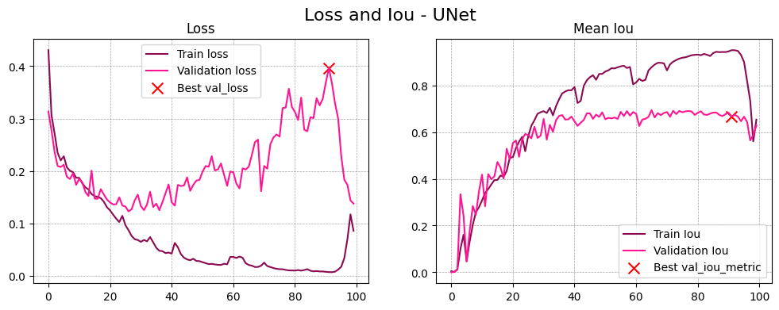
Métricas de evaluación#
y_pred = model_unet.predict(X_test, verbose=0)
y_pred_thresholded = y_pred > 0.5
IOU_keras = MeanIoU(num_classes=2)
IOU_keras.update_state(y_pred_thresholded, y_test)
iou_score = IOU_keras.result().numpy()
prec_score = Precision()
prec_score.update_state(y_pred_thresholded, y_test)
p = prec_score.result().numpy()
recall_score = Recall()
recall_score.update_state(y_pred_thresholded, y_test)
r = recall_score.result().numpy()
auc_score = AUC()
auc_score.update_state(y_pred_thresholded, y_test)
auc = auc_score.result().numpy()
intersection = np.sum(y_pred_thresholded * y_test)
union = np.sum(y_pred_thresholded) + np.sum(y_test)
dice_coefficient = (2. * intersection) / (union + 1e-7) # Evitar división por cero
balanced_accuracy = (p + r) / 2
metrics_dict = {
"Dice Coefficient": dice_coefficient,
"Mean IoU": iou_score,
"Precision": p,
"Recall": r,
"AUC": auc,
"Balanced Accuracy": balanced_accuracy}
df_metrics_unet = pd.DataFrame(metrics_dict, index=["Segmentación U-Net"])
df_metrics_unet.to_csv("resultados_unet.csv")
df_metrics_unet
| Dice Coefficient | Mean IoU | Precision | Recall | AUC | Balanced Accuracy | |
|---|---|---|---|---|---|---|
| Segmentación U-Net | 0.727057 | 0.754134 | 0.662543 | 0.805402 | 0.882914 | 0.733972 |
Comparación visual#
evaluar_modelo(model_unet, X_test, y_test, nombre_modelo="UNet")
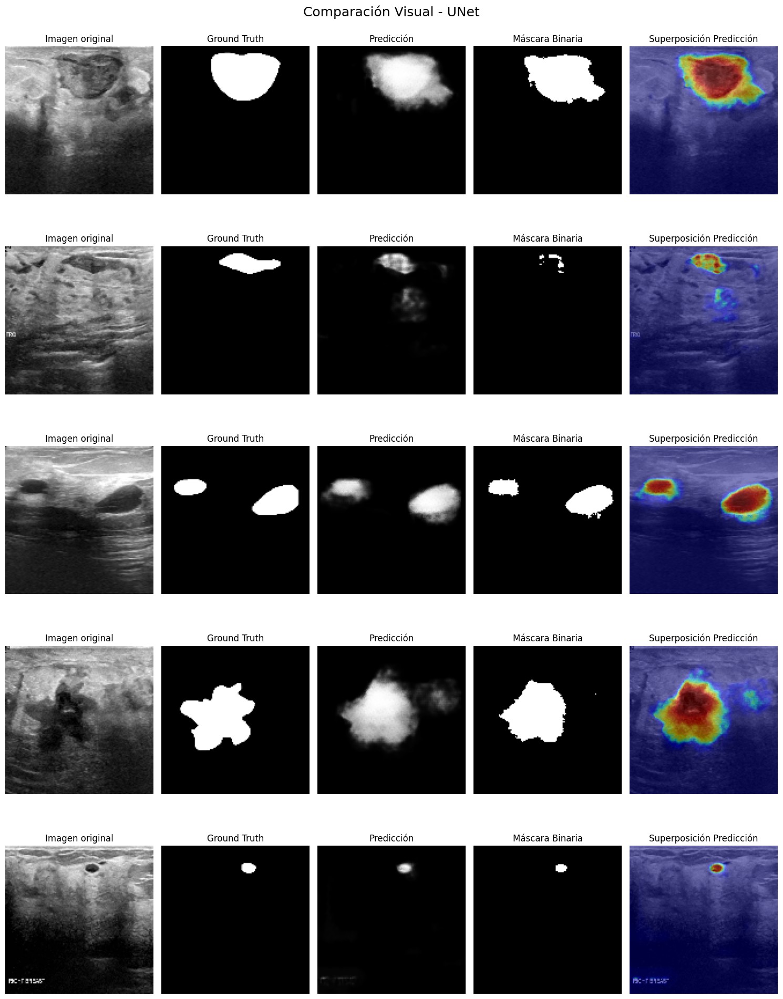
Mapas de error#
visualizar_segmentacion(model_unet, X_test, y_test, nombre_modelo="UNet")
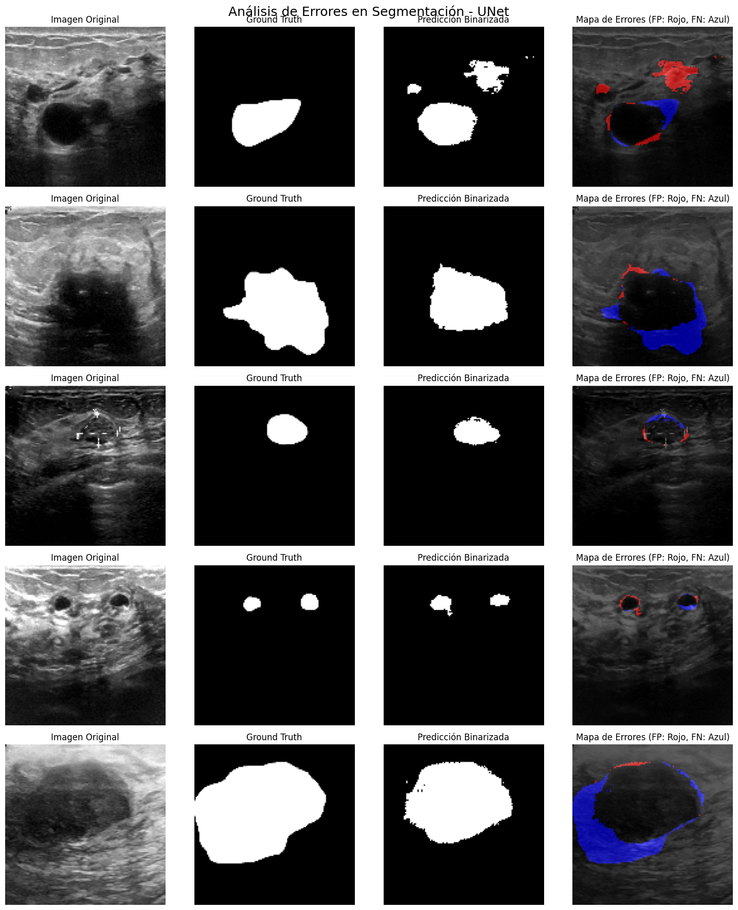
Curvas de evaluación#
plot_roc_pr_curves(y_test, y_pred)
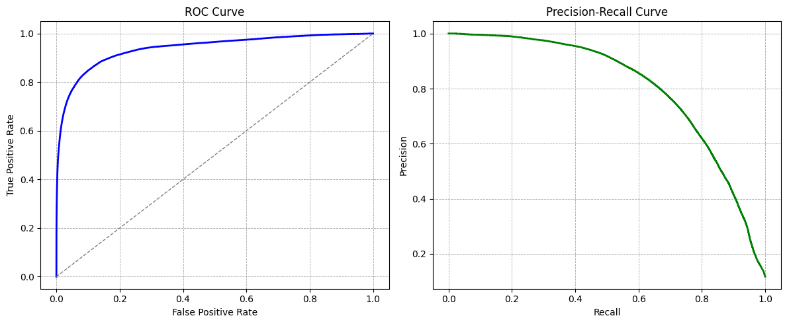
Distribución de métricas#
boxplots(y_test, y_pred)
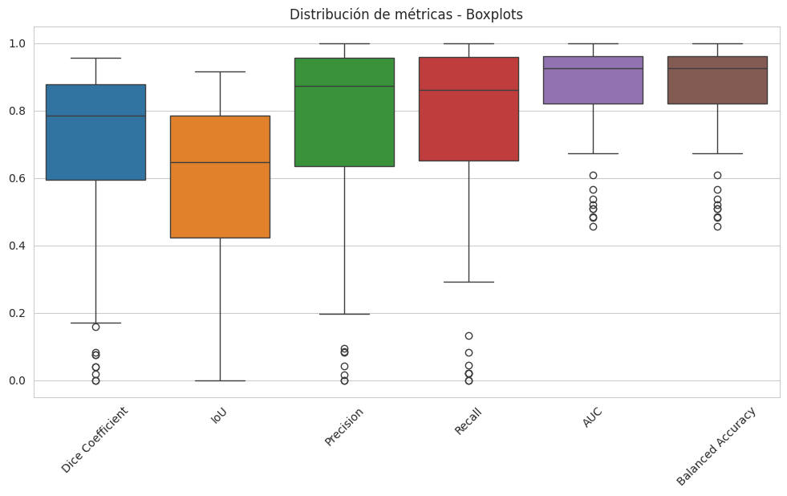
VNet#
Aunque VNet fue diseñado originalmente para segmentación de imágenes médicas en 3D (como volúmenes de resonancia magnética o tomografías), en este caso, se trabajará con imágenes 2D en escala de grises, modificando su arquitectura para utilizar convoluciones 2D en lugar de convoluciones 3D.
Arquitectura y entrenamiento#
def residual_block(input, num_filters):
conv1 = Conv2D(num_filters, (3, 3), padding="same", kernel_initializer="he_normal")(input)
conv1 = tf.keras.layers.ReLU()(conv1)
conv2 = Conv2D(num_filters, (3, 3), padding="same", kernel_initializer="he_normal")(conv1)
# Ajustar canales de input si es necesario
shortcut = Conv2D(num_filters, (1, 1), padding="same")(input) # Conv 1x1 si los canales son diferentes
# Residual connection (skip connection)
res = Add()([shortcut, conv2]) # Ahora los canales coinciden
res = tf.keras.layers.ReLU()(res)
return res
def encoder_block(input, num_filters):
res = residual_block(input, num_filters)
pool = MaxPooling2D((2, 2))(res)
return res, pool
def decoder_block(input, skip_features, num_filters):
up = Conv2DTranspose(num_filters, (2, 2), strides=2, padding="same")(input)
res = residual_block(up, num_filters)
output = Add()([res, skip_features]) # Residual skip connection
return output
def build_vnet(input_shape):
input_layer = Input(input_shape)
# Encoder
s1, p1 = encoder_block(input_layer, 64)
s2, p2 = encoder_block(p1, 128)
s3, p3 = encoder_block(p2, 256)
s4, p4 = encoder_block(p3, 512)
# Bottleneck
b1 = residual_block(p4, 1024)
# Decoder
d1 = decoder_block(b1, s4, 512)
d2 = decoder_block(d1, s3, 256)
d3 = decoder_block(d2, s2, 128)
d4 = decoder_block(d3, s1, 64)
output_layer = Conv2D(1, 1, activation="sigmoid", padding="same")(d4)
model = Model(input_layer, output_layer, name="V-Net")
return model
# Crear el modelo V-Net
model_vnet = build_vnet(input_shape=(128, 128, 1))
model_vnet.compile(loss="binary_crossentropy", optimizer="Adam", metrics=[iou_metric])
checkpointer = [
EarlyStopping(monitor='val_mean_io_u', verbose=1, restore_best_weights=True, mode='max', patience=10),
ModelCheckpoint(
filepath='model_vnet.weights.best.keras',
monitor='val_mean_io_u',
verbose=1,
save_best_only=True,
mode='max'
)
]
history_vnet = None
if os.path.exists('history_vnet.joblib'):
history_vnet = load('history_vnet.joblib')
print("El archivo 'history_vnet.joblib' ya existe. Se ha cargado el historial del entrenamiento.")
else:
history_vnet = model_vnet.fit(
X_train, y_train,
epochs=100,
validation_data=(X_val, y_val),
callbacks=checkpointer,
verbose=2,
batch_size=10
)
dump(history_vnet.history, 'history_vnet.joblib')
print("El entrenamiento se ha completado y el historial ha sido guardado en 'history_vnet.joblib'.")
Epoch 1/100
49/49 - 26s - 523ms/step - iou_metric: 0.0068 - loss: 2.8694 - val_iou_metric: 0.0016 - val_loss: 0.3058
Epoch 2/100
49/49 - 8s - 154ms/step - iou_metric: 0.0298 - loss: 0.2609 - val_iou_metric: 0.0115 - val_loss: 0.2402
Epoch 3/100
49/49 - 8s - 153ms/step - iou_metric: 0.1742 - loss: 0.2254 - val_iou_metric: 0.2959 - val_loss: 0.2100
Epoch 4/100
49/49 - 8s - 154ms/step - iou_metric: 0.1935 - loss: 0.2189 - val_iou_metric: 0.3263 - val_loss: 0.2025
Epoch 5/100
49/49 - 8s - 156ms/step - iou_metric: 0.2633 - loss: 0.2047 - val_iou_metric: 0.3977 - val_loss: 0.1732
Epoch 6/100
49/49 - 8s - 160ms/step - iou_metric: 0.3027 - loss: 0.1903 - val_iou_metric: 0.4152 - val_loss: 0.1613
Epoch 7/100
49/49 - 10s - 210ms/step - iou_metric: 0.2859 - loss: 0.1938 - val_iou_metric: 0.4589 - val_loss: 0.1842
Epoch 8/100
49/49 - 10s - 211ms/step - iou_metric: 0.3480 - loss: 0.1832 - val_iou_metric: 0.4335 - val_loss: 0.2108
Epoch 9/100
49/49 - 10s - 208ms/step - iou_metric: 0.3212 - loss: 0.1889 - val_iou_metric: 0.3605 - val_loss: 0.1597
Epoch 10/100
49/49 - 10s - 209ms/step - iou_metric: 0.4037 - loss: 0.1630 - val_iou_metric: 0.5124 - val_loss: 0.1594
Epoch 11/100
49/49 - 10s - 206ms/step - iou_metric: 0.4603 - loss: 0.1533 - val_iou_metric: 0.4932 - val_loss: 0.1393
Epoch 12/100
49/49 - 10s - 209ms/step - iou_metric: 0.4841 - loss: 0.1423 - val_iou_metric: 0.5254 - val_loss: 0.1853
Epoch 13/100
49/49 - 10s - 207ms/step - iou_metric: 0.4647 - loss: 0.1450 - val_iou_metric: 0.5387 - val_loss: 0.1451
Epoch 14/100
49/49 - 8s - 160ms/step - iou_metric: 0.5158 - loss: 0.1295 - val_iou_metric: 0.5757 - val_loss: 0.1337
Epoch 15/100
49/49 - 10s - 210ms/step - iou_metric: 0.5340 - loss: 0.1203 - val_iou_metric: 0.5556 - val_loss: 0.1289
Epoch 16/100
49/49 - 10s - 208ms/step - iou_metric: 0.5280 - loss: 0.1197 - val_iou_metric: 0.6065 - val_loss: 0.1270
Epoch 17/100
49/49 - 10s - 209ms/step - iou_metric: 0.5865 - loss: 0.1080 - val_iou_metric: 0.6140 - val_loss: 0.1216
Epoch 18/100
49/49 - 10s - 210ms/step - iou_metric: 0.6167 - loss: 0.0964 - val_iou_metric: 0.6234 - val_loss: 0.1168
Epoch 19/100
49/49 - 10s - 207ms/step - iou_metric: 0.6158 - loss: 0.0956 - val_iou_metric: 0.6439 - val_loss: 0.1229
Epoch 20/100
49/49 - 10s - 208ms/step - iou_metric: 0.6599 - loss: 0.0823 - val_iou_metric: 0.6478 - val_loss: 0.1226
Epoch 21/100
49/49 - 10s - 209ms/step - iou_metric: 0.6849 - loss: 0.0714 - val_iou_metric: 0.6738 - val_loss: 0.1235
Epoch 22/100
49/49 - 10s - 208ms/step - iou_metric: 0.6982 - loss: 0.0695 - val_iou_metric: 0.6626 - val_loss: 0.1181
Epoch 23/100
49/49 - 10s - 208ms/step - iou_metric: 0.7014 - loss: 0.0688 - val_iou_metric: 0.6506 - val_loss: 0.1477
Epoch 24/100
49/49 - 10s - 210ms/step - iou_metric: 0.7187 - loss: 0.0607 - val_iou_metric: 0.6430 - val_loss: 0.1200
Epoch 25/100
49/49 - 10s - 209ms/step - iou_metric: 0.7158 - loss: 0.0628 - val_iou_metric: 0.6495 - val_loss: 0.1231
Epoch 26/100
49/49 - 10s - 209ms/step - iou_metric: 0.7096 - loss: 0.0696 - val_iou_metric: 0.6749 - val_loss: 0.1382
Epoch 27/100
49/49 - 10s - 209ms/step - iou_metric: 0.7484 - loss: 0.0532 - val_iou_metric: 0.6737 - val_loss: 0.1530
Epoch 28/100
49/49 - 10s - 209ms/step - iou_metric: 0.7780 - loss: 0.0461 - val_iou_metric: 0.6913 - val_loss: 0.1530
Epoch 29/100
49/49 - 10s - 207ms/step - iou_metric: 0.7841 - loss: 0.0434 - val_iou_metric: 0.6889 - val_loss: 0.1757
Epoch 30/100
49/49 - 8s - 159ms/step - iou_metric: 0.7958 - loss: 0.0392 - val_iou_metric: 0.6843 - val_loss: 0.1531
Epoch 31/100
49/49 - 10s - 210ms/step - iou_metric: 0.7998 - loss: 0.0398 - val_iou_metric: 0.6740 - val_loss: 0.1861
Epoch 32/100
49/49 - 8s - 160ms/step - iou_metric: 0.8041 - loss: 0.0372 - val_iou_metric: 0.6717 - val_loss: 0.1778
Epoch 33/100
49/49 - 10s - 211ms/step - iou_metric: 0.8112 - loss: 0.0352 - val_iou_metric: 0.6678 - val_loss: 0.1877
Epoch 34/100
49/49 - 10s - 209ms/step - iou_metric: 0.8293 - loss: 0.0311 - val_iou_metric: 0.6841 - val_loss: 0.1900
Epoch 35/100
49/49 - 10s - 206ms/step - iou_metric: 0.8310 - loss: 0.0308 - val_iou_metric: 0.6845 - val_loss: 0.2244
Epoch 36/100
49/49 - 10s - 209ms/step - iou_metric: 0.8415 - loss: 0.0287 - val_iou_metric: 0.6862 - val_loss: 0.2253
Epoch 37/100
49/49 - 10s - 209ms/step - iou_metric: 0.8447 - loss: 0.0278 - val_iou_metric: 0.6976 - val_loss: 0.2169
Epoch 38/100
49/49 - 8s - 161ms/step - iou_metric: 0.8488 - loss: 0.0263 - val_iou_metric: 0.6877 - val_loss: 0.2328
Epoch 39/100
49/49 - 10s - 210ms/step - iou_metric: 0.8575 - loss: 0.0259 - val_iou_metric: 0.6820 - val_loss: 0.2506
Epoch 40/100
49/49 - 10s - 208ms/step - iou_metric: 0.8567 - loss: 0.0252 - val_iou_metric: 0.6901 - val_loss: 0.2237
Epoch 41/100
49/49 - 10s - 207ms/step - iou_metric: 0.8654 - loss: 0.0227 - val_iou_metric: 0.6878 - val_loss: 0.2536
Epoch 42/100
49/49 - 8s - 160ms/step - iou_metric: 0.8765 - loss: 0.0209 - val_iou_metric: 0.6913 - val_loss: 0.2713
Epoch 43/100
49/49 - 8s - 160ms/step - iou_metric: 0.8745 - loss: 0.0212 - val_iou_metric: 0.6887 - val_loss: 0.2705
Epoch 44/100
49/49 - 10s - 211ms/step - iou_metric: 0.8821 - loss: 0.0199 - val_iou_metric: 0.6926 - val_loss: 0.2678
Epoch 45/100
49/49 - 10s - 207ms/step - iou_metric: 0.8814 - loss: 0.0190 - val_iou_metric: 0.6934 - val_loss: 0.2955
Epoch 46/100
49/49 - 8s - 160ms/step - iou_metric: 0.8830 - loss: 0.0195 - val_iou_metric: 0.6924 - val_loss: 0.2720
Epoch 47/100
49/49 - 10s - 209ms/step - iou_metric: 0.8507 - loss: 0.0288 - val_iou_metric: 0.6394 - val_loss: 0.2003
Epoch 48/100
49/49 - 8s - 161ms/step - iou_metric: 0.7248 - loss: 0.0735 - val_iou_metric: 0.5606 - val_loss: 0.1979
Epoch 49/100
49/49 - 10s - 208ms/step - iou_metric: 0.7151 - loss: 0.0686 - val_iou_metric: 0.6614 - val_loss: 0.1304
Epoch 50/100
49/49 - 10s - 208ms/step - iou_metric: 0.7755 - loss: 0.0498 - val_iou_metric: 0.6867 - val_loss: 0.1681
Epoch 51/100
49/49 - 10s - 208ms/step - iou_metric: 0.8107 - loss: 0.0393 - val_iou_metric: 0.6388 - val_loss: 0.1647
Epoch 52/100
49/49 - 10s - 210ms/step - iou_metric: 0.7720 - loss: 0.0474 - val_iou_metric: 0.6799 - val_loss: 0.1450
Epoch 53/100
49/49 - 10s - 209ms/step - iou_metric: 0.8374 - loss: 0.0302 - val_iou_metric: 0.6893 - val_loss: 0.1756
Epoch 54/100
49/49 - 10s - 209ms/step - iou_metric: 0.8642 - loss: 0.0236 - val_iou_metric: 0.6922 - val_loss: 0.2254
Epoch 55/100
49/49 - 8s - 161ms/step - iou_metric: 0.8754 - loss: 0.0203 - val_iou_metric: 0.6980 - val_loss: 0.2456
Epoch 56/100
49/49 - 10s - 208ms/step - iou_metric: 0.8753 - loss: 0.0203 - val_iou_metric: 0.6825 - val_loss: 0.2227
Epoch 57/100
49/49 - 10s - 208ms/step - iou_metric: 0.8876 - loss: 0.0178 - val_iou_metric: 0.6855 - val_loss: 0.2667
Epoch 58/100
49/49 - 8s - 160ms/step - iou_metric: 0.9003 - loss: 0.0156 - val_iou_metric: 0.6881 - val_loss: 0.3229
Epoch 59/100
49/49 - 10s - 209ms/step - iou_metric: 0.9066 - loss: 0.0141 - val_iou_metric: 0.6903 - val_loss: 0.3305
Epoch 60/100
49/49 - 10s - 211ms/step - iou_metric: 0.9073 - loss: 0.0138 - val_iou_metric: 0.6927 - val_loss: 0.3567
Epoch 61/100
49/49 - 8s - 161ms/step - iou_metric: 0.9115 - loss: 0.0137 - val_iou_metric: 0.6812 - val_loss: 0.3168
Epoch 62/100
49/49 - 10s - 209ms/step - iou_metric: 0.9102 - loss: 0.0138 - val_iou_metric: 0.7008 - val_loss: 0.3325
Epoch 63/100
49/49 - 8s - 161ms/step - iou_metric: 0.9124 - loss: 0.0132 - val_iou_metric: 0.6945 - val_loss: 0.3292
Epoch 64/100
49/49 - 10s - 209ms/step - iou_metric: 0.9199 - loss: 0.0122 - val_iou_metric: 0.6965 - val_loss: 0.3434
Epoch 65/100
49/49 - 10s - 209ms/step - iou_metric: 0.9217 - loss: 0.0117 - val_iou_metric: 0.6902 - val_loss: 0.3657
Epoch 66/100
49/49 - 8s - 160ms/step - iou_metric: 0.9224 - loss: 0.0115 - val_iou_metric: 0.6871 - val_loss: 0.3833
Epoch 67/100
49/49 - 10s - 210ms/step - iou_metric: 0.9247 - loss: 0.0111 - val_iou_metric: 0.6958 - val_loss: 0.3921
Epoch 68/100
49/49 - 10s - 207ms/step - iou_metric: 0.8177 - loss: 0.0448 - val_iou_metric: 0.6270 - val_loss: 0.1438
Epoch 69/100
49/49 - 10s - 209ms/step - iou_metric: 0.7336 - loss: 0.0601 - val_iou_metric: 0.6488 - val_loss: 0.1431
Epoch 70/100
49/49 - 10s - 211ms/step - iou_metric: 0.7842 - loss: 0.0424 - val_iou_metric: 0.6656 - val_loss: 0.2020
Epoch 71/100
49/49 - 8s - 161ms/step - iou_metric: 0.8404 - loss: 0.0321 - val_iou_metric: 0.6933 - val_loss: 0.1765
Epoch 72/100
49/49 - 10s - 208ms/step - iou_metric: 0.8584 - loss: 0.0268 - val_iou_metric: 0.6810 - val_loss: 0.1732
Epoch 73/100
49/49 - 8s - 160ms/step - iou_metric: 0.8751 - loss: 0.0231 - val_iou_metric: 0.6881 - val_loss: 0.1849
Epoch 74/100
49/49 - 8s - 160ms/step - iou_metric: 0.8905 - loss: 0.0171 - val_iou_metric: 0.6934 - val_loss: 0.2313
Epoch 75/100
49/49 - 10s - 210ms/step - iou_metric: 0.9063 - loss: 0.0149 - val_iou_metric: 0.6940 - val_loss: 0.2463
Epoch 76/100
49/49 - 10s - 207ms/step - iou_metric: 0.9089 - loss: 0.0140 - val_iou_metric: 0.6996 - val_loss: 0.2465
Epoch 77/100
49/49 - 10s - 210ms/step - iou_metric: 0.9168 - loss: 0.0127 - val_iou_metric: 0.6977 - val_loss: 0.2683
Epoch 78/100
49/49 - 10s - 207ms/step - iou_metric: 0.9268 - loss: 0.0111 - val_iou_metric: 0.6971 - val_loss: 0.3158
Epoch 79/100
49/49 - 10s - 211ms/step - iou_metric: 0.9297 - loss: 0.0104 - val_iou_metric: 0.6996 - val_loss: 0.2888
Epoch 80/100
49/49 - 10s - 207ms/step - iou_metric: 0.9327 - loss: 0.0100 - val_iou_metric: 0.6961 - val_loss: 0.3144
Epoch 81/100
49/49 - 10s - 210ms/step - iou_metric: 0.9350 - loss: 0.0097 - val_iou_metric: 0.6958 - val_loss: 0.3430
Epoch 82/100
49/49 - 10s - 209ms/step - iou_metric: 0.9397 - loss: 0.0087 - val_iou_metric: 0.6948 - val_loss: 0.3539
Epoch 83/100
49/49 - 10s - 207ms/step - iou_metric: 0.9422 - loss: 0.0086 - val_iou_metric: 0.6906 - val_loss: 0.3655
Epoch 84/100
49/49 - 10s - 209ms/step - iou_metric: 0.9375 - loss: 0.0090 - val_iou_metric: 0.6962 - val_loss: 0.3981
Epoch 85/100
49/49 - 10s - 208ms/step - iou_metric: 0.9417 - loss: 0.0085 - val_iou_metric: 0.6977 - val_loss: 0.3945
Epoch 86/100
49/49 - 8s - 160ms/step - iou_metric: 0.9406 - loss: 0.0086 - val_iou_metric: 0.6912 - val_loss: 0.3709
Epoch 87/100
49/49 - 10s - 209ms/step - iou_metric: 0.9422 - loss: 0.0082 - val_iou_metric: 0.6979 - val_loss: 0.3901
Epoch 88/100
49/49 - 10s - 210ms/step - iou_metric: 0.9463 - loss: 0.0078 - val_iou_metric: 0.6930 - val_loss: 0.3776
Epoch 89/100
49/49 - 10s - 208ms/step - iou_metric: 0.9450 - loss: 0.0082 - val_iou_metric: 0.6917 - val_loss: 0.3540
Epoch 90/100
49/49 - 10s - 207ms/step - iou_metric: 0.9460 - loss: 0.0078 - val_iou_metric: 0.6919 - val_loss: 0.4103
Epoch 91/100
49/49 - 8s - 161ms/step - iou_metric: 0.9492 - loss: 0.0072 - val_iou_metric: 0.6930 - val_loss: 0.3903
Epoch 92/100
49/49 - 10s - 210ms/step - iou_metric: 0.9523 - loss: 0.0069 - val_iou_metric: 0.6995 - val_loss: 0.4421
Epoch 93/100
49/49 - 8s - 161ms/step - iou_metric: 0.9524 - loss: 0.0073 - val_iou_metric: 0.6941 - val_loss: 0.4352
Epoch 94/100
49/49 - 10s - 207ms/step - iou_metric: 0.9531 - loss: 0.0069 - val_iou_metric: 0.6948 - val_loss: 0.4357
Epoch 95/100
49/49 - 10s - 209ms/step - iou_metric: 0.9559 - loss: 0.0067 - val_iou_metric: 0.6994 - val_loss: 0.4535
Epoch 96/100
49/49 - 10s - 209ms/step - iou_metric: 0.9568 - loss: 0.0065 - val_iou_metric: 0.7005 - val_loss: 0.4317
Epoch 97/100
49/49 - 10s - 210ms/step - iou_metric: 0.9545 - loss: 0.0069 - val_iou_metric: 0.6950 - val_loss: 0.4501
Epoch 98/100
49/49 - 10s - 208ms/step - iou_metric: 0.9481 - loss: 0.0082 - val_iou_metric: 0.6837 - val_loss: 0.3738
Epoch 99/100
49/49 - 8s - 162ms/step - iou_metric: 0.9460 - loss: 0.0081 - val_iou_metric: 0.6940 - val_loss: 0.3702
Epoch 100/100
49/49 - 10s - 207ms/step - iou_metric: 0.9471 - loss: 0.0078 - val_iou_metric: 0.6767 - val_loss: 0.3761
El entrenamiento se ha completado y el historial ha sido guardado en 'history_vnet.joblib'.
graficar_historial(history_vnet, nombre_modelo="VNet")
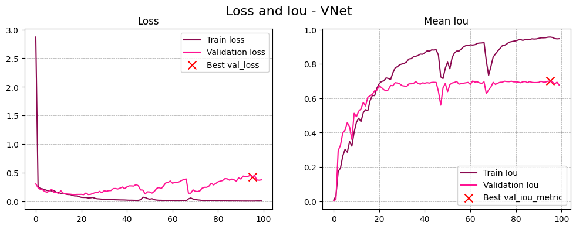
Métricas de evaluación#
y_pred = model_vnet.predict(X_test, verbose=0)
y_pred_thresholded = y_pred > 0.5
IOU_keras = MeanIoU(num_classes=2)
IOU_keras.update_state(y_pred_thresholded, y_test)
iou_score = IOU_keras.result().numpy()
prec_score = Precision()
prec_score.update_state(y_pred_thresholded, y_test)
p = prec_score.result().numpy()
recall_score = Recall()
recall_score.update_state(y_pred_thresholded, y_test)
r = recall_score.result().numpy()
auc_score = AUC()
auc_score.update_state(y_pred_thresholded, y_test)
auc = auc_score.result().numpy()
intersection = np.sum(y_pred_thresholded * y_test)
union = np.sum(y_pred_thresholded) + np.sum(y_test)
dice_coefficient = (2. * intersection) / (union + 1e-7) # Evitar división por cero
balanced_accuracy = (p + r) / 2
metrics_dict = {
"Dice Coefficient": dice_coefficient,
"Mean IoU": iou_score,
"Precision": p,
"Recall": r,
"AUC": auc,
"Balanced Accuracy": balanced_accuracy}
df_metrics_unet = pd.DataFrame(metrics_dict, index=["Segmentación VNet"])
df_metrics_unet.to_csv("resultados_vnet.csv")
df_metrics_unet
| Dice Coefficient | Mean IoU | Precision | Recall | AUC | Balanced Accuracy | |
|---|---|---|---|---|---|---|
| Segmentación VNet | 0.73928 | 0.764111 | 0.657537 | 0.844551 | 0.902005 | 0.751044 |
Comparación visual#
evaluar_modelo(model_vnet, X_test, y_test, nombre_modelo="VNet")
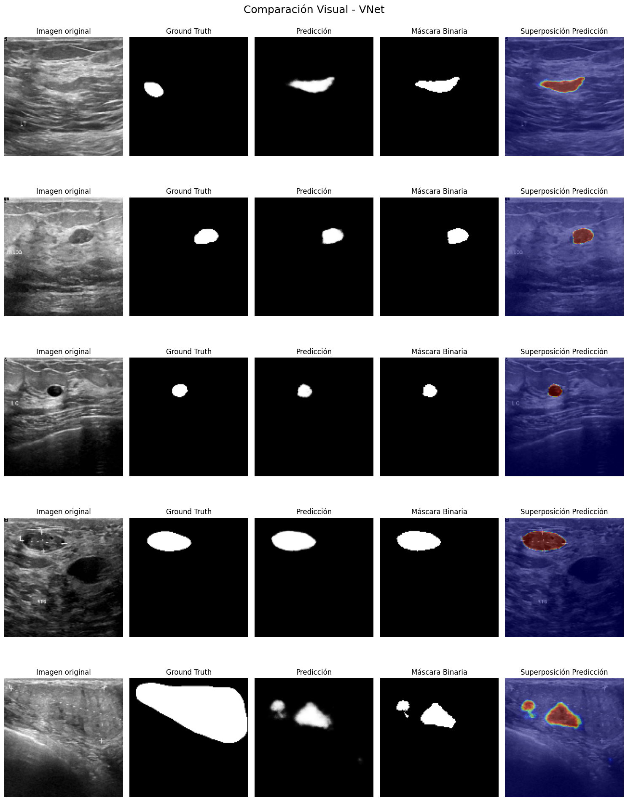
Mapas de error#
visualizar_segmentacion(model_vnet, X_test, y_test, nombre_modelo="VNet")
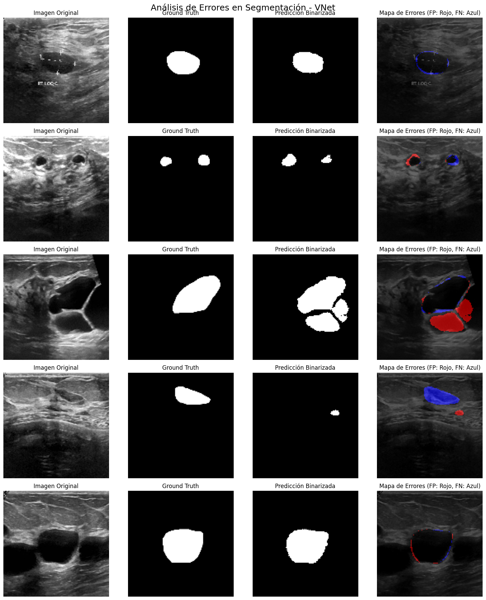
Curvas de evaluación#
plot_roc_pr_curves(y_test, y_pred)

Distribución de métricas#
boxplots(y_test, y_pred)

SegNet#
Arquitectura y entrenamiento#
def encoder_block(input_layer, num_filters):
"""
Bloque del codificador con BatchNorm + ReLU + Dropout
"""
# Primera convolución
x = Conv2D(num_filters, (3, 3), padding="same")(input_layer)
x = BatchNormalization()(x)
x = Activation("relu")(x)
x = Dropout(0.2)(x)
# Segunda convolución
x = Conv2D(num_filters, (3, 3), padding="same")(x)
x = BatchNormalization()(x)
x = Activation("relu")(x)
x = Dropout(0.2)(x)
p = MaxPooling2D((2, 2), strides=2, padding="same")(x)
return x, p
def decoder_block(input_layer, skip_layer, num_filters):
"""
Bloque del decodificador: Upsampling seguido de convoluciones.
"""
x = UpSampling2D((2, 2))(input_layer)
x = Conv2D(num_filters, (3, 3), padding="same", activation="relu")(x)
x = Conv2D(num_filters, (3, 3), padding="same", activation="relu")(x)
return x
input_layer = Input((128, 128, 1))
# Codificador
e1, p1 = encoder_block(input_layer, 64)
e2, p2 = encoder_block(p1, 128)
e3, p3 = encoder_block(p2, 256)
# Bottleneck
b = Conv2D(512, (3, 3), padding="same", activation="relu")(p3)
b = Conv2D(512, (3, 3), padding="same", activation="relu")(b)
# Decodificador
d3 = decoder_block(b, e3, 256)
d2 = decoder_block(d3, e2, 128)
d1 = decoder_block(d2, e1, 64)
# Capa de salida
output_layer = Conv2D(1, (1, 1), activation="sigmoid")(d1)
Seg_Net = Model(input_layer, output_layer, name="SegNet")
Seg_Net.compile(optimizer=Adam(), loss= "binary_crossentropy", metrics=[iou_metric])
checkpointer = [
EarlyStopping(monitor='val_mean_io_u', verbose=1, restore_best_weights=True, mode='max', patience=10),
ModelCheckpoint(filepath='model_fcn.weights.best.keras',
monitor='val_mean_io_u', verbose=1, save_best_only=True, mode='max')
]
X_train = X_train.astype("float32")
y_train = y_train.astype("float32")
X_val = X_val.astype("float32")
y_val = y_val.astype("float32")
history_segnet = None
if os.path.exists('history_segnet.joblib'):
history_segnet = load('history_segnet.joblib')
print("Historial de entrenamiento cargado desde 'history_segnet.joblib'.")
else:
history_segnet = Seg_Net.fit(
X_train, y_train,
epochs=100,
validation_data=(X_val, y_val),
callbacks=checkpointer,
verbose=2,
batch_size=10
)
dump(history_segnet.history, 'history_segnet.joblib')
print("Entrenamiento completado y guardado en 'history_segnet.joblib'.")
Epoch 1/100
49/49 - 31s - 629ms/step - iou_metric: 0.0026 - loss: 0.4455 - val_iou_metric: 2.6179e-09 - val_loss: 0.3626
Epoch 2/100
49/49 - 6s - 116ms/step - iou_metric: 2.1900e-09 - loss: 0.2660 - val_iou_metric: 2.6179e-09 - val_loss: 0.2917
Epoch 3/100
49/49 - 6s - 116ms/step - iou_metric: 2.1900e-09 - loss: 0.2354 - val_iou_metric: 2.6179e-09 - val_loss: 0.2714
Epoch 4/100
49/49 - 10s - 214ms/step - iou_metric: 0.0684 - loss: 0.2295 - val_iou_metric: 2.6179e-09 - val_loss: 0.2928
Epoch 5/100
49/49 - 10s - 212ms/step - iou_metric: 0.1904 - loss: 0.2130 - val_iou_metric: 2.6179e-09 - val_loss: 0.2570
Epoch 6/100
49/49 - 6s - 126ms/step - iou_metric: 0.2809 - loss: 0.2032 - val_iou_metric: 2.6179e-09 - val_loss: 0.2632
Epoch 7/100
49/49 - 6s - 125ms/step - iou_metric: 0.3039 - loss: 0.1969 - val_iou_metric: 2.6179e-09 - val_loss: 0.2540
Epoch 8/100
49/49 - 6s - 120ms/step - iou_metric: 0.3616 - loss: 0.1777 - val_iou_metric: 2.6179e-09 - val_loss: 0.2460
Epoch 9/100
49/49 - 10s - 213ms/step - iou_metric: 0.3721 - loss: 0.1790 - val_iou_metric: 2.6179e-09 - val_loss: 0.2536
Epoch 10/100
49/49 - 6s - 118ms/step - iou_metric: 0.3842 - loss: 0.1727 - val_iou_metric: 0.0199 - val_loss: 0.2508
Epoch 11/100
49/49 - 6s - 116ms/step - iou_metric: 0.4222 - loss: 0.1653 - val_iou_metric: 0.0321 - val_loss: 0.2326
Epoch 12/100
49/49 - 10s - 214ms/step - iou_metric: 0.4075 - loss: 0.1764 - val_iou_metric: 0.2144 - val_loss: 0.2042
Epoch 13/100
49/49 - 6s - 121ms/step - iou_metric: 0.4363 - loss: 0.1608 - val_iou_metric: 0.2098 - val_loss: 0.1952
Epoch 14/100
49/49 - 6s - 121ms/step - iou_metric: 0.4555 - loss: 0.1563 - val_iou_metric: 0.3027 - val_loss: 0.1845
Epoch 15/100
49/49 - 10s - 205ms/step - iou_metric: 0.4959 - loss: 0.1542 - val_iou_metric: 0.2624 - val_loss: 0.1921
Epoch 16/100
49/49 - 10s - 214ms/step - iou_metric: 0.5148 - loss: 0.1416 - val_iou_metric: 0.1826 - val_loss: 0.1950
Epoch 17/100
49/49 - 10s - 205ms/step - iou_metric: 0.4980 - loss: 0.1427 - val_iou_metric: 0.4864 - val_loss: 0.1653
Epoch 18/100
49/49 - 10s - 213ms/step - iou_metric: 0.5213 - loss: 0.1373 - val_iou_metric: 0.2387 - val_loss: 0.1815
Epoch 19/100
49/49 - 6s - 118ms/step - iou_metric: 0.5181 - loss: 0.1427 - val_iou_metric: 0.2943 - val_loss: 0.1900
Epoch 20/100
49/49 - 10s - 214ms/step - iou_metric: 0.5366 - loss: 0.1285 - val_iou_metric: 0.3804 - val_loss: 0.1602
Epoch 21/100
49/49 - 10s - 208ms/step - iou_metric: 0.5426 - loss: 0.1257 - val_iou_metric: 0.2101 - val_loss: 0.1819
Epoch 22/100
49/49 - 10s - 204ms/step - iou_metric: 0.5591 - loss: 0.1221 - val_iou_metric: 0.5020 - val_loss: 0.1367
Epoch 23/100
49/49 - 10s - 208ms/step - iou_metric: 0.5444 - loss: 0.1265 - val_iou_metric: 0.4694 - val_loss: 0.1441
Epoch 24/100
49/49 - 10s - 212ms/step - iou_metric: 0.5771 - loss: 0.1179 - val_iou_metric: 0.4826 - val_loss: 0.1533
Epoch 25/100
49/49 - 6s - 122ms/step - iou_metric: 0.5826 - loss: 0.1135 - val_iou_metric: 0.5495 - val_loss: 0.1380
Epoch 26/100
49/49 - 6s - 119ms/step - iou_metric: 0.5622 - loss: 0.1181 - val_iou_metric: 0.5418 - val_loss: 0.1440
Epoch 27/100
49/49 - 10s - 214ms/step - iou_metric: 0.5735 - loss: 0.1184 - val_iou_metric: 0.5573 - val_loss: 0.1276
Epoch 28/100
49/49 - 6s - 122ms/step - iou_metric: 0.6054 - loss: 0.1078 - val_iou_metric: 0.5202 - val_loss: 0.1336
Epoch 29/100
49/49 - 6s - 123ms/step - iou_metric: 0.6099 - loss: 0.1035 - val_iou_metric: 0.5583 - val_loss: 0.1267
Epoch 30/100
49/49 - 10s - 204ms/step - iou_metric: 0.6122 - loss: 0.1024 - val_iou_metric: 0.4513 - val_loss: 0.1537
Epoch 31/100
49/49 - 10s - 208ms/step - iou_metric: 0.6239 - loss: 0.0999 - val_iou_metric: 0.5103 - val_loss: 0.1319
Epoch 32/100
49/49 - 10s - 214ms/step - iou_metric: 0.6459 - loss: 0.0883 - val_iou_metric: 0.4401 - val_loss: 0.1504
Epoch 33/100
49/49 - 10s - 204ms/step - iou_metric: 0.6671 - loss: 0.0823 - val_iou_metric: 0.4636 - val_loss: 0.1542
Epoch 34/100
49/49 - 10s - 214ms/step - iou_metric: 0.6621 - loss: 0.0847 - val_iou_metric: 0.5157 - val_loss: 0.1362
Epoch 35/100
49/49 - 6s - 124ms/step - iou_metric: 0.6703 - loss: 0.0843 - val_iou_metric: 0.3919 - val_loss: 0.1533
Epoch 36/100
49/49 - 10s - 208ms/step - iou_metric: 0.6578 - loss: 0.0816 - val_iou_metric: 0.5303 - val_loss: 0.1298
Epoch 37/100
49/49 - 10s - 207ms/step - iou_metric: 0.6822 - loss: 0.0765 - val_iou_metric: 0.5475 - val_loss: 0.1461
Epoch 38/100
49/49 - 10s - 204ms/step - iou_metric: 0.6915 - loss: 0.0718 - val_iou_metric: 0.5168 - val_loss: 0.1559
Epoch 39/100
49/49 - 10s - 209ms/step - iou_metric: 0.6948 - loss: 0.0791 - val_iou_metric: 0.5114 - val_loss: 0.1322
Epoch 40/100
49/49 - 10s - 214ms/step - iou_metric: 0.6843 - loss: 0.0730 - val_iou_metric: 0.5488 - val_loss: 0.1329
Epoch 41/100
49/49 - 6s - 119ms/step - iou_metric: 0.7194 - loss: 0.0665 - val_iou_metric: 0.4260 - val_loss: 0.1910
Epoch 42/100
49/49 - 10s - 209ms/step - iou_metric: 0.6840 - loss: 0.0750 - val_iou_metric: 0.5204 - val_loss: 0.1587
Epoch 43/100
49/49 - 6s - 118ms/step - iou_metric: 0.7379 - loss: 0.0619 - val_iou_metric: 0.5026 - val_loss: 0.1506
Epoch 44/100
49/49 - 6s - 118ms/step - iou_metric: 0.7239 - loss: 0.0608 - val_iou_metric: 0.5689 - val_loss: 0.1319
Epoch 45/100
49/49 - 10s - 208ms/step - iou_metric: 0.7185 - loss: 0.0678 - val_iou_metric: 0.5433 - val_loss: 0.1357
Epoch 46/100
49/49 - 10s - 208ms/step - iou_metric: 0.7247 - loss: 0.0619 - val_iou_metric: 0.5998 - val_loss: 0.1445
Epoch 47/100
49/49 - 6s - 121ms/step - iou_metric: 0.7314 - loss: 0.0613 - val_iou_metric: 0.5047 - val_loss: 0.1660
Epoch 48/100
49/49 - 6s - 117ms/step - iou_metric: 0.7538 - loss: 0.0527 - val_iou_metric: 0.5385 - val_loss: 0.1592
Epoch 49/100
49/49 - 10s - 214ms/step - iou_metric: 0.7732 - loss: 0.0488 - val_iou_metric: 0.5818 - val_loss: 0.1441
Epoch 50/100
49/49 - 6s - 123ms/step - iou_metric: 0.7617 - loss: 0.0497 - val_iou_metric: 0.5602 - val_loss: 0.1428
Epoch 51/100
49/49 - 6s - 122ms/step - iou_metric: 0.7412 - loss: 0.0572 - val_iou_metric: 0.5471 - val_loss: 0.1547
Epoch 52/100
49/49 - 6s - 123ms/step - iou_metric: 0.7847 - loss: 0.0446 - val_iou_metric: 0.5680 - val_loss: 0.1712
Epoch 53/100
49/49 - 10s - 209ms/step - iou_metric: 0.7936 - loss: 0.0416 - val_iou_metric: 0.5018 - val_loss: 0.1833
Epoch 54/100
49/49 - 10s - 207ms/step - iou_metric: 0.8018 - loss: 0.0396 - val_iou_metric: 0.5905 - val_loss: 0.1492
Epoch 55/100
49/49 - 6s - 117ms/step - iou_metric: 0.8020 - loss: 0.0396 - val_iou_metric: 0.4650 - val_loss: 0.2154
Epoch 56/100
49/49 - 6s - 117ms/step - iou_metric: 0.8010 - loss: 0.0416 - val_iou_metric: 0.5963 - val_loss: 0.1465
Epoch 57/100
49/49 - 6s - 123ms/step - iou_metric: 0.7981 - loss: 0.0420 - val_iou_metric: 0.5708 - val_loss: 0.1627
Epoch 58/100
49/49 - 10s - 204ms/step - iou_metric: 0.8103 - loss: 0.0370 - val_iou_metric: 0.5924 - val_loss: 0.1777
Epoch 59/100
49/49 - 10s - 213ms/step - iou_metric: 0.8192 - loss: 0.0340 - val_iou_metric: 0.5872 - val_loss: 0.1605
Epoch 60/100
49/49 - 10s - 209ms/step - iou_metric: 0.8154 - loss: 0.0347 - val_iou_metric: 0.5914 - val_loss: 0.1655
Epoch 61/100
49/49 - 10s - 205ms/step - iou_metric: 0.8351 - loss: 0.0307 - val_iou_metric: 0.4911 - val_loss: 0.2799
Epoch 62/100
49/49 - 10s - 213ms/step - iou_metric: 0.8416 - loss: 0.0296 - val_iou_metric: 0.5878 - val_loss: 0.1605
Epoch 63/100
49/49 - 6s - 118ms/step - iou_metric: 0.8277 - loss: 0.0335 - val_iou_metric: 0.5511 - val_loss: 0.1897
Epoch 64/100
49/49 - 10s - 210ms/step - iou_metric: 0.8213 - loss: 0.0359 - val_iou_metric: 0.5691 - val_loss: 0.1512
Epoch 65/100
49/49 - 6s - 123ms/step - iou_metric: 0.8379 - loss: 0.0311 - val_iou_metric: 0.6030 - val_loss: 0.1582
Epoch 66/100
49/49 - 6s - 123ms/step - iou_metric: 0.8425 - loss: 0.0286 - val_iou_metric: 0.5459 - val_loss: 0.1983
Epoch 67/100
49/49 - 10s - 204ms/step - iou_metric: 0.8426 - loss: 0.0287 - val_iou_metric: 0.6017 - val_loss: 0.1565
Epoch 68/100
49/49 - 10s - 208ms/step - iou_metric: 0.8606 - loss: 0.0239 - val_iou_metric: 0.6129 - val_loss: 0.2014
Epoch 69/100
49/49 - 6s - 117ms/step - iou_metric: 0.8679 - loss: 0.0241 - val_iou_metric: 0.6008 - val_loss: 0.1632
Epoch 70/100
49/49 - 6s - 117ms/step - iou_metric: 0.8571 - loss: 0.0257 - val_iou_metric: 0.5746 - val_loss: 0.2085
Epoch 71/100
49/49 - 10s - 210ms/step - iou_metric: 0.8640 - loss: 0.0243 - val_iou_metric: 0.5751 - val_loss: 0.2434
Epoch 72/100
49/49 - 10s - 213ms/step - iou_metric: 0.8696 - loss: 0.0228 - val_iou_metric: 0.5921 - val_loss: 0.2090
Epoch 73/100
49/49 - 6s - 123ms/step - iou_metric: 0.7650 - loss: 0.0533 - val_iou_metric: 0.5648 - val_loss: 0.1439
Epoch 74/100
49/49 - 6s - 118ms/step - iou_metric: 0.7927 - loss: 0.0448 - val_iou_metric: 0.5715 - val_loss: 0.1658
Epoch 75/100
49/49 - 10s - 210ms/step - iou_metric: 0.8450 - loss: 0.0292 - val_iou_metric: 0.5217 - val_loss: 0.2787
Epoch 76/100
49/49 - 6s - 118ms/step - iou_metric: 0.8624 - loss: 0.0242 - val_iou_metric: 0.6166 - val_loss: 0.1721
Epoch 77/100
49/49 - 10s - 213ms/step - iou_metric: 0.8710 - loss: 0.0220 - val_iou_metric: 0.5269 - val_loss: 0.2487
Epoch 78/100
49/49 - 10s - 209ms/step - iou_metric: 0.8910 - loss: 0.0186 - val_iou_metric: 0.5339 - val_loss: 0.2856
Epoch 79/100
49/49 - 10s - 204ms/step - iou_metric: 0.8857 - loss: 0.0191 - val_iou_metric: 0.5809 - val_loss: 0.1884
Epoch 80/100
49/49 - 10s - 209ms/step - iou_metric: 0.8950 - loss: 0.0178 - val_iou_metric: 0.5136 - val_loss: 0.3350
Epoch 81/100
49/49 - 10s - 209ms/step - iou_metric: 0.8956 - loss: 0.0171 - val_iou_metric: 0.5954 - val_loss: 0.2458
Epoch 82/100
49/49 - 6s - 119ms/step - iou_metric: 0.9058 - loss: 0.0154 - val_iou_metric: 0.5191 - val_loss: 0.3034
Epoch 83/100
49/49 - 10s - 213ms/step - iou_metric: 0.9013 - loss: 0.0164 - val_iou_metric: 0.5847 - val_loss: 0.2465
Epoch 84/100
49/49 - 10s - 207ms/step - iou_metric: 0.8908 - loss: 0.0178 - val_iou_metric: 0.6411 - val_loss: 0.1659
Epoch 85/100
49/49 - 10s - 204ms/step - iou_metric: 0.8845 - loss: 0.0202 - val_iou_metric: 0.6215 - val_loss: 0.1796
Epoch 86/100
49/49 - 6s - 122ms/step - iou_metric: 0.8975 - loss: 0.0171 - val_iou_metric: 0.5811 - val_loss: 0.2310
Epoch 87/100
49/49 - 6s - 118ms/step - iou_metric: 0.8923 - loss: 0.0181 - val_iou_metric: 0.5448 - val_loss: 0.2230
Epoch 88/100
49/49 - 6s - 118ms/step - iou_metric: 0.8865 - loss: 0.0195 - val_iou_metric: 0.5255 - val_loss: 0.1948
Epoch 89/100
49/49 - 6s - 122ms/step - iou_metric: 0.8621 - loss: 0.0248 - val_iou_metric: 0.5331 - val_loss: 0.2312
Epoch 90/100
49/49 - 6s - 118ms/step - iou_metric: 0.8880 - loss: 0.0189 - val_iou_metric: 0.6061 - val_loss: 0.2018
Epoch 91/100
49/49 - 10s - 213ms/step - iou_metric: 0.8791 - loss: 0.0218 - val_iou_metric: 0.5443 - val_loss: 0.2596
Epoch 92/100
49/49 - 10s - 204ms/step - iou_metric: 0.8696 - loss: 0.0240 - val_iou_metric: 0.5716 - val_loss: 0.2214
Epoch 93/100
49/49 - 6s - 117ms/step - iou_metric: 0.8873 - loss: 0.0197 - val_iou_metric: 0.5292 - val_loss: 0.2675
Epoch 94/100
49/49 - 10s - 211ms/step - iou_metric: 0.9038 - loss: 0.0163 - val_iou_metric: 0.5540 - val_loss: 0.2812
Epoch 95/100
49/49 - 10s - 209ms/step - iou_metric: 0.9075 - loss: 0.0152 - val_iou_metric: 0.5760 - val_loss: 0.2609
Epoch 96/100
49/49 - 10s - 212ms/step - iou_metric: 0.9098 - loss: 0.0148 - val_iou_metric: 0.5861 - val_loss: 0.2677
Epoch 97/100
49/49 - 6s - 119ms/step - iou_metric: 0.8778 - loss: 0.0211 - val_iou_metric: 0.5796 - val_loss: 0.1861
Epoch 98/100
49/49 - 10s - 210ms/step - iou_metric: 0.8678 - loss: 0.0229 - val_iou_metric: 0.5789 - val_loss: 0.1936
Epoch 99/100
49/49 - 6s - 118ms/step - iou_metric: 0.8930 - loss: 0.0180 - val_iou_metric: 0.6180 - val_loss: 0.1972
Epoch 100/100
49/49 - 6s - 123ms/step - iou_metric: 0.8836 - loss: 0.0211 - val_iou_metric: 0.6144 - val_loss: 0.1918
Entrenamiento completado y guardado en 'history_segnet.joblib'.
graficar_historial(history_segnet, nombre_modelo="SegNet")
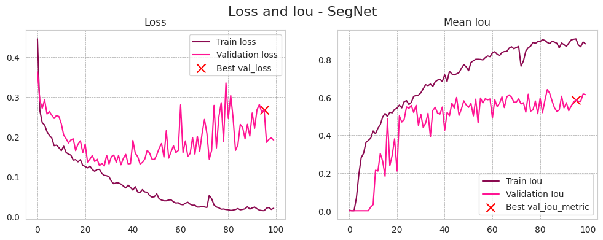
Métricas de evaluación#
y_pred = Seg_Net.predict(X_test, verbose=0)
y_pred_thresholded = y_pred > 0.5
IOU_keras = MeanIoU(num_classes=2)
IOU_keras.update_state(y_pred_thresholded, y_test)
iou_score = IOU_keras.result().numpy()
prec_score = Precision()
prec_score.update_state(y_pred_thresholded, y_test)
p = prec_score.result().numpy()
recall_score = Recall()
recall_score.update_state(y_pred_thresholded, y_test)
r = recall_score.result().numpy()
auc_score = AUC()
auc_score.update_state(y_pred_thresholded, y_test)
auc = auc_score.result().numpy()
intersection = np.sum(y_pred_thresholded * y_test)
union = np.sum(y_pred_thresholded) + np.sum(y_test)
dice_coefficient = (2. * intersection) / (union + 1e-7) # Evitar división por cero
balanced_accuracy = (p + r) / 2
metrics_dict = {
"Dice Coefficient": dice_coefficient,
"Mean IoU": iou_score,
"Precision": p,
"Recall": r,
"AUC": auc,
"Balanced Accuracy": balanced_accuracy}
df_metrics_segnet = pd.DataFrame(metrics_dict, index=["Segmentación Seg-Net"])
df_metrics_segnet.to_csv("resultados_segnet.csv")
df_metrics_segnet
| Dice Coefficient | Mean IoU | Precision | Recall | AUC | Balanced Accuracy | |
|---|---|---|---|---|---|---|
| Segmentación Seg-Net | 0.666454 | 0.714102 | 0.571378 | 0.799591 | 0.874364 | 0.685484 |
Comparación visual#
evaluar_modelo(Seg_Net, X_test, y_test, nombre_modelo="SegNet")
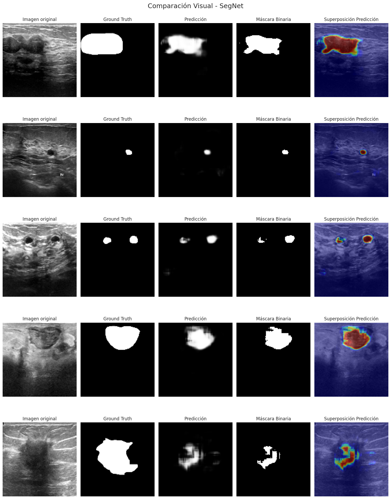
Mapas de error#
visualizar_segmentacion(Seg_Net, X_test, y_test, nombre_modelo="SegNet")
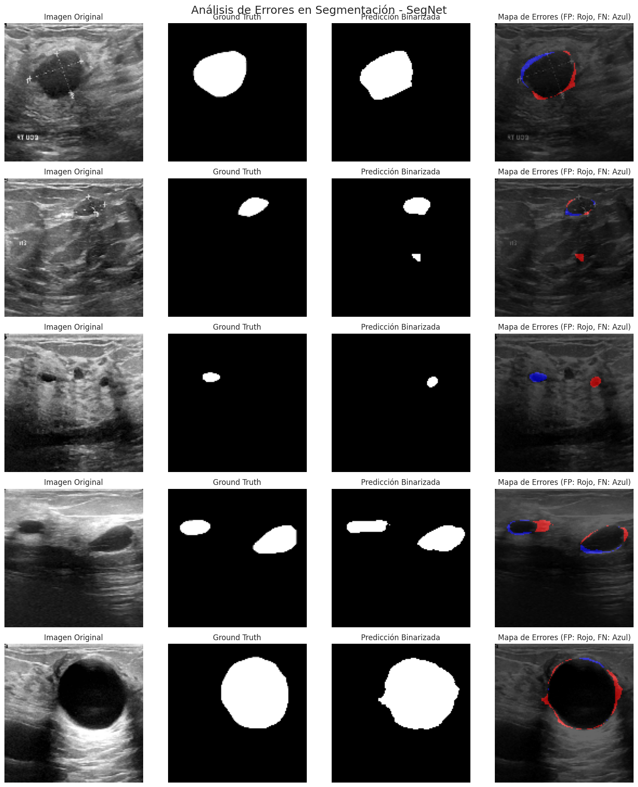
Curvas de evaluación#
plot_roc_pr_curves(y_test, y_pred)
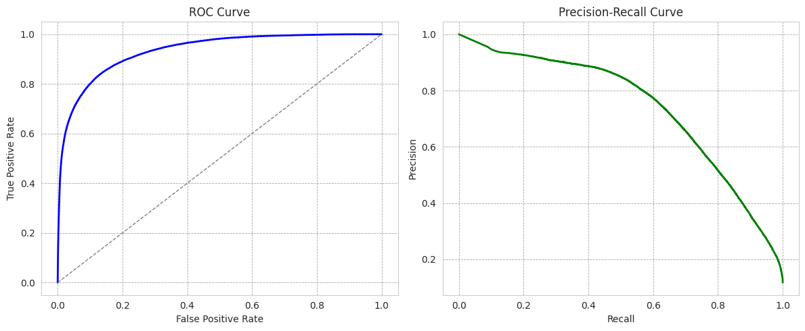
Distribución de métricas#
boxplots(y_test, y_pred)
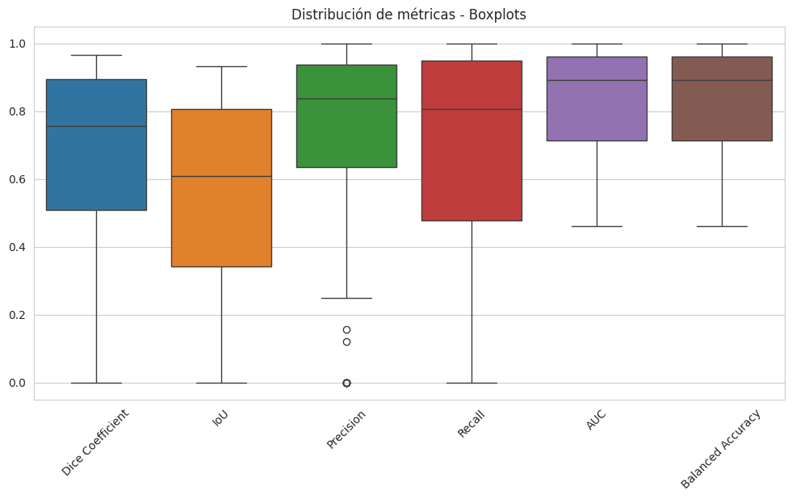
Attention UNet#
Arquitectura y entrenamiento#
def conv_block(input, num_filters):
conv = Conv2D(num_filters, (3, 3), activation="relu", padding="same", kernel_initializer='he_normal')(input)
conv = Conv2D(num_filters, (3, 3), activation="relu", padding="same", kernel_initializer='he_normal')(conv)
return conv
def attention_gate(input, skip_features, num_filters):
g = Conv2D(num_filters, (1, 1), padding='same')(input)
s = Conv2D(num_filters, (1, 1), padding='same')(skip_features)
attn = Add()([g, s])
attn = Activation('relu')(attn)
attn = Conv2D(1, (1, 1), padding='same', activation='sigmoid')(attn)
attn = Multiply()([skip_features, attn])
return attn
def encoder_block(input, num_filters):
conv = conv_block(input, num_filters)
pool = MaxPooling2D((2, 2))(conv)
return conv, pool
def decoder_block(input, skip_features, num_filters):
uconv = Conv2DTranspose(num_filters, (2, 2), strides=2, padding="same")(input)
attn = attention_gate(uconv, skip_features, num_filters)
con = concatenate([uconv, attn])
conv = conv_block(con, num_filters)
return conv
def build_attention_unet(input_shape):
input_layer = Input(input_shape)
s1, p1 = encoder_block(input_layer, 64)
s2, p2 = encoder_block(p1, 128)
s3, p3 = encoder_block(p2, 256)
s4, p4 = encoder_block(p3, 512)
b1 = conv_block(p4, 1024)
d1 = decoder_block(b1, s4, 512)
d2 = decoder_block(d1, s3, 256)
d3 = decoder_block(d2, s2, 128)
d4 = decoder_block(d3, s1, 64)
output_layer = Conv2D(1, 1, padding="same", activation="sigmoid")(d4)
model = Model(input_layer, output_layer, name="Attention-U-Net")
return model
model_att_unet = build_attention_unet(input_shape=(128, 128, 1))
model_att_unet.compile(loss="binary_crossentropy", optimizer="Adam", metrics=[iou_metric])
checkpointer = [
EarlyStopping(monitor='val_mean_io_u', verbose=1, restore_best_weights=True, mode='max', patience=10),
ModelCheckpoint(
filepath='model_att.weights.best.keras',
monitor='val_mean_io_u',
verbose=1,
save_best_only=True,
mode='max'
)
]
history_att_unet = None
if os.path.exists('history_att_unet.joblib'):
history_att_unet = load('history_att_unet.joblib')
print("El archivo 'history_att_unet.joblib' ya existe. Se ha cargado el historial del entrenamiento.")
else:
history_att_unet = model_att_unet.fit(
X_train, y_train,
epochs=100,
validation_data=(X_val, y_val),
callbacks=checkpointer,
verbose=2,
batch_size=10
)
dump(history_att_unet.history, 'history_att_unet.joblib')
print("El entrenamiento se ha completado y el historial ha sido guardado en 'history_att_unet.joblib'.")
Epoch 1/100
49/49 - 27s - 548ms/step - iou_metric: 0.0034 - loss: 0.3686 - val_iou_metric: 2.3659e-06 - val_loss: 0.2692
Epoch 2/100
49/49 - 9s - 191ms/step - iou_metric: 0.0082 - loss: 0.3227 - val_iou_metric: 2.6179e-09 - val_loss: 0.3029
Epoch 3/100
49/49 - 10s - 212ms/step - iou_metric: 0.0342 - loss: 0.2627 - val_iou_metric: 0.1974 - val_loss: 0.2542
Epoch 4/100
49/49 - 11s - 223ms/step - iou_metric: 0.1781 - loss: 0.2349 - val_iou_metric: 0.2972 - val_loss: 0.2114
Epoch 5/100
49/49 - 20s - 401ms/step - iou_metric: 0.0744 - loss: 0.2300 - val_iou_metric: 0.0015 - val_loss: 0.2250
Epoch 6/100
49/49 - 11s - 222ms/step - iou_metric: 0.1169 - loss: 0.2141 - val_iou_metric: 0.3481 - val_loss: 0.2054
Epoch 7/100
49/49 - 10s - 198ms/step - iou_metric: 0.2668 - loss: 0.2096 - val_iou_metric: 0.4051 - val_loss: 0.1968
Epoch 8/100
49/49 - 10s - 209ms/step - iou_metric: 0.3713 - loss: 0.1953 - val_iou_metric: 0.4824 - val_loss: 0.1853
Epoch 9/100
49/49 - 11s - 220ms/step - iou_metric: 0.4207 - loss: 0.1752 - val_iou_metric: 0.5234 - val_loss: 0.1616
Epoch 10/100
49/49 - 10s - 208ms/step - iou_metric: 0.4195 - loss: 0.1698 - val_iou_metric: 0.4140 - val_loss: 0.1642
Epoch 11/100
49/49 - 10s - 196ms/step - iou_metric: 0.4282 - loss: 0.1640 - val_iou_metric: 0.4981 - val_loss: 0.1563
Epoch 12/100
49/49 - 11s - 221ms/step - iou_metric: 0.4484 - loss: 0.1605 - val_iou_metric: 0.4780 - val_loss: 0.1640
Epoch 13/100
49/49 - 10s - 196ms/step - iou_metric: 0.4769 - loss: 0.1528 - val_iou_metric: 0.5379 - val_loss: 0.1568
Epoch 14/100
49/49 - 11s - 222ms/step - iou_metric: 0.5098 - loss: 0.1419 - val_iou_metric: 0.4876 - val_loss: 0.1611
Epoch 15/100
49/49 - 10s - 196ms/step - iou_metric: 0.4877 - loss: 0.1480 - val_iou_metric: 0.2817 - val_loss: 0.1838
Epoch 16/100
49/49 - 10s - 209ms/step - iou_metric: 0.5144 - loss: 0.1412 - val_iou_metric: 0.5730 - val_loss: 0.1362
Epoch 17/100
49/49 - 10s - 208ms/step - iou_metric: 0.5249 - loss: 0.1343 - val_iou_metric: 0.5686 - val_loss: 0.1464
Epoch 18/100
49/49 - 10s - 207ms/step - iou_metric: 0.5501 - loss: 0.1251 - val_iou_metric: 0.5748 - val_loss: 0.1517
Epoch 19/100
49/49 - 10s - 194ms/step - iou_metric: 0.5821 - loss: 0.1175 - val_iou_metric: 0.5701 - val_loss: 0.1379
Epoch 20/100
49/49 - 10s - 209ms/step - iou_metric: 0.5707 - loss: 0.1292 - val_iou_metric: 0.6022 - val_loss: 0.1336
Epoch 21/100
49/49 - 11s - 221ms/step - iou_metric: 0.5976 - loss: 0.1076 - val_iou_metric: 0.6260 - val_loss: 0.1211
Epoch 22/100
49/49 - 10s - 196ms/step - iou_metric: 0.6363 - loss: 0.0966 - val_iou_metric: 0.6403 - val_loss: 0.1189
Epoch 23/100
49/49 - 11s - 222ms/step - iou_metric: 0.6457 - loss: 0.0940 - val_iou_metric: 0.6171 - val_loss: 0.1505
Epoch 24/100
49/49 - 10s - 196ms/step - iou_metric: 0.6428 - loss: 0.0905 - val_iou_metric: 0.6236 - val_loss: 0.1566
Epoch 25/100
49/49 - 10s - 195ms/step - iou_metric: 0.5869 - loss: 0.1161 - val_iou_metric: 0.6011 - val_loss: 0.1406
Epoch 26/100
49/49 - 10s - 194ms/step - iou_metric: 0.6381 - loss: 0.1042 - val_iou_metric: 0.6081 - val_loss: 0.1628
Epoch 27/100
49/49 - 9s - 194ms/step - iou_metric: 0.6768 - loss: 0.0873 - val_iou_metric: 0.6606 - val_loss: 0.1304
Epoch 28/100
49/49 - 10s - 209ms/step - iou_metric: 0.6972 - loss: 0.0738 - val_iou_metric: 0.6686 - val_loss: 0.1341
Epoch 29/100
49/49 - 11s - 221ms/step - iou_metric: 0.7250 - loss: 0.0646 - val_iou_metric: 0.6721 - val_loss: 0.1332
Epoch 30/100
49/49 - 10s - 196ms/step - iou_metric: 0.7369 - loss: 0.0615 - val_iou_metric: 0.6830 - val_loss: 0.1416
Epoch 31/100
49/49 - 10s - 209ms/step - iou_metric: 0.7512 - loss: 0.0561 - val_iou_metric: 0.6828 - val_loss: 0.1569
Epoch 32/100
49/49 - 10s - 195ms/step - iou_metric: 0.7642 - loss: 0.0529 - val_iou_metric: 0.6904 - val_loss: 0.1419
Epoch 33/100
49/49 - 10s - 208ms/step - iou_metric: 0.7612 - loss: 0.0564 - val_iou_metric: 0.6740 - val_loss: 0.1335
Epoch 34/100
49/49 - 10s - 207ms/step - iou_metric: 0.7618 - loss: 0.0536 - val_iou_metric: 0.6982 - val_loss: 0.1194
Epoch 35/100
49/49 - 10s - 208ms/step - iou_metric: 0.7894 - loss: 0.0447 - val_iou_metric: 0.7026 - val_loss: 0.1380
Epoch 36/100
49/49 - 9s - 194ms/step - iou_metric: 0.8069 - loss: 0.0395 - val_iou_metric: 0.7092 - val_loss: 0.1504
Epoch 37/100
49/49 - 11s - 221ms/step - iou_metric: 0.8186 - loss: 0.0358 - val_iou_metric: 0.7040 - val_loss: 0.1679
Epoch 38/100
49/49 - 10s - 196ms/step - iou_metric: 0.8288 - loss: 0.0333 - val_iou_metric: 0.7001 - val_loss: 0.1428
Epoch 39/100
49/49 - 10s - 209ms/step - iou_metric: 0.8023 - loss: 0.0439 - val_iou_metric: 0.6774 - val_loss: 0.1830
Epoch 40/100
49/49 - 10s - 194ms/step - iou_metric: 0.7766 - loss: 0.0512 - val_iou_metric: 0.6916 - val_loss: 0.1298
Epoch 41/100
49/49 - 10s - 208ms/step - iou_metric: 0.8067 - loss: 0.0413 - val_iou_metric: 0.6985 - val_loss: 0.1869
Epoch 42/100
49/49 - 10s - 207ms/step - iou_metric: 0.8244 - loss: 0.0353 - val_iou_metric: 0.6837 - val_loss: 0.1637
Epoch 43/100
49/49 - 10s - 209ms/step - iou_metric: 0.8141 - loss: 0.0440 - val_iou_metric: 0.6866 - val_loss: 0.1612
Epoch 44/100
49/49 - 10s - 194ms/step - iou_metric: 0.8197 - loss: 0.0371 - val_iou_metric: 0.7037 - val_loss: 0.1637
Epoch 45/100
49/49 - 10s - 194ms/step - iou_metric: 0.8376 - loss: 0.0317 - val_iou_metric: 0.6868 - val_loss: 0.1694
Epoch 46/100
49/49 - 11s - 221ms/step - iou_metric: 0.8535 - loss: 0.0260 - val_iou_metric: 0.7022 - val_loss: 0.1735
Epoch 47/100
49/49 - 10s - 194ms/step - iou_metric: 0.8666 - loss: 0.0245 - val_iou_metric: 0.6983 - val_loss: 0.2097
Epoch 48/100
49/49 - 10s - 207ms/step - iou_metric: 0.8709 - loss: 0.0232 - val_iou_metric: 0.6936 - val_loss: 0.1937
Epoch 49/100
49/49 - 10s - 196ms/step - iou_metric: 0.8776 - loss: 0.0214 - val_iou_metric: 0.6949 - val_loss: 0.2225
Epoch 50/100
49/49 - 10s - 194ms/step - iou_metric: 0.8805 - loss: 0.0203 - val_iou_metric: 0.6927 - val_loss: 0.2266
Epoch 51/100
49/49 - 10s - 207ms/step - iou_metric: 0.8870 - loss: 0.0192 - val_iou_metric: 0.6856 - val_loss: 0.2283
Epoch 52/100
49/49 - 10s - 196ms/step - iou_metric: 0.8825 - loss: 0.0205 - val_iou_metric: 0.6630 - val_loss: 0.2184
Epoch 53/100
49/49 - 10s - 207ms/step - iou_metric: 0.8035 - loss: 0.0440 - val_iou_metric: 0.6799 - val_loss: 0.1562
Epoch 54/100
49/49 - 10s - 194ms/step - iou_metric: 0.8406 - loss: 0.0324 - val_iou_metric: 0.6956 - val_loss: 0.1843
Epoch 55/100
49/49 - 10s - 195ms/step - iou_metric: 0.8578 - loss: 0.0263 - val_iou_metric: 0.6913 - val_loss: 0.1705
Epoch 56/100
49/49 - 11s - 221ms/step - iou_metric: 0.8715 - loss: 0.0231 - val_iou_metric: 0.6975 - val_loss: 0.2208
Epoch 57/100
49/49 - 10s - 208ms/step - iou_metric: 0.8688 - loss: 0.0266 - val_iou_metric: 0.6897 - val_loss: 0.1954
Epoch 58/100
49/49 - 10s - 197ms/step - iou_metric: 0.8809 - loss: 0.0210 - val_iou_metric: 0.6964 - val_loss: 0.2108
Epoch 59/100
49/49 - 10s - 208ms/step - iou_metric: 0.8897 - loss: 0.0185 - val_iou_metric: 0.6935 - val_loss: 0.2148
Epoch 60/100
49/49 - 11s - 221ms/step - iou_metric: 0.8968 - loss: 0.0173 - val_iou_metric: 0.6959 - val_loss: 0.2297
Epoch 61/100
49/49 - 9s - 194ms/step - iou_metric: 0.8980 - loss: 0.0171 - val_iou_metric: 0.6943 - val_loss: 0.2539
Epoch 62/100
49/49 - 10s - 209ms/step - iou_metric: 0.9011 - loss: 0.0156 - val_iou_metric: 0.6925 - val_loss: 0.2391
Epoch 63/100
49/49 - 10s - 209ms/step - iou_metric: 0.9077 - loss: 0.0150 - val_iou_metric: 0.6861 - val_loss: 0.2541
Epoch 64/100
49/49 - 11s - 221ms/step - iou_metric: 0.9082 - loss: 0.0158 - val_iou_metric: 0.6784 - val_loss: 0.2115
Epoch 65/100
49/49 - 10s - 196ms/step - iou_metric: 0.8973 - loss: 0.0181 - val_iou_metric: 0.6771 - val_loss: 0.2166
Epoch 66/100
49/49 - 10s - 207ms/step - iou_metric: 0.9072 - loss: 0.0158 - val_iou_metric: 0.6851 - val_loss: 0.2144
Epoch 67/100
49/49 - 10s - 209ms/step - iou_metric: 0.9128 - loss: 0.0141 - val_iou_metric: 0.6862 - val_loss: 0.2599
Epoch 68/100
49/49 - 9s - 194ms/step - iou_metric: 0.9142 - loss: 0.0136 - val_iou_metric: 0.6806 - val_loss: 0.2422
Epoch 69/100
49/49 - 10s - 208ms/step - iou_metric: 0.9213 - loss: 0.0122 - val_iou_metric: 0.6745 - val_loss: 0.2853
Epoch 70/100
49/49 - 9s - 193ms/step - iou_metric: 0.9264 - loss: 0.0113 - val_iou_metric: 0.6881 - val_loss: 0.2956
Epoch 71/100
49/49 - 10s - 208ms/step - iou_metric: 0.9286 - loss: 0.0108 - val_iou_metric: 0.6725 - val_loss: 0.3276
Epoch 72/100
49/49 - 11s - 221ms/step - iou_metric: 0.9336 - loss: 0.0101 - val_iou_metric: 0.6906 - val_loss: 0.3157
Epoch 73/100
49/49 - 10s - 209ms/step - iou_metric: 0.9341 - loss: 0.0103 - val_iou_metric: 0.6762 - val_loss: 0.3187
Epoch 74/100
49/49 - 10s - 196ms/step - iou_metric: 0.9329 - loss: 0.0106 - val_iou_metric: 0.6777 - val_loss: 0.3170
Epoch 75/100
49/49 - 11s - 221ms/step - iou_metric: 0.9364 - loss: 0.0097 - val_iou_metric: 0.6903 - val_loss: 0.3421
Epoch 76/100
49/49 - 10s - 209ms/step - iou_metric: 0.9329 - loss: 0.0105 - val_iou_metric: 0.6847 - val_loss: 0.3102
Epoch 77/100
49/49 - 10s - 196ms/step - iou_metric: 0.9259 - loss: 0.0114 - val_iou_metric: 0.6896 - val_loss: 0.3220
Epoch 78/100
49/49 - 10s - 208ms/step - iou_metric: 0.9280 - loss: 0.0114 - val_iou_metric: 0.6949 - val_loss: 0.2816
Epoch 79/100
49/49 - 10s - 209ms/step - iou_metric: 0.9321 - loss: 0.0107 - val_iou_metric: 0.6871 - val_loss: 0.2813
Epoch 80/100
49/49 - 10s - 209ms/step - iou_metric: 0.9370 - loss: 0.0096 - val_iou_metric: 0.6896 - val_loss: 0.3242
Epoch 81/100
49/49 - 10s - 206ms/step - iou_metric: 0.9374 - loss: 0.0093 - val_iou_metric: 0.6819 - val_loss: 0.3351
Epoch 82/100
49/49 - 10s - 196ms/step - iou_metric: 0.9373 - loss: 0.0099 - val_iou_metric: 0.6878 - val_loss: 0.3205
Epoch 83/100
49/49 - 11s - 222ms/step - iou_metric: 0.9372 - loss: 0.0096 - val_iou_metric: 0.6866 - val_loss: 0.3127
Epoch 84/100
49/49 - 10s - 196ms/step - iou_metric: 0.9417 - loss: 0.0092 - val_iou_metric: 0.6888 - val_loss: 0.3176
Epoch 85/100
49/49 - 10s - 208ms/step - iou_metric: 0.9443 - loss: 0.0087 - val_iou_metric: 0.6800 - val_loss: 0.3434
Epoch 86/100
49/49 - 10s - 207ms/step - iou_metric: 0.9263 - loss: 0.0145 - val_iou_metric: 0.6760 - val_loss: 0.1947
Epoch 87/100
49/49 - 10s - 196ms/step - iou_metric: 0.8220 - loss: 0.0431 - val_iou_metric: 0.6204 - val_loss: 0.1349
Epoch 88/100
49/49 - 10s - 207ms/step - iou_metric: 0.5128 - loss: 0.1494 - val_iou_metric: 0.5044 - val_loss: 0.1999
Epoch 89/100
49/49 - 9s - 193ms/step - iou_metric: 0.6042 - loss: 0.1214 - val_iou_metric: 0.4613 - val_loss: 0.1452
Epoch 90/100
49/49 - 11s - 221ms/step - iou_metric: 0.6917 - loss: 0.0813 - val_iou_metric: 0.6407 - val_loss: 0.1307
Epoch 91/100
49/49 - 10s - 208ms/step - iou_metric: 0.7539 - loss: 0.0579 - val_iou_metric: 0.6469 - val_loss: 0.1542
Epoch 92/100
49/49 - 10s - 196ms/step - iou_metric: 0.7952 - loss: 0.0446 - val_iou_metric: 0.6796 - val_loss: 0.1638
Epoch 93/100
49/49 - 11s - 221ms/step - iou_metric: 0.8283 - loss: 0.0356 - val_iou_metric: 0.6950 - val_loss: 0.1429
Epoch 94/100
49/49 - 10s - 196ms/step - iou_metric: 0.8262 - loss: 0.0352 - val_iou_metric: 0.6905 - val_loss: 0.1439
Epoch 95/100
49/49 - 10s - 209ms/step - iou_metric: 0.8511 - loss: 0.0287 - val_iou_metric: 0.7021 - val_loss: 0.1620
Epoch 96/100
49/49 - 11s - 221ms/step - iou_metric: 0.8689 - loss: 0.0241 - val_iou_metric: 0.6942 - val_loss: 0.1903
Epoch 97/100
49/49 - 10s - 196ms/step - iou_metric: 0.8840 - loss: 0.0203 - val_iou_metric: 0.6931 - val_loss: 0.1972
Epoch 98/100
49/49 - 10s - 209ms/step - iou_metric: 0.8894 - loss: 0.0191 - val_iou_metric: 0.7046 - val_loss: 0.2001
Epoch 99/100
49/49 - 9s - 193ms/step - iou_metric: 0.8979 - loss: 0.0170 - val_iou_metric: 0.7021 - val_loss: 0.2070
Epoch 100/100
49/49 - 10s - 209ms/step - iou_metric: 0.9067 - loss: 0.0156 - val_iou_metric: 0.6989 - val_loss: 0.2494
El entrenamiento se ha completado y el historial ha sido guardado en 'history_att_unet.joblib'.
graficar_historial(history_att_unet, nombre_modelo="Attention UNet")
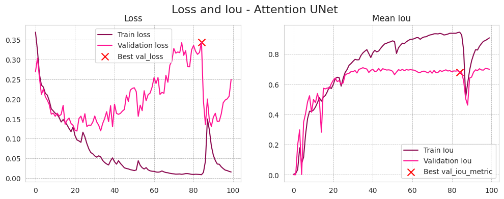
Métricas de evaluación#
y_pred=model_att_unet.predict(X_test,verbose=0)
y_pred_thresholded = y_pred > 0.5
IOU_keras = MeanIoU(num_classes=2)
IOU_keras.update_state(y_pred_thresholded, y_test)
iou_score = IOU_keras.result().numpy()
prec_score = Precision()
prec_score.update_state(y_pred_thresholded, y_test)
p = prec_score.result().numpy()
recall_score = Recall()
recall_score.update_state(y_pred_thresholded, y_test)
r = recall_score.result().numpy()
auc_score = AUC()
auc_score.update_state(y_pred_thresholded, y_test)
auc = auc_score.result().numpy()
intersection = np.sum(y_pred_thresholded * y_test)
union = np.sum(y_pred_thresholded) + np.sum(y_test)
dice_coefficient = (2. * intersection) / (union + 1e-7) # Evitar división por cero
balanced_accuracy = (p + r) / 2
metrics_dict = {
"Dice Coefficient": dice_coefficient,
"Mean IoU": iou_score,
"Precision": p,
"Recall": r,
"AUC": auc,
"Balanced Accuracy": balanced_accuracy}
df_metrics_attunet = pd.DataFrame(metrics_dict, index=["Segmentación Attention UNet"])
df_metrics_attunet.to_csv("resultados_attunet.csv")
df_metrics_attunet
| Dice Coefficient | Mean IoU | Precision | Recall | AUC | Balanced Accuracy | |
|---|---|---|---|---|---|---|
| Segmentación Attention UNet | 0.744921 | 0.765869 | 0.701075 | 0.794778 | 0.879918 | 0.747926 |
Comparación visual#
evaluar_modelo(model_att_unet, X_test, y_test, nombre_modelo="Attention UNet")
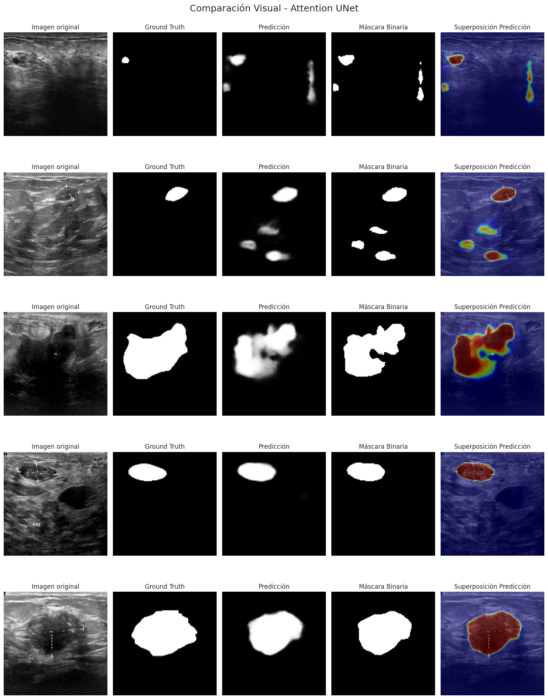
Mapas de error#
visualizar_segmentacion(model_att_unet, X_test, y_test, nombre_modelo="Attention UNet")
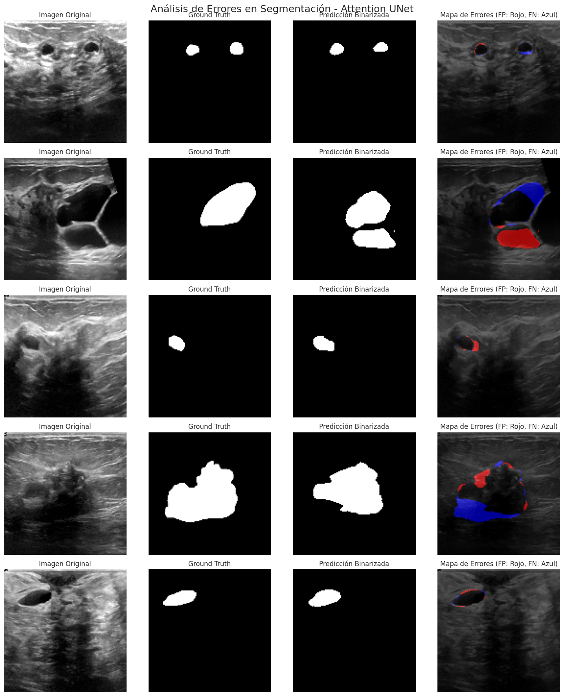
Curvas de evaluación#
plot_roc_pr_curves(y_test, y_pred)
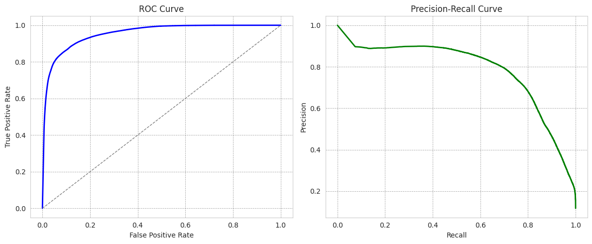
Distribución de métricas#
boxplots(y_test, y_pred)
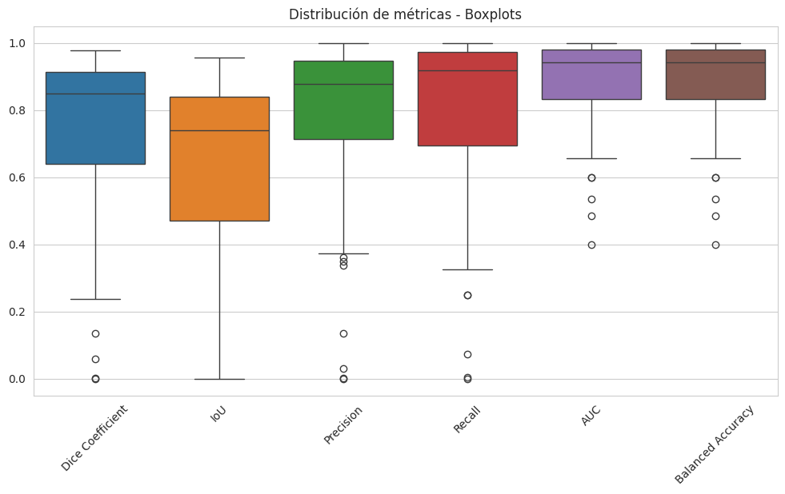
ResUNet#
Arquitectura y entrenamiento#
def res_block(input, num_filters):
"""Bloque residual con BatchNormalization y activación ReLU."""
conv1 = Conv2D(num_filters, (3, 3), padding="same", kernel_initializer='he_normal')(input)
bn1 = BatchNormalization()(conv1)
act1 = Activation("relu")(bn1)
conv2 = Conv2D(num_filters, (3, 3), padding="same", kernel_initializer='he_normal')(act1)
bn2 = BatchNormalization()(conv2)
# Conexión residual
shortcut = Conv2D(num_filters, (1, 1), padding="same", kernel_initializer='he_normal')(input)
shortcut = BatchNormalization()(shortcut)
output = Add()([bn2, shortcut])
output = Activation("relu")(output)
return output
def encoder_block(input, num_filters):
"""Bloque codificador con convoluciones residuales y MaxPooling."""
res = res_block(input, num_filters)
pool = MaxPooling2D((2, 2))(res)
return res, pool
def decoder_block(input, skip_features, num_filters):
"""Bloque decodificador con convoluciones residuales y concatenación con skip connections."""
uconv = Conv2DTranspose(num_filters, (2, 2), strides=2, padding="same")(input)
con = concatenate([uconv, skip_features])
res = res_block(con, num_filters)
return res
def build_resunet(input_shape):
"""Construcción de la arquitectura ResUNet."""
input_layer = Input(input_shape)
# Encoder
s1, p1 = encoder_block(input_layer, 64)
s2, p2 = encoder_block(p1, 128)
s3, p3 = encoder_block(p2, 256)
s4, p4 = encoder_block(p3, 512)
# Bottleneck
b1 = res_block(p4, 1024)
# Decoder
d1 = decoder_block(b1, s4, 512)
d2 = decoder_block(d1, s3, 256)
d3 = decoder_block(d2, s2, 128)
d4 = decoder_block(d3, s1, 64)
# Output layer
output_layer = Conv2D(1, 1, padding="same", activation="sigmoid")(d4)
model = Model(input_layer, output_layer, name="ResUNet")
return model
# Crear el modelo
model_resunet = build_resunet(input_shape=(128, 128, 1))
# Compilar el modelo
model_resunet.compile(loss="binary_crossentropy", optimizer="Adam", metrics=[iou_metric])
checkpointer = [
EarlyStopping(monitor='val_mean_io_u', verbose=1, restore_best_weights=True, mode='max', patience=10),
ModelCheckpoint(
filepath='resunet_best.keras',
monitor='val_mean_io_u',
verbose=1,
save_best_only=True,
mode='max'
)
]
history_resunet = None
if os.path.exists('history_resunet.joblib'):
history_resunet = load('history_resunet.joblib')
print("El archivo 'history_resunet.joblib' ya existe. Se ha cargado el historial del entrenamiento.")
else:
history_resunet = model_resunet.fit(
X_train, y_train,
epochs=100,
validation_data=(X_test, y_test),
callbacks=checkpointer,
verbose=2,
batch_size=10
)
dump(history_resunet.history, 'history_resunet.joblib')
print("El entrenamiento se ha completado y el historial ha sido guardado en 'history_resunet.joblib'.")
Epoch 1/100
49/49 - 60s - 1s/step - iou_metric: 0.2611 - loss: 0.2499 - val_iou_metric: 0.1332 - val_loss: 33.9909
Epoch 2/100
49/49 - 48s - 976ms/step - iou_metric: 0.4244 - loss: 0.1698 - val_iou_metric: 0.1836 - val_loss: 3.9105
Epoch 3/100
49/49 - 11s - 216ms/step - iou_metric: 0.4544 - loss: 0.1595 - val_iou_metric: 0.3609 - val_loss: 0.4607
Epoch 4/100
49/49 - 20s - 416ms/step - iou_metric: 0.5017 - loss: 0.1430 - val_iou_metric: 0.3251 - val_loss: 0.7870
Epoch 5/100
49/49 - 10s - 212ms/step - iou_metric: 0.5341 - loss: 0.1320 - val_iou_metric: 0.4486 - val_loss: 0.2640
Epoch 6/100
49/49 - 10s - 212ms/step - iou_metric: 0.5458 - loss: 0.1216 - val_iou_metric: 0.4810 - val_loss: 0.2658
Epoch 7/100
49/49 - 20s - 409ms/step - iou_metric: 0.5792 - loss: 0.1115 - val_iou_metric: 0.4737 - val_loss: 0.2327
Epoch 8/100
49/49 - 10s - 205ms/step - iou_metric: 0.5957 - loss: 0.1076 - val_iou_metric: 0.4281 - val_loss: 0.3026
Epoch 9/100
49/49 - 10s - 209ms/step - iou_metric: 0.6195 - loss: 0.0975 - val_iou_metric: 0.4331 - val_loss: 0.3674
Epoch 10/100
49/49 - 20s - 413ms/step - iou_metric: 0.6251 - loss: 0.0943 - val_iou_metric: 0.4623 - val_loss: 0.2472
Epoch 11/100
49/49 - 10s - 212ms/step - iou_metric: 0.6521 - loss: 0.0870 - val_iou_metric: 0.5465 - val_loss: 0.2474
Epoch 12/100
49/49 - 10s - 212ms/step - iou_metric: 0.6759 - loss: 0.0794 - val_iou_metric: 0.5442 - val_loss: 0.1991
Epoch 13/100
49/49 - 10s - 210ms/step - iou_metric: 0.7058 - loss: 0.0680 - val_iou_metric: 0.5354 - val_loss: 0.2008
Epoch 14/100
49/49 - 20s - 417ms/step - iou_metric: 0.7303 - loss: 0.0612 - val_iou_metric: 0.5416 - val_loss: 0.2555
Epoch 15/100
49/49 - 10s - 207ms/step - iou_metric: 0.7121 - loss: 0.0604 - val_iou_metric: 0.5431 - val_loss: 0.2239
Epoch 16/100
49/49 - 10s - 210ms/step - iou_metric: 0.7427 - loss: 0.0580 - val_iou_metric: 0.5286 - val_loss: 0.2435
Epoch 17/100
49/49 - 10s - 210ms/step - iou_metric: 0.7489 - loss: 0.0565 - val_iou_metric: 0.5440 - val_loss: 0.2391
Epoch 18/100
49/49 - 20s - 412ms/step - iou_metric: 0.7684 - loss: 0.0498 - val_iou_metric: 0.5619 - val_loss: 0.2121
Epoch 19/100
49/49 - 10s - 210ms/step - iou_metric: 0.7840 - loss: 0.0461 - val_iou_metric: 0.5560 - val_loss: 0.2356
Epoch 20/100
49/49 - 11s - 216ms/step - iou_metric: 0.7994 - loss: 0.0418 - val_iou_metric: 0.5715 - val_loss: 0.2525
Epoch 21/100
49/49 - 20s - 413ms/step - iou_metric: 0.7920 - loss: 0.0444 - val_iou_metric: 0.5622 - val_loss: 0.2470
Epoch 22/100
49/49 - 20s - 415ms/step - iou_metric: 0.8019 - loss: 0.0422 - val_iou_metric: 0.5891 - val_loss: 0.2173
Epoch 23/100
49/49 - 11s - 217ms/step - iou_metric: 0.8065 - loss: 0.0396 - val_iou_metric: 0.5932 - val_loss: 0.2382
Epoch 24/100
49/49 - 20s - 414ms/step - iou_metric: 0.8204 - loss: 0.0364 - val_iou_metric: 0.5600 - val_loss: 0.2408
Epoch 25/100
49/49 - 20s - 412ms/step - iou_metric: 0.8339 - loss: 0.0327 - val_iou_metric: 0.5777 - val_loss: 0.2557
Epoch 26/100
49/49 - 11s - 215ms/step - iou_metric: 0.8285 - loss: 0.0335 - val_iou_metric: 0.5183 - val_loss: 0.3159
Epoch 27/100
49/49 - 20s - 411ms/step - iou_metric: 0.8257 - loss: 0.0331 - val_iou_metric: 0.5345 - val_loss: 0.3824
Epoch 28/100
49/49 - 10s - 209ms/step - iou_metric: 0.8507 - loss: 0.0277 - val_iou_metric: 0.6086 - val_loss: 0.2709
Epoch 29/100
49/49 - 20s - 414ms/step - iou_metric: 0.8700 - loss: 0.0250 - val_iou_metric: 0.6046 - val_loss: 0.2509
Epoch 30/100
49/49 - 10s - 210ms/step - iou_metric: 0.8744 - loss: 0.0233 - val_iou_metric: 0.5787 - val_loss: 0.2980
Epoch 31/100
49/49 - 11s - 216ms/step - iou_metric: 0.8795 - loss: 0.0217 - val_iou_metric: 0.5925 - val_loss: 0.2864
Epoch 32/100
49/49 - 20s - 407ms/step - iou_metric: 0.8801 - loss: 0.0208 - val_iou_metric: 0.5802 - val_loss: 0.3291
Epoch 33/100
49/49 - 10s - 212ms/step - iou_metric: 0.8850 - loss: 0.0201 - val_iou_metric: 0.5924 - val_loss: 0.2877
Epoch 34/100
49/49 - 11s - 217ms/step - iou_metric: 0.8840 - loss: 0.0211 - val_iou_metric: 0.6180 - val_loss: 0.3044
Epoch 35/100
49/49 - 20s - 412ms/step - iou_metric: 0.8884 - loss: 0.0198 - val_iou_metric: 0.6073 - val_loss: 0.2925
Epoch 36/100
49/49 - 21s - 420ms/step - iou_metric: 0.8950 - loss: 0.0179 - val_iou_metric: 0.6194 - val_loss: 0.2790
Epoch 37/100
49/49 - 21s - 420ms/step - iou_metric: 0.9000 - loss: 0.0175 - val_iou_metric: 0.5808 - val_loss: 0.2925
Epoch 38/100
49/49 - 20s - 417ms/step - iou_metric: 0.8995 - loss: 0.0177 - val_iou_metric: 0.5840 - val_loss: 0.3664
Epoch 39/100
49/49 - 20s - 409ms/step - iou_metric: 0.8952 - loss: 0.0190 - val_iou_metric: 0.6181 - val_loss: 0.2804
Epoch 40/100
49/49 - 10s - 212ms/step - iou_metric: 0.9001 - loss: 0.0171 - val_iou_metric: 0.5952 - val_loss: 0.3406
Epoch 41/100
49/49 - 10s - 210ms/step - iou_metric: 0.9030 - loss: 0.0161 - val_iou_metric: 0.6221 - val_loss: 0.2738
Epoch 42/100
49/49 - 10s - 208ms/step - iou_metric: 0.9009 - loss: 0.0157 - val_iou_metric: 0.6178 - val_loss: 0.3354
Epoch 43/100
49/49 - 10s - 211ms/step - iou_metric: 0.9000 - loss: 0.0166 - val_iou_metric: 0.5979 - val_loss: 0.3144
Epoch 44/100
49/49 - 20s - 409ms/step - iou_metric: 0.9069 - loss: 0.0161 - val_iou_metric: 0.5520 - val_loss: 0.3907
Epoch 45/100
49/49 - 10s - 211ms/step - iou_metric: 0.8118 - loss: 0.0418 - val_iou_metric: 0.4312 - val_loss: 0.3797
Epoch 46/100
49/49 - 10s - 213ms/step - iou_metric: 0.7998 - loss: 0.0434 - val_iou_metric: 0.5641 - val_loss: 0.2713
Epoch 47/100
49/49 - 20s - 417ms/step - iou_metric: 0.8456 - loss: 0.0304 - val_iou_metric: 0.6017 - val_loss: 0.3138
Epoch 48/100
49/49 - 10s - 210ms/step - iou_metric: 0.8687 - loss: 0.0237 - val_iou_metric: 0.6240 - val_loss: 0.2491
Epoch 49/100
49/49 - 20s - 417ms/step - iou_metric: 0.8972 - loss: 0.0170 - val_iou_metric: 0.6198 - val_loss: 0.2858
Epoch 50/100
49/49 - 21s - 419ms/step - iou_metric: 0.9111 - loss: 0.0149 - val_iou_metric: 0.5688 - val_loss: 0.3341
Epoch 51/100
49/49 - 10s - 210ms/step - iou_metric: 0.9132 - loss: 0.0143 - val_iou_metric: 0.6287 - val_loss: 0.2819
Epoch 52/100
49/49 - 20s - 414ms/step - iou_metric: 0.9213 - loss: 0.0122 - val_iou_metric: 0.6026 - val_loss: 0.3050
Epoch 53/100
49/49 - 11s - 215ms/step - iou_metric: 0.9212 - loss: 0.0122 - val_iou_metric: 0.6320 - val_loss: 0.2881
Epoch 54/100
49/49 - 20s - 408ms/step - iou_metric: 0.9173 - loss: 0.0130 - val_iou_metric: 0.5844 - val_loss: 0.3503
Epoch 55/100
49/49 - 10s - 207ms/step - iou_metric: 0.9243 - loss: 0.0121 - val_iou_metric: 0.6162 - val_loss: 0.3336
Epoch 56/100
49/49 - 10s - 210ms/step - iou_metric: 0.9295 - loss: 0.0106 - val_iou_metric: 0.5884 - val_loss: 0.3623
Epoch 57/100
49/49 - 10s - 208ms/step - iou_metric: 0.9336 - loss: 0.0097 - val_iou_metric: 0.6281 - val_loss: 0.3303
Epoch 58/100
49/49 - 10s - 207ms/step - iou_metric: 0.9337 - loss: 0.0098 - val_iou_metric: 0.6221 - val_loss: 0.3558
Epoch 59/100
49/49 - 10s - 210ms/step - iou_metric: 0.9340 - loss: 0.0099 - val_iou_metric: 0.6311 - val_loss: 0.3319
Epoch 60/100
49/49 - 20s - 416ms/step - iou_metric: 0.9355 - loss: 0.0096 - val_iou_metric: 0.6155 - val_loss: 0.3629
Epoch 61/100
49/49 - 10s - 206ms/step - iou_metric: 0.9394 - loss: 0.0091 - val_iou_metric: 0.6177 - val_loss: 0.3604
Epoch 62/100
49/49 - 10s - 213ms/step - iou_metric: 0.9388 - loss: 0.0091 - val_iou_metric: 0.6205 - val_loss: 0.3774
Epoch 63/100
49/49 - 21s - 419ms/step - iou_metric: 0.9361 - loss: 0.0091 - val_iou_metric: 0.6203 - val_loss: 0.3851
Epoch 64/100
49/49 - 20s - 412ms/step - iou_metric: 0.9415 - loss: 0.0086 - val_iou_metric: 0.6216 - val_loss: 0.3774
Epoch 65/100
49/49 - 10s - 212ms/step - iou_metric: 0.9400 - loss: 0.0089 - val_iou_metric: 0.6152 - val_loss: 0.3809
Epoch 66/100
49/49 - 11s - 216ms/step - iou_metric: 0.9351 - loss: 0.0100 - val_iou_metric: 0.6101 - val_loss: 0.3702
Epoch 67/100
49/49 - 20s - 406ms/step - iou_metric: 0.9386 - loss: 0.0099 - val_iou_metric: 0.6177 - val_loss: 0.3791
Epoch 68/100
49/49 - 10s - 211ms/step - iou_metric: 0.9338 - loss: 0.0127 - val_iou_metric: 0.6254 - val_loss: 0.3137
Epoch 69/100
49/49 - 20s - 418ms/step - iou_metric: 0.9336 - loss: 0.0112 - val_iou_metric: 0.6252 - val_loss: 0.3502
Epoch 70/100
49/49 - 21s - 420ms/step - iou_metric: 0.9402 - loss: 0.0092 - val_iou_metric: 0.6214 - val_loss: 0.3211
Epoch 71/100
49/49 - 11s - 217ms/step - iou_metric: 0.9441 - loss: 0.0082 - val_iou_metric: 0.6153 - val_loss: 0.3532
Epoch 72/100
49/49 - 20s - 406ms/step - iou_metric: 0.9473 - loss: 0.0078 - val_iou_metric: 0.6127 - val_loss: 0.3725
Epoch 73/100
49/49 - 11s - 214ms/step - iou_metric: 0.9427 - loss: 0.0090 - val_iou_metric: 0.6231 - val_loss: 0.3555
Epoch 74/100
49/49 - 10s - 208ms/step - iou_metric: 0.9359 - loss: 0.0099 - val_iou_metric: 0.6067 - val_loss: 0.4163
Epoch 75/100
49/49 - 10s - 212ms/step - iou_metric: 0.9352 - loss: 0.0098 - val_iou_metric: 0.6181 - val_loss: 0.3441
Epoch 76/100
49/49 - 20s - 410ms/step - iou_metric: 0.9416 - loss: 0.0085 - val_iou_metric: 0.6189 - val_loss: 0.3747
Epoch 77/100
49/49 - 10s - 211ms/step - iou_metric: 0.9475 - loss: 0.0077 - val_iou_metric: 0.6116 - val_loss: 0.3761
Epoch 78/100
49/49 - 11s - 217ms/step - iou_metric: 0.9504 - loss: 0.0071 - val_iou_metric: 0.6045 - val_loss: 0.3832
Epoch 79/100
49/49 - 20s - 410ms/step - iou_metric: 0.9522 - loss: 0.0069 - val_iou_metric: 0.6118 - val_loss: 0.3935
Epoch 80/100
49/49 - 10s - 210ms/step - iou_metric: 0.9530 - loss: 0.0067 - val_iou_metric: 0.6184 - val_loss: 0.3807
Epoch 81/100
49/49 - 20s - 413ms/step - iou_metric: 0.9546 - loss: 0.0068 - val_iou_metric: 0.6045 - val_loss: 0.4000
Epoch 82/100
49/49 - 11s - 215ms/step - iou_metric: 0.9537 - loss: 0.0068 - val_iou_metric: 0.6267 - val_loss: 0.3673
Epoch 83/100
49/49 - 20s - 413ms/step - iou_metric: 0.9483 - loss: 0.0074 - val_iou_metric: 0.6160 - val_loss: 0.4210
Epoch 84/100
49/49 - 11s - 215ms/step - iou_metric: 0.9441 - loss: 0.0082 - val_iou_metric: 0.6062 - val_loss: 0.4312
Epoch 85/100
49/49 - 10s - 211ms/step - iou_metric: 0.9467 - loss: 0.0078 - val_iou_metric: 0.6275 - val_loss: 0.3919
Epoch 86/100
49/49 - 20s - 410ms/step - iou_metric: 0.9523 - loss: 0.0071 - val_iou_metric: 0.6230 - val_loss: 0.3954
Epoch 87/100
49/49 - 11s - 215ms/step - iou_metric: 0.9573 - loss: 0.0061 - val_iou_metric: 0.6203 - val_loss: 0.3872
Epoch 88/100
49/49 - 20s - 415ms/step - iou_metric: 0.9575 - loss: 0.0061 - val_iou_metric: 0.6137 - val_loss: 0.4090
Epoch 89/100
49/49 - 10s - 210ms/step - iou_metric: 0.9561 - loss: 0.0063 - val_iou_metric: 0.6332 - val_loss: 0.3900
Epoch 90/100
49/49 - 20s - 414ms/step - iou_metric: 0.9537 - loss: 0.0067 - val_iou_metric: 0.6268 - val_loss: 0.3998
Epoch 91/100
49/49 - 11s - 215ms/step - iou_metric: 0.9554 - loss: 0.0066 - val_iou_metric: 0.5740 - val_loss: 0.4966
Epoch 92/100
49/49 - 20s - 409ms/step - iou_metric: 0.9580 - loss: 0.0061 - val_iou_metric: 0.6156 - val_loss: 0.4330
Epoch 93/100
49/49 - 10s - 211ms/step - iou_metric: 0.9589 - loss: 0.0058 - val_iou_metric: 0.6155 - val_loss: 0.4374
Epoch 94/100
49/49 - 11s - 216ms/step - iou_metric: 0.9597 - loss: 0.0058 - val_iou_metric: 0.6249 - val_loss: 0.3938
Epoch 95/100
49/49 - 20s - 408ms/step - iou_metric: 0.9603 - loss: 0.0056 - val_iou_metric: 0.6173 - val_loss: 0.4305
Epoch 96/100
49/49 - 10s - 213ms/step - iou_metric: 0.9624 - loss: 0.0055 - val_iou_metric: 0.6320 - val_loss: 0.3995
Epoch 97/100
49/49 - 10s - 212ms/step - iou_metric: 0.9581 - loss: 0.0058 - val_iou_metric: 0.6133 - val_loss: 0.4500
Epoch 98/100
49/49 - 20s - 417ms/step - iou_metric: 0.9576 - loss: 0.0059 - val_iou_metric: 0.6233 - val_loss: 0.4209
Epoch 99/100
49/49 - 20s - 413ms/step - iou_metric: 0.9593 - loss: 0.0059 - val_iou_metric: 0.6310 - val_loss: 0.3953
Epoch 100/100
49/49 - 10s - 212ms/step - iou_metric: 0.9610 - loss: 0.0057 - val_iou_metric: 0.6255 - val_loss: 0.4064
El entrenamiento se ha completado y el historial ha sido guardado en 'history_resunet.joblib'.
graficar_historial(history_resunet, nombre_modelo="ResUNet")
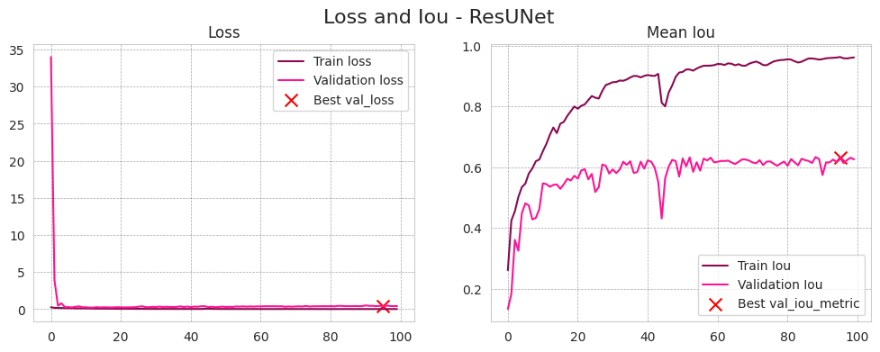
Métricas de evaluación#
y_pred=model_resunet.predict(X_test,verbose=0)
y_pred_thresholded = y_pred > 0.5
IOU_keras = MeanIoU(num_classes=2)
IOU_keras.update_state(y_pred_thresholded, y_test)
iou_score = IOU_keras.result().numpy()
prec_score = Precision()
prec_score.update_state(y_pred_thresholded, y_test)
p = prec_score.result().numpy()
recall_score = Recall()
recall_score.update_state(y_pred_thresholded, y_test)
r = recall_score.result().numpy()
auc_score = AUC()
auc_score.update_state(y_pred_thresholded, y_test)
auc = auc_score.result().numpy()
intersection = np.sum(y_pred_thresholded * y_test)
union = np.sum(y_pred_thresholded) + np.sum(y_test)
dice_coefficient = (2. * intersection) / (union + 1e-7) # Evitar división por cero
balanced_accuracy = (p + r) / 2
metrics_dict = {
"Dice Coefficient": dice_coefficient,
"Mean IoU": iou_score,
"Precision": p,
"Recall": r,
"AUC": auc,
"Balanced Accuracy": balanced_accuracy}
df_metrics_resunet = pd.DataFrame(metrics_dict, index=["Segmentación ResUNet"])
df_metrics_resunet.to_csv("resultados_resunet.csv")
df_metrics_resunet
| Dice Coefficient | Mean IoU | Precision | Recall | AUC | Balanced Accuracy | |
|---|---|---|---|---|---|---|
| Segmentación ResUNet | 0.728793 | 0.755126 | 0.664241 | 0.807467 | 0.884028 | 0.735854 |
Comparación visual#
evaluar_modelo(model_resunet, X_test, y_test, nombre_modelo="ResUNet")
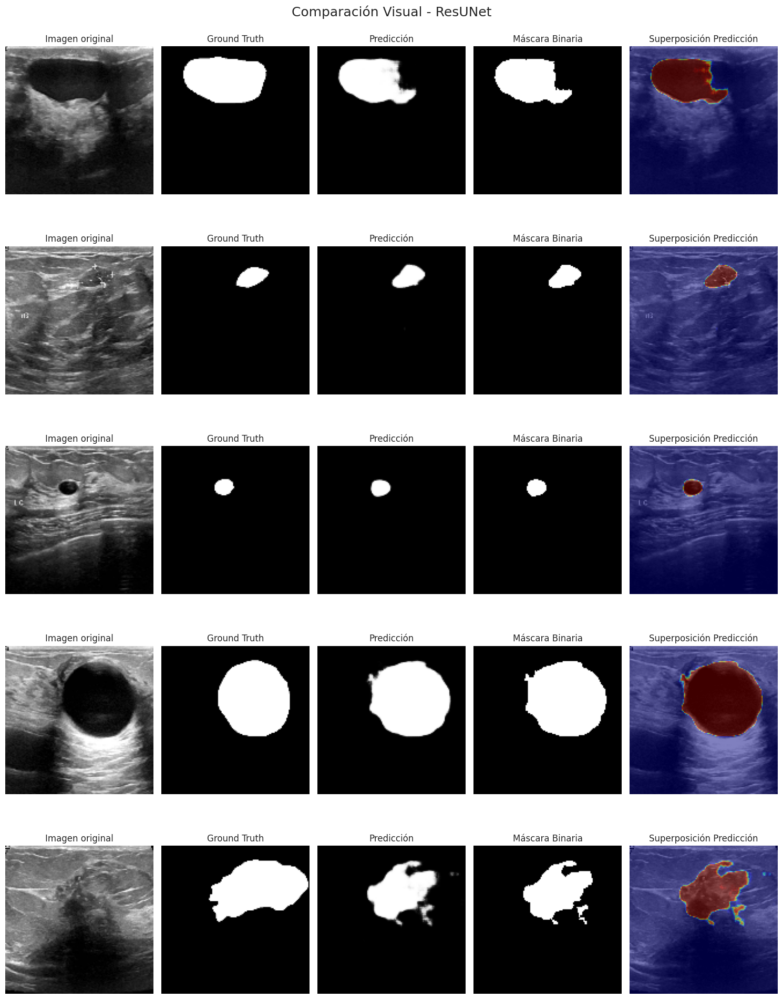
Mapas de error#
visualizar_segmentacion(model_resunet, X_test, y_test, nombre_modelo="ResUNet")

Curvas de evaluación#
plot_roc_pr_curves(y_test, y_pred)
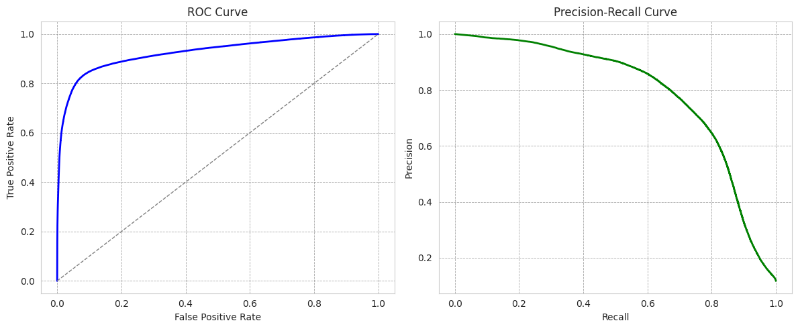
Distribución de métricas#
boxplots(y_test, y_pred)

PSPNet#
Arquitectura y entrenamiento#
# Función para el bloque convolucional
def conv_block(input, num_filters):
conv = Conv2D(num_filters, (3, 3), activation="relu", padding="same", kernel_initializer='he_normal')(input)
conv = Conv2D(num_filters, (3, 3), activation="relu", padding="same", kernel_initializer='he_normal')(conv)
return conv
# Bloque de encoder
def encoder_block(input, num_filters):
conv = conv_block(input, num_filters)
pool = MaxPooling2D((2, 2))(conv)
return conv, pool
# Módulo de Pooling Piramidal (PPM)
def pyramid_pooling_module(input):
pool_sizes = [1, 2, 3, 6]
pooled_outputs = []
h, w = input.shape[1], input.shape[2]
for size in pool_sizes:
pool = AveragePooling2D(pool_size=(h//size, w//size), strides=(h//size, w//size))(input)
conv = Conv2D(256, (1, 1), activation='relu', padding='same')(pool)
up = UpSampling2D(size=(h//size, w//size), interpolation='bilinear')(conv)
pooled_outputs.append(up)
concat = concatenate([input] + pooled_outputs)
return concat
# Bloque de decoder
def decoder_block(input, num_filters):
conv = Conv2D(num_filters, (3, 3), activation='relu', padding='same', kernel_initializer='he_normal')(input)
conv = Conv2D(num_filters, (3, 3), activation='relu', padding='same', kernel_initializer='he_normal')(conv)
return conv
# Construcción del modelo PSPNet
def build_pspnet(input_shape):
input_layer = Input(input_shape)
# Encoder (similar a Unet pero sin skip connections directas)
s1, p1 = encoder_block(input_layer, 64)
s2, p2 = encoder_block(p1, 128)
s3, p3 = encoder_block(p2, 256)
s4, p4 = encoder_block(p3, 512)
# PPM
ppm = pyramid_pooling_module(p4)
# Decoder
d1 = decoder_block(ppm, 512)
d2 = decoder_block(d1, 256)
d3 = decoder_block(d2, 128)
d4 = decoder_block(d3, 64)
# Salida
upsampled_output = UpSampling2D(size=(16, 16), interpolation='bilinear')(d4)
output_layer = Conv2D(1, (1, 1), activation='sigmoid', padding='same')(upsampled_output)
model = Model(input_layer, output_layer, name="PSPNet")
return model
# Crear el modelo PSPNet
model_pspnet = build_pspnet(input_shape=(128, 128, 1))
model_pspnet.compile(loss="binary_crossentropy", optimizer=Adam(), metrics=[iou_metric])
# Callbacks
checkpointer = [
EarlyStopping(monitor='val_mean_io_u', verbose=1, restore_best_weights=True, mode='max', patience=10),
ModelCheckpoint(filepath='model_pspnet.weights.best.keras', monitor='val_mean_io_u', verbose=1, save_best_only=True, mode='max')
]
# Entrenamiento
data_history_pspnet = None
if os.path.exists('history_pspnet.joblib'):
data_history_pspnet = load('history_pspnet.joblib')
print("Historial de entrenamiento cargado desde 'history_pspnet.joblib'.")
else:
data_history_pspnet = model_pspnet.fit(
X_train, y_train,
epochs=100,
validation_data=(X_val, y_val),
callbacks=checkpointer,
verbose=2,
batch_size=10
)
dump(data_history_pspnet.history, 'history_pspnet.joblib')
print("Entrenamiento completado y guardado en 'history_pspnet.joblib'.")
Epoch 1/100
49/49 - 30s - 618ms/step - iou_metric: 0.0305 - loss: 4.9481 - val_iou_metric: 2.6259e-09 - val_loss: 0.2624
Epoch 2/100
49/49 - 4s - 91ms/step - iou_metric: 0.0031 - loss: 0.2674 - val_iou_metric: 2.6259e-09 - val_loss: 0.2479
Epoch 3/100
49/49 - 5s - 92ms/step - iou_metric: 4.1625e-04 - loss: 0.2519 - val_iou_metric: 2.6259e-09 - val_loss: 0.2605
Epoch 4/100
49/49 - 5s - 100ms/step - iou_metric: 5.5145e-06 - loss: 0.2606 - val_iou_metric: 0.0197 - val_loss: 0.2604
Epoch 5/100
49/49 - 4s - 88ms/step - iou_metric: 0.0125 - loss: 0.2634 - val_iou_metric: 2.6259e-09 - val_loss: 0.2385
Epoch 6/100
49/49 - 4s - 88ms/step - iou_metric: 1.0291e-06 - loss: 0.2425 - val_iou_metric: 2.6259e-09 - val_loss: 0.2306
Epoch 7/100
49/49 - 5s - 106ms/step - iou_metric: 0.0250 - loss: 0.2313 - val_iou_metric: 0.1366 - val_loss: 0.2269
Epoch 8/100
49/49 - 4s - 89ms/step - iou_metric: 0.1394 - loss: 0.2181 - val_iou_metric: 0.1783 - val_loss: 0.2044
Epoch 9/100
49/49 - 5s - 105ms/step - iou_metric: 0.1992 - loss: 0.2031 - val_iou_metric: 0.2609 - val_loss: 0.2022
Epoch 10/100
49/49 - 4s - 90ms/step - iou_metric: 0.2496 - loss: 0.1989 - val_iou_metric: 0.3186 - val_loss: 0.2066
Epoch 11/100
49/49 - 5s - 105ms/step - iou_metric: 0.2973 - loss: 0.1753 - val_iou_metric: 0.2826 - val_loss: 0.1859
Epoch 12/100
49/49 - 5s - 106ms/step - iou_metric: 0.3746 - loss: 0.1536 - val_iou_metric: 0.2840 - val_loss: 0.1933
Epoch 13/100
49/49 - 5s - 103ms/step - iou_metric: 0.3980 - loss: 0.1468 - val_iou_metric: 0.3975 - val_loss: 0.1756
Epoch 14/100
49/49 - 4s - 92ms/step - iou_metric: 0.4044 - loss: 0.1444 - val_iou_metric: 0.4334 - val_loss: 0.1671
Epoch 15/100
49/49 - 5s - 105ms/step - iou_metric: 0.4607 - loss: 0.1243 - val_iou_metric: 0.4313 - val_loss: 0.1601
Epoch 16/100
49/49 - 5s - 105ms/step - iou_metric: 0.4949 - loss: 0.1124 - val_iou_metric: 0.3919 - val_loss: 0.1718
Epoch 17/100
49/49 - 5s - 93ms/step - iou_metric: 0.5231 - loss: 0.1041 - val_iou_metric: 0.4403 - val_loss: 0.1579
Epoch 18/100
49/49 - 5s - 103ms/step - iou_metric: 0.5498 - loss: 0.0946 - val_iou_metric: 0.4801 - val_loss: 0.1512
Epoch 19/100
49/49 - 5s - 104ms/step - iou_metric: 0.5492 - loss: 0.0931 - val_iou_metric: 0.4824 - val_loss: 0.1476
Epoch 20/100
49/49 - 5s - 93ms/step - iou_metric: 0.5551 - loss: 0.0931 - val_iou_metric: 0.4616 - val_loss: 0.1498
Epoch 21/100
49/49 - 5s - 92ms/step - iou_metric: 0.5632 - loss: 0.0886 - val_iou_metric: 0.4809 - val_loss: 0.1610
Epoch 22/100
49/49 - 5s - 104ms/step - iou_metric: 0.5932 - loss: 0.0808 - val_iou_metric: 0.4989 - val_loss: 0.1449
Epoch 23/100
49/49 - 4s - 91ms/step - iou_metric: 0.6276 - loss: 0.0706 - val_iou_metric: 0.5007 - val_loss: 0.1451
Epoch 24/100
49/49 - 5s - 105ms/step - iou_metric: 0.6381 - loss: 0.0628 - val_iou_metric: 0.5218 - val_loss: 0.1525
Epoch 25/100
49/49 - 5s - 92ms/step - iou_metric: 0.6494 - loss: 0.0640 - val_iou_metric: 0.4819 - val_loss: 0.1655
Epoch 26/100
49/49 - 4s - 91ms/step - iou_metric: 0.6263 - loss: 0.0725 - val_iou_metric: 0.4825 - val_loss: 0.1555
Epoch 27/100
49/49 - 4s - 92ms/step - iou_metric: 0.5979 - loss: 0.0832 - val_iou_metric: 0.5256 - val_loss: 0.1506
Epoch 28/100
49/49 - 5s - 92ms/step - iou_metric: 0.5765 - loss: 0.0886 - val_iou_metric: 0.4863 - val_loss: 0.1486
Epoch 29/100
49/49 - 5s - 104ms/step - iou_metric: 0.6429 - loss: 0.0652 - val_iou_metric: 0.5400 - val_loss: 0.1363
Epoch 30/100
49/49 - 4s - 91ms/step - iou_metric: 0.6755 - loss: 0.0559 - val_iou_metric: 0.5423 - val_loss: 0.1467
Epoch 31/100
49/49 - 4s - 91ms/step - iou_metric: 0.6940 - loss: 0.0496 - val_iou_metric: 0.5395 - val_loss: 0.1439
Epoch 32/100
49/49 - 5s - 105ms/step - iou_metric: 0.7046 - loss: 0.0473 - val_iou_metric: 0.5496 - val_loss: 0.1470
Epoch 33/100
49/49 - 4s - 92ms/step - iou_metric: 0.6950 - loss: 0.0545 - val_iou_metric: 0.5341 - val_loss: 0.1494
Epoch 34/100
49/49 - 5s - 104ms/step - iou_metric: 0.7042 - loss: 0.0484 - val_iou_metric: 0.5578 - val_loss: 0.1367
Epoch 35/100
49/49 - 5s - 92ms/step - iou_metric: 0.7253 - loss: 0.0440 - val_iou_metric: 0.5439 - val_loss: 0.1412
Epoch 36/100
49/49 - 5s - 104ms/step - iou_metric: 0.7309 - loss: 0.0417 - val_iou_metric: 0.5559 - val_loss: 0.1558
Epoch 37/100
49/49 - 5s - 92ms/step - iou_metric: 0.7409 - loss: 0.0397 - val_iou_metric: 0.5337 - val_loss: 0.1702
Epoch 38/100
49/49 - 5s - 92ms/step - iou_metric: 0.7447 - loss: 0.0393 - val_iou_metric: 0.5503 - val_loss: 0.1667
Epoch 39/100
49/49 - 4s - 92ms/step - iou_metric: 0.7481 - loss: 0.0388 - val_iou_metric: 0.5391 - val_loss: 0.1824
Epoch 40/100
49/49 - 5s - 92ms/step - iou_metric: 0.7501 - loss: 0.0380 - val_iou_metric: 0.5352 - val_loss: 0.1677
Epoch 41/100
49/49 - 4s - 91ms/step - iou_metric: 0.7572 - loss: 0.0362 - val_iou_metric: 0.5519 - val_loss: 0.1843
Epoch 42/100
49/49 - 5s - 105ms/step - iou_metric: 0.7577 - loss: 0.0366 - val_iou_metric: 0.5585 - val_loss: 0.1786
Epoch 43/100
49/49 - 5s - 104ms/step - iou_metric: 0.7590 - loss: 0.0370 - val_iou_metric: 0.5470 - val_loss: 0.1844
Epoch 44/100
49/49 - 4s - 92ms/step - iou_metric: 0.7345 - loss: 0.0420 - val_iou_metric: 0.5595 - val_loss: 0.1668
Epoch 45/100
49/49 - 4s - 92ms/step - iou_metric: 0.7399 - loss: 0.0404 - val_iou_metric: 0.5378 - val_loss: 0.1706
Epoch 46/100
49/49 - 4s - 91ms/step - iou_metric: 0.7502 - loss: 0.0383 - val_iou_metric: 0.5550 - val_loss: 0.1669
Epoch 47/100
49/49 - 5s - 104ms/step - iou_metric: 0.7624 - loss: 0.0359 - val_iou_metric: 0.5497 - val_loss: 0.1813
Epoch 48/100
49/49 - 5s - 104ms/step - iou_metric: 0.7742 - loss: 0.0332 - val_iou_metric: 0.5523 - val_loss: 0.1926
Epoch 49/100
49/49 - 5s - 92ms/step - iou_metric: 0.7815 - loss: 0.0316 - val_iou_metric: 0.5598 - val_loss: 0.1911
Epoch 50/100
49/49 - 5s - 104ms/step - iou_metric: 0.7815 - loss: 0.0313 - val_iou_metric: 0.5491 - val_loss: 0.2002
Epoch 51/100
49/49 - 5s - 103ms/step - iou_metric: 0.7841 - loss: 0.0307 - val_iou_metric: 0.5624 - val_loss: 0.1812
Epoch 52/100
49/49 - 5s - 92ms/step - iou_metric: 0.7801 - loss: 0.0313 - val_iou_metric: 0.5657 - val_loss: 0.2023
Epoch 53/100
49/49 - 5s - 104ms/step - iou_metric: 0.7906 - loss: 0.0300 - val_iou_metric: 0.5774 - val_loss: 0.2040
Epoch 54/100
49/49 - 4s - 91ms/step - iou_metric: 0.7936 - loss: 0.0291 - val_iou_metric: 0.5734 - val_loss: 0.2005
Epoch 55/100
49/49 - 5s - 105ms/step - iou_metric: 0.7909 - loss: 0.0293 - val_iou_metric: 0.5539 - val_loss: 0.1918
Epoch 56/100
49/49 - 5s - 103ms/step - iou_metric: 0.7977 - loss: 0.0290 - val_iou_metric: 0.5582 - val_loss: 0.1958
Epoch 57/100
49/49 - 5s - 92ms/step - iou_metric: 0.7978 - loss: 0.0283 - val_iou_metric: 0.5676 - val_loss: 0.2106
Epoch 58/100
49/49 - 5s - 103ms/step - iou_metric: 0.8019 - loss: 0.0285 - val_iou_metric: 0.5726 - val_loss: 0.1848
Epoch 59/100
49/49 - 4s - 92ms/step - iou_metric: 0.8015 - loss: 0.0285 - val_iou_metric: 0.5661 - val_loss: 0.2089
Epoch 60/100
49/49 - 5s - 92ms/step - iou_metric: 0.7968 - loss: 0.0281 - val_iou_metric: 0.5621 - val_loss: 0.1960
Epoch 61/100
49/49 - 4s - 91ms/step - iou_metric: 0.7757 - loss: 0.0329 - val_iou_metric: 0.5548 - val_loss: 0.2178
Epoch 62/100
49/49 - 4s - 92ms/step - iou_metric: 0.7807 - loss: 0.0322 - val_iou_metric: 0.5557 - val_loss: 0.1892
Epoch 63/100
49/49 - 5s - 104ms/step - iou_metric: 0.6756 - loss: 0.0641 - val_iou_metric: 0.4801 - val_loss: 0.1552
Epoch 64/100
49/49 - 5s - 104ms/step - iou_metric: 0.5567 - loss: 0.1084 - val_iou_metric: 0.4970 - val_loss: 0.1524
Epoch 65/100
49/49 - 5s - 104ms/step - iou_metric: 0.4450 - loss: 0.1533 - val_iou_metric: 0.3822 - val_loss: 0.2082
Epoch 66/100
49/49 - 4s - 91ms/step - iou_metric: 0.5107 - loss: 0.1200 - val_iou_metric: 0.5018 - val_loss: 0.1539
Epoch 67/100
49/49 - 5s - 104ms/step - iou_metric: 0.5908 - loss: 0.0875 - val_iou_metric: 0.5159 - val_loss: 0.1317
Epoch 68/100
49/49 - 5s - 103ms/step - iou_metric: 0.6864 - loss: 0.0555 - val_iou_metric: 0.5310 - val_loss: 0.1610
Epoch 69/100
49/49 - 5s - 104ms/step - iou_metric: 0.7271 - loss: 0.0450 - val_iou_metric: 0.5585 - val_loss: 0.1400
Epoch 70/100
49/49 - 5s - 92ms/step - iou_metric: 0.7400 - loss: 0.0415 - val_iou_metric: 0.5525 - val_loss: 0.1599
Epoch 71/100
49/49 - 5s - 104ms/step - iou_metric: 0.7669 - loss: 0.0357 - val_iou_metric: 0.5381 - val_loss: 0.1799
Epoch 72/100
49/49 - 5s - 92ms/step - iou_metric: 0.7627 - loss: 0.0352 - val_iou_metric: 0.5519 - val_loss: 0.1477
Epoch 73/100
49/49 - 4s - 91ms/step - iou_metric: 0.7737 - loss: 0.0342 - val_iou_metric: 0.5501 - val_loss: 0.1784
Epoch 74/100
49/49 - 5s - 104ms/step - iou_metric: 0.7933 - loss: 0.0296 - val_iou_metric: 0.5630 - val_loss: 0.1903
Epoch 75/100
49/49 - 5s - 105ms/step - iou_metric: 0.7985 - loss: 0.0283 - val_iou_metric: 0.5722 - val_loss: 0.1971
Epoch 76/100
49/49 - 5s - 92ms/step - iou_metric: 0.7945 - loss: 0.0278 - val_iou_metric: 0.5575 - val_loss: 0.1927
Epoch 77/100
49/49 - 4s - 92ms/step - iou_metric: 0.7994 - loss: 0.0279 - val_iou_metric: 0.5595 - val_loss: 0.1991
Epoch 78/100
49/49 - 5s - 104ms/step - iou_metric: 0.8062 - loss: 0.0268 - val_iou_metric: 0.5656 - val_loss: 0.1996
Epoch 79/100
49/49 - 4s - 91ms/step - iou_metric: 0.8117 - loss: 0.0257 - val_iou_metric: 0.5702 - val_loss: 0.2053
Epoch 80/100
49/49 - 4s - 92ms/step - iou_metric: 0.8179 - loss: 0.0252 - val_iou_metric: 0.5730 - val_loss: 0.2083
Epoch 81/100
49/49 - 5s - 105ms/step - iou_metric: 0.8142 - loss: 0.0250 - val_iou_metric: 0.5631 - val_loss: 0.2174
Epoch 82/100
49/49 - 5s - 92ms/step - iou_metric: 0.8182 - loss: 0.0247 - val_iou_metric: 0.5740 - val_loss: 0.2089
Epoch 83/100
49/49 - 4s - 91ms/step - iou_metric: 0.8192 - loss: 0.0245 - val_iou_metric: 0.5688 - val_loss: 0.2152
Epoch 84/100
49/49 - 4s - 91ms/step - iou_metric: 0.8165 - loss: 0.0247 - val_iou_metric: 0.5782 - val_loss: 0.2176
Epoch 85/100
49/49 - 5s - 104ms/step - iou_metric: 0.8172 - loss: 0.0246 - val_iou_metric: 0.5757 - val_loss: 0.2213
Epoch 86/100
49/49 - 5s - 104ms/step - iou_metric: 0.8235 - loss: 0.0237 - val_iou_metric: 0.5745 - val_loss: 0.2166
Epoch 87/100
49/49 - 5s - 104ms/step - iou_metric: 0.8265 - loss: 0.0231 - val_iou_metric: 0.5772 - val_loss: 0.2104
Epoch 88/100
49/49 - 5s - 104ms/step - iou_metric: 0.8244 - loss: 0.0234 - val_iou_metric: 0.5708 - val_loss: 0.2267
Epoch 89/100
49/49 - 5s - 104ms/step - iou_metric: 0.8264 - loss: 0.0232 - val_iou_metric: 0.5629 - val_loss: 0.2354
Epoch 90/100
49/49 - 5s - 103ms/step - iou_metric: 0.8219 - loss: 0.0234 - val_iou_metric: 0.5774 - val_loss: 0.2386
Epoch 91/100
49/49 - 4s - 91ms/step - iou_metric: 0.8206 - loss: 0.0241 - val_iou_metric: 0.5713 - val_loss: 0.2120
Epoch 92/100
49/49 - 4s - 91ms/step - iou_metric: 0.8196 - loss: 0.0243 - val_iou_metric: 0.5783 - val_loss: 0.2274
Epoch 93/100
49/49 - 4s - 91ms/step - iou_metric: 0.8156 - loss: 0.0237 - val_iou_metric: 0.5767 - val_loss: 0.2449
Epoch 94/100
49/49 - 4s - 92ms/step - iou_metric: 0.8259 - loss: 0.0228 - val_iou_metric: 0.5614 - val_loss: 0.2645
Epoch 95/100
49/49 - 5s - 103ms/step - iou_metric: 0.8275 - loss: 0.0231 - val_iou_metric: 0.5723 - val_loss: 0.2585
Epoch 96/100
49/49 - 5s - 104ms/step - iou_metric: 0.8242 - loss: 0.0241 - val_iou_metric: 0.5712 - val_loss: 0.2336
Epoch 97/100
49/49 - 5s - 105ms/step - iou_metric: 0.8212 - loss: 0.0239 - val_iou_metric: 0.5731 - val_loss: 0.2270
Epoch 98/100
49/49 - 4s - 92ms/step - iou_metric: 0.8237 - loss: 0.0231 - val_iou_metric: 0.5610 - val_loss: 0.2344
Epoch 99/100
49/49 - 5s - 104ms/step - iou_metric: 0.8198 - loss: 0.0239 - val_iou_metric: 0.5762 - val_loss: 0.2334
Epoch 100/100
49/49 - 5s - 92ms/step - iou_metric: 0.8149 - loss: 0.0257 - val_iou_metric: 0.5196 - val_loss: 0.1934
Entrenamiento completado y guardado en 'history_pspnet.joblib'.
Métricas de evaluación#
y_pred=model_pspnet.predict(X_test,verbose=0)
y_pred_thresholded = y_pred > 0.5
IOU_keras = MeanIoU(num_classes=2)
IOU_keras.update_state(y_pred_thresholded, y_test)
iou_score = IOU_keras.result().numpy()
prec_score = Precision()
prec_score.update_state(y_pred_thresholded, y_test)
p = prec_score.result().numpy()
recall_score = Recall()
recall_score.update_state(y_pred_thresholded, y_test)
r = recall_score.result().numpy()
auc_score = AUC()
auc_score.update_state(y_pred_thresholded, y_test)
auc = auc_score.result().numpy()
intersection = np.sum(y_pred_thresholded * y_test)
union = np.sum(y_pred_thresholded) + np.sum(y_test)
dice_coefficient = (2. * intersection) / (union + 1e-7) # Evitar división por cero
balanced_accuracy = (p + r) / 2
metrics_dict = {
"Dice Coefficient": dice_coefficient,
"Mean IoU": iou_score,
"Precision": p,
"Recall": r,
"AUC": auc,
"Balanced Accuracy": balanced_accuracy}
df_metrics_pspnet = pd.DataFrame(metrics_dict, index=["Segmentación PSPNet"])
df_metrics_pspnet.to_csv("resultados_pspnet.csv")
df_metrics_pspnet
graficar_historial(data_history_pspnet, nombre_modelo="PSPNet")
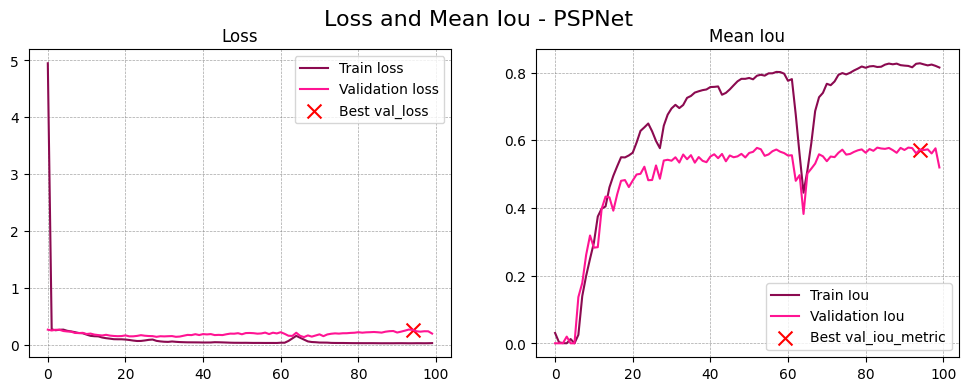
Comparación visual#
evaluar_modelo(model_pspnet, X_test, y_test, nombre_modelo="PSPNet")
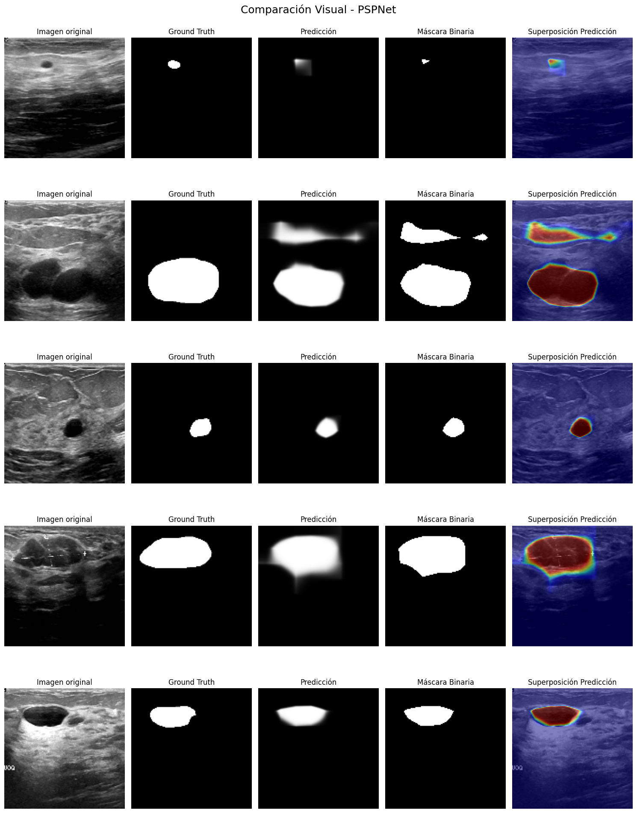
Mapas de error#
visualizar_segmentacion(model_pspnet, X_test, y_test, nombre_modelo="PSPNet")
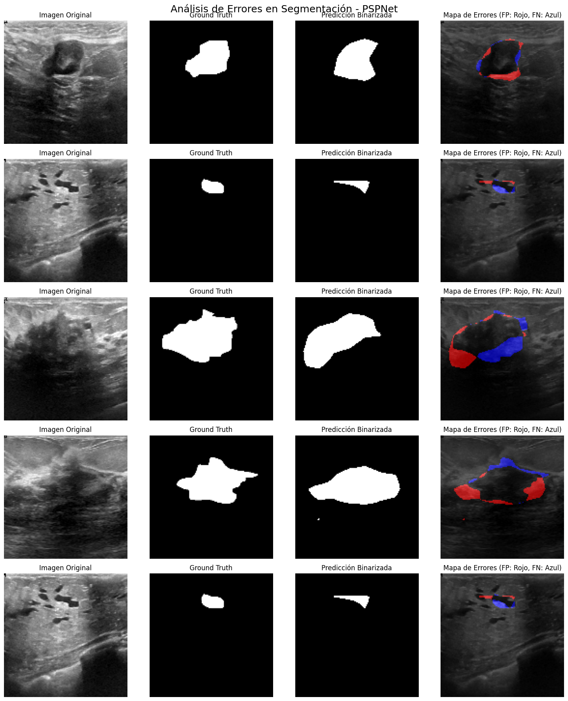
Curvas de evaluación#
plot_roc_pr_curves(y_test, y_pred)
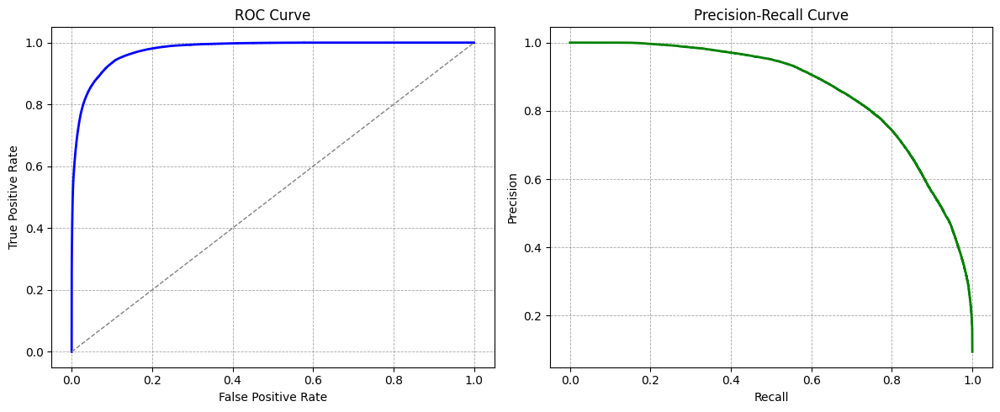
Distribución de métricas#
boxplots(y_test, y_pred)
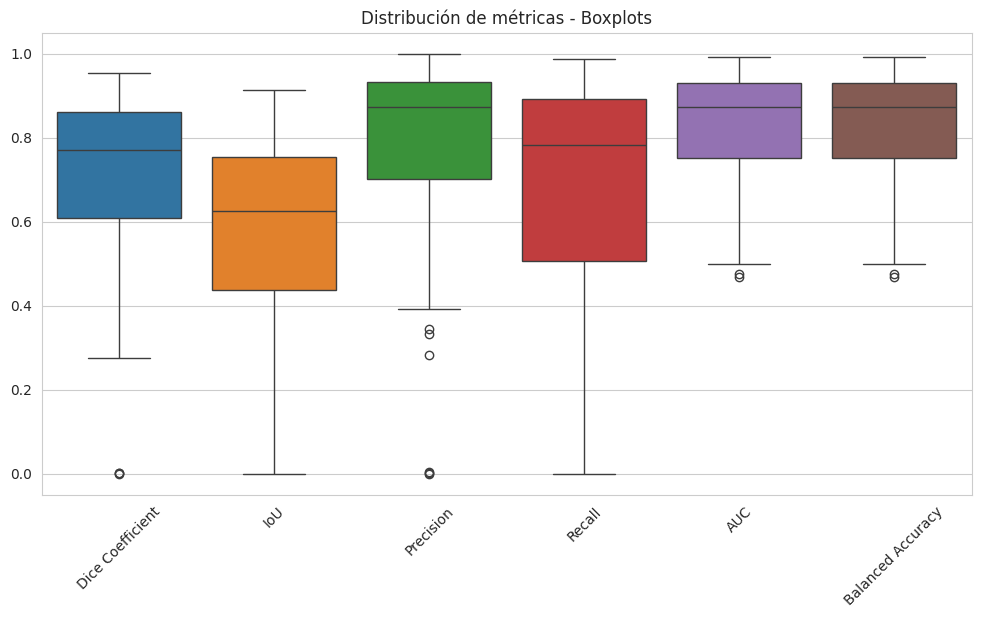
FCN#
Arquitectura y entrenamiento#
def conv_block(input, num_filters):
conv = Conv2D(num_filters, (3, 3), activation="relu", padding="same", kernel_initializer='he_normal')(input)
conv = Conv2D(num_filters, (3, 3), activation="relu", padding="same", kernel_initializer='he_normal')(conv)
return conv
def encoder_block(input, num_filters):
conv = conv_block(input, num_filters)
pool = MaxPooling2D((2, 2))(conv)
return conv, pool
def build_fcn(input_shape):
input_layer = Input(input_shape)
s1, p1 = encoder_block(input_layer, 64)
s2, p2 = encoder_block(p1, 128)
s3, p3 = encoder_block(p2, 256)
s4, p4 = encoder_block(p3, 512)
b1 = conv_block(p4, 1024)
fcn_conv1 = Conv2D(512, (3, 3), activation="relu", padding="same")(b1)
fcn_conv2 = Conv2D(256, (3, 3), activation="relu", padding="same")(fcn_conv1)
up1 = UpSampling2D((2, 2))(fcn_conv2)
up2 = UpSampling2D((2, 2))(up1)
up3 = UpSampling2D((2, 2))(up2)
up4 = UpSampling2D((2, 2))(up3)
output_layer = Conv2D(1, (1, 1), activation="sigmoid", padding="same")(up4)
model = Model(input_layer, output_layer, name="FCN")
return model
model_fcn = build_fcn(input_shape=(128, 128, 1))
model_fcn.compile(loss="binary_crossentropy", optimizer="Adam", metrics=[iou_metric])
checkpointer = [
EarlyStopping(monitor='val_mean_io_u', verbose=1, restore_best_weights=True, mode='max', patience=10),
ModelCheckpoint(
filepath='model_fcn.weights.best.keras',
monitor='val_mean_io_u',
verbose=1,
save_best_only=True,
mode='max'
)
]
history_fcn = None
if os.path.exists('history_fcn.joblib'):
history_fcn = load('history_fcn.joblib')
print("El archivo 'history_fcn.joblib' ya existe. Se ha cargado el historial del entrenamiento.")
else:
history_fcn = model_fcn.fit(
X_train, y_train,
epochs=100,
validation_data=(X_val, y_val),
callbacks=checkpointer,
verbose=2,
batch_size=10
)
dump(history_fcn.history, 'history_fcn.joblib')
print("El entrenamiento se ha completado y el historial ha sido guardado en 'history_fcn.joblib'.")
Epoch 1/100
49/49 - 18s - 376ms/step - iou_metric: 0.0033 - loss: 4.9430 - val_iou_metric: 2.6259e-09 - val_loss: 0.2882
Epoch 2/100
49/49 - 11s - 225ms/step - iou_metric: 0.0082 - loss: 0.2702 - val_iou_metric: 2.6259e-09 - val_loss: 0.2562
Epoch 3/100
49/49 - 5s - 103ms/step - iou_metric: 0.0577 - loss: 0.2448 - val_iou_metric: 0.1865 - val_loss: 0.2389
Epoch 4/100
49/49 - 5s - 105ms/step - iou_metric: 0.1515 - loss: 0.2299 - val_iou_metric: 0.1733 - val_loss: 0.2064
Epoch 5/100
49/49 - 5s - 103ms/step - iou_metric: 0.2150 - loss: 0.2054 - val_iou_metric: 0.2270 - val_loss: 0.2032
Epoch 6/100
49/49 - 5s - 92ms/step - iou_metric: 0.2186 - loss: 0.1989 - val_iou_metric: 0.1960 - val_loss: 0.1915
Epoch 7/100
49/49 - 5s - 103ms/step - iou_metric: 0.2463 - loss: 0.1967 - val_iou_metric: 0.2816 - val_loss: 0.1870
Epoch 8/100
49/49 - 5s - 103ms/step - iou_metric: 0.2859 - loss: 0.1848 - val_iou_metric: 0.2803 - val_loss: 0.1811
Epoch 9/100
49/49 - 5s - 92ms/step - iou_metric: 0.3020 - loss: 0.1733 - val_iou_metric: 0.3060 - val_loss: 0.1655
Epoch 10/100
49/49 - 4s - 92ms/step - iou_metric: 0.3542 - loss: 0.1571 - val_iou_metric: 0.2632 - val_loss: 0.1732
Epoch 11/100
49/49 - 4s - 90ms/step - iou_metric: 0.3562 - loss: 0.1554 - val_iou_metric: 0.3096 - val_loss: 0.1690
Epoch 12/100
49/49 - 5s - 105ms/step - iou_metric: 0.3815 - loss: 0.1421 - val_iou_metric: 0.3235 - val_loss: 0.1625
Epoch 13/100
49/49 - 5s - 103ms/step - iou_metric: 0.3944 - loss: 0.1274 - val_iou_metric: 0.2672 - val_loss: 0.1768
Epoch 14/100
49/49 - 5s - 105ms/step - iou_metric: 0.3967 - loss: 0.1220 - val_iou_metric: 0.3818 - val_loss: 0.1699
Epoch 15/100
49/49 - 4s - 91ms/step - iou_metric: 0.4203 - loss: 0.1244 - val_iou_metric: 0.3742 - val_loss: 0.1514
Epoch 16/100
49/49 - 5s - 104ms/step - iou_metric: 0.4193 - loss: 0.1172 - val_iou_metric: 0.3564 - val_loss: 0.1523
Epoch 17/100
49/49 - 5s - 105ms/step - iou_metric: 0.4421 - loss: 0.1073 - val_iou_metric: 0.3581 - val_loss: 0.1625
Epoch 18/100
49/49 - 4s - 91ms/step - iou_metric: 0.4626 - loss: 0.0955 - val_iou_metric: 0.3147 - val_loss: 0.1576
Epoch 19/100
49/49 - 5s - 105ms/step - iou_metric: 0.4561 - loss: 0.0981 - val_iou_metric: 0.4203 - val_loss: 0.1565
Epoch 20/100
49/49 - 5s - 103ms/step - iou_metric: 0.4513 - loss: 0.1006 - val_iou_metric: 0.3908 - val_loss: 0.1466
Epoch 21/100
49/49 - 4s - 92ms/step - iou_metric: 0.4654 - loss: 0.0929 - val_iou_metric: 0.4156 - val_loss: 0.1526
Epoch 22/100
49/49 - 5s - 105ms/step - iou_metric: 0.4834 - loss: 0.0849 - val_iou_metric: 0.3814 - val_loss: 0.1633
Epoch 23/100
49/49 - 4s - 91ms/step - iou_metric: 0.4928 - loss: 0.0840 - val_iou_metric: 0.3993 - val_loss: 0.1481
Epoch 24/100
49/49 - 5s - 92ms/step - iou_metric: 0.5012 - loss: 0.0809 - val_iou_metric: 0.4029 - val_loss: 0.1505
Epoch 25/100
49/49 - 4s - 91ms/step - iou_metric: 0.5093 - loss: 0.0785 - val_iou_metric: 0.3908 - val_loss: 0.1667
Epoch 26/100
49/49 - 5s - 104ms/step - iou_metric: 0.5083 - loss: 0.0770 - val_iou_metric: 0.3983 - val_loss: 0.1676
Epoch 27/100
49/49 - 5s - 104ms/step - iou_metric: 0.5099 - loss: 0.0759 - val_iou_metric: 0.3780 - val_loss: 0.1739
Epoch 28/100
49/49 - 5s - 104ms/step - iou_metric: 0.5196 - loss: 0.0743 - val_iou_metric: 0.4030 - val_loss: 0.1685
Epoch 29/100
49/49 - 5s - 104ms/step - iou_metric: 0.5164 - loss: 0.0731 - val_iou_metric: 0.3994 - val_loss: 0.1744
Epoch 30/100
49/49 - 5s - 104ms/step - iou_metric: 0.5184 - loss: 0.0730 - val_iou_metric: 0.4015 - val_loss: 0.1667
Epoch 31/100
49/49 - 5s - 104ms/step - iou_metric: 0.5187 - loss: 0.0731 - val_iou_metric: 0.3760 - val_loss: 0.1754
Epoch 32/100
49/49 - 4s - 92ms/step - iou_metric: 0.5279 - loss: 0.0726 - val_iou_metric: 0.4120 - val_loss: 0.1644
Epoch 33/100
49/49 - 4s - 92ms/step - iou_metric: 0.5230 - loss: 0.0718 - val_iou_metric: 0.3801 - val_loss: 0.1865
Epoch 34/100
49/49 - 5s - 104ms/step - iou_metric: 0.5234 - loss: 0.0718 - val_iou_metric: 0.3770 - val_loss: 0.1771
Epoch 35/100
49/49 - 4s - 92ms/step - iou_metric: 0.5199 - loss: 0.0713 - val_iou_metric: 0.4043 - val_loss: 0.1730
Epoch 36/100
49/49 - 5s - 104ms/step - iou_metric: 0.5245 - loss: 0.0706 - val_iou_metric: 0.3978 - val_loss: 0.1779
Epoch 37/100
49/49 - 5s - 104ms/step - iou_metric: 0.5209 - loss: 0.0701 - val_iou_metric: 0.3997 - val_loss: 0.1730
Epoch 38/100
49/49 - 4s - 91ms/step - iou_metric: 0.5311 - loss: 0.0701 - val_iou_metric: 0.3952 - val_loss: 0.1774
Epoch 39/100
49/49 - 5s - 92ms/step - iou_metric: 0.5264 - loss: 0.0703 - val_iou_metric: 0.4035 - val_loss: 0.1818
Epoch 40/100
49/49 - 4s - 92ms/step - iou_metric: 0.5016 - loss: 0.0820 - val_iou_metric: 0.3961 - val_loss: 0.1505
Epoch 41/100
49/49 - 4s - 92ms/step - iou_metric: 0.5130 - loss: 0.0834 - val_iou_metric: 0.3617 - val_loss: 0.1509
Epoch 42/100
49/49 - 5s - 92ms/step - iou_metric: 0.5033 - loss: 0.0766 - val_iou_metric: 0.3725 - val_loss: 0.1560
Epoch 43/100
49/49 - 5s - 103ms/step - iou_metric: 0.5207 - loss: 0.0731 - val_iou_metric: 0.4020 - val_loss: 0.1639
Epoch 44/100
49/49 - 5s - 105ms/step - iou_metric: 0.5308 - loss: 0.0714 - val_iou_metric: 0.3829 - val_loss: 0.1634
Epoch 45/100
49/49 - 5s - 103ms/step - iou_metric: 0.5211 - loss: 0.0707 - val_iou_metric: 0.3944 - val_loss: 0.1662
Epoch 46/100
49/49 - 5s - 104ms/step - iou_metric: 0.5231 - loss: 0.0697 - val_iou_metric: 0.3857 - val_loss: 0.1645
Epoch 47/100
49/49 - 5s - 103ms/step - iou_metric: 0.5336 - loss: 0.0694 - val_iou_metric: 0.3743 - val_loss: 0.1754
Epoch 48/100
49/49 - 4s - 91ms/step - iou_metric: 0.5276 - loss: 0.0695 - val_iou_metric: 0.4038 - val_loss: 0.1629
Epoch 49/100
49/49 - 5s - 104ms/step - iou_metric: 0.5292 - loss: 0.0693 - val_iou_metric: 0.3841 - val_loss: 0.1726
Epoch 50/100
49/49 - 5s - 104ms/step - iou_metric: 0.5312 - loss: 0.0690 - val_iou_metric: 0.3872 - val_loss: 0.1729
Epoch 51/100
49/49 - 5s - 104ms/step - iou_metric: 0.5335 - loss: 0.0690 - val_iou_metric: 0.3995 - val_loss: 0.1757
Epoch 52/100
49/49 - 4s - 91ms/step - iou_metric: 0.5321 - loss: 0.0689 - val_iou_metric: 0.3796 - val_loss: 0.1736
Epoch 53/100
49/49 - 4s - 91ms/step - iou_metric: 0.5341 - loss: 0.0686 - val_iou_metric: 0.3818 - val_loss: 0.1768
Epoch 54/100
49/49 - 5s - 104ms/step - iou_metric: 0.5298 - loss: 0.0684 - val_iou_metric: 0.3951 - val_loss: 0.1778
Epoch 55/100
49/49 - 5s - 104ms/step - iou_metric: 0.5360 - loss: 0.0685 - val_iou_metric: 0.3738 - val_loss: 0.1775
Epoch 56/100
49/49 - 5s - 105ms/step - iou_metric: 0.5351 - loss: 0.0684 - val_iou_metric: 0.4023 - val_loss: 0.1783
Epoch 57/100
49/49 - 5s - 103ms/step - iou_metric: 0.5327 - loss: 0.0684 - val_iou_metric: 0.3889 - val_loss: 0.1784
Epoch 58/100
49/49 - 5s - 105ms/step - iou_metric: 0.5307 - loss: 0.0684 - val_iou_metric: 0.3939 - val_loss: 0.1797
Epoch 59/100
49/49 - 4s - 92ms/step - iou_metric: 0.5365 - loss: 0.0683 - val_iou_metric: 0.3768 - val_loss: 0.1833
Epoch 60/100
49/49 - 5s - 103ms/step - iou_metric: 0.5332 - loss: 0.0685 - val_iou_metric: 0.3951 - val_loss: 0.1745
Epoch 61/100
49/49 - 5s - 105ms/step - iou_metric: 0.5326 - loss: 0.0686 - val_iou_metric: 0.3918 - val_loss: 0.1841
Epoch 62/100
49/49 - 5s - 103ms/step - iou_metric: 0.5324 - loss: 0.0684 - val_iou_metric: 0.4018 - val_loss: 0.1764
Epoch 63/100
49/49 - 5s - 92ms/step - iou_metric: 0.5339 - loss: 0.0685 - val_iou_metric: 0.3887 - val_loss: 0.1746
Epoch 64/100
49/49 - 5s - 103ms/step - iou_metric: 0.5340 - loss: 0.0682 - val_iou_metric: 0.3914 - val_loss: 0.1826
Epoch 65/100
49/49 - 5s - 104ms/step - iou_metric: 0.5339 - loss: 0.0683 - val_iou_metric: 0.4128 - val_loss: 0.1818
Epoch 66/100
49/49 - 5s - 105ms/step - iou_metric: 0.5340 - loss: 0.0682 - val_iou_metric: 0.3898 - val_loss: 0.1813
Epoch 67/100
49/49 - 4s - 91ms/step - iou_metric: 0.5285 - loss: 0.0684 - val_iou_metric: 0.4057 - val_loss: 0.1808
Epoch 68/100
49/49 - 5s - 105ms/step - iou_metric: 0.5362 - loss: 0.0686 - val_iou_metric: 0.3824 - val_loss: 0.1777
Epoch 69/100
49/49 - 4s - 92ms/step - iou_metric: 0.5282 - loss: 0.0684 - val_iou_metric: 0.3911 - val_loss: 0.1768
Epoch 70/100
49/49 - 5s - 103ms/step - iou_metric: 0.5309 - loss: 0.0683 - val_iou_metric: 0.3842 - val_loss: 0.1771
Epoch 71/100
49/49 - 4s - 91ms/step - iou_metric: 0.5318 - loss: 0.0683 - val_iou_metric: 0.3768 - val_loss: 0.1765
Epoch 72/100
49/49 - 5s - 104ms/step - iou_metric: 0.5315 - loss: 0.0692 - val_iou_metric: 0.3889 - val_loss: 0.1762
Epoch 73/100
49/49 - 5s - 92ms/step - iou_metric: 0.5351 - loss: 0.0688 - val_iou_metric: 0.3867 - val_loss: 0.1679
Epoch 74/100
49/49 - 5s - 103ms/step - iou_metric: 0.5260 - loss: 0.0687 - val_iou_metric: 0.3897 - val_loss: 0.1838
Epoch 75/100
49/49 - 4s - 91ms/step - iou_metric: 0.5294 - loss: 0.0686 - val_iou_metric: 0.3857 - val_loss: 0.1819
Epoch 76/100
49/49 - 4s - 91ms/step - iou_metric: 0.5341 - loss: 0.0683 - val_iou_metric: 0.3917 - val_loss: 0.1771
Epoch 77/100
49/49 - 5s - 104ms/step - iou_metric: 0.5295 - loss: 0.0681 - val_iou_metric: 0.3796 - val_loss: 0.1801
Epoch 78/100
49/49 - 5s - 92ms/step - iou_metric: 0.5328 - loss: 0.0682 - val_iou_metric: 0.3905 - val_loss: 0.1814
Epoch 79/100
49/49 - 5s - 103ms/step - iou_metric: 0.5257 - loss: 0.0682 - val_iou_metric: 0.3968 - val_loss: 0.1824
Epoch 80/100
49/49 - 4s - 91ms/step - iou_metric: 0.5370 - loss: 0.0683 - val_iou_metric: 0.3794 - val_loss: 0.1787
Epoch 81/100
49/49 - 5s - 104ms/step - iou_metric: 0.5203 - loss: 0.0745 - val_iou_metric: 0.3853 - val_loss: 0.1873
Epoch 82/100
49/49 - 5s - 104ms/step - iou_metric: 0.2948 - loss: 0.1972 - val_iou_metric: 0.1259 - val_loss: 0.2170
Epoch 83/100
49/49 - 5s - 103ms/step - iou_metric: 0.2383 - loss: 0.2171 - val_iou_metric: 0.2471 - val_loss: 0.1964
Epoch 84/100
49/49 - 5s - 104ms/step - iou_metric: 0.3123 - loss: 0.1786 - val_iou_metric: 0.3594 - val_loss: 0.1678
Epoch 85/100
49/49 - 4s - 91ms/step - iou_metric: 0.3787 - loss: 0.1377 - val_iou_metric: 0.3758 - val_loss: 0.1537
Epoch 86/100
49/49 - 5s - 103ms/step - iou_metric: 0.4320 - loss: 0.1140 - val_iou_metric: 0.3171 - val_loss: 0.1582
Epoch 87/100
49/49 - 5s - 104ms/step - iou_metric: 0.4525 - loss: 0.1005 - val_iou_metric: 0.3679 - val_loss: 0.1522
Epoch 88/100
49/49 - 5s - 105ms/step - iou_metric: 0.4757 - loss: 0.0918 - val_iou_metric: 0.3861 - val_loss: 0.1686
Epoch 89/100
49/49 - 5s - 103ms/step - iou_metric: 0.4981 - loss: 0.0836 - val_iou_metric: 0.3960 - val_loss: 0.1597
Epoch 90/100
49/49 - 5s - 105ms/step - iou_metric: 0.5056 - loss: 0.0790 - val_iou_metric: 0.4005 - val_loss: 0.1782
Epoch 91/100
49/49 - 5s - 104ms/step - iou_metric: 0.5232 - loss: 0.0744 - val_iou_metric: 0.4116 - val_loss: 0.1655
Epoch 92/100
49/49 - 4s - 90ms/step - iou_metric: 0.5247 - loss: 0.0719 - val_iou_metric: 0.3719 - val_loss: 0.1910
Epoch 93/100
49/49 - 5s - 105ms/step - iou_metric: 0.5264 - loss: 0.0708 - val_iou_metric: 0.3913 - val_loss: 0.1885
Epoch 94/100
49/49 - 4s - 92ms/step - iou_metric: 0.5324 - loss: 0.0699 - val_iou_metric: 0.3859 - val_loss: 0.1981
Epoch 95/100
49/49 - 5s - 104ms/step - iou_metric: 0.5284 - loss: 0.0698 - val_iou_metric: 0.3916 - val_loss: 0.1984
Epoch 96/100
49/49 - 4s - 91ms/step - iou_metric: 0.5266 - loss: 0.0705 - val_iou_metric: 0.3934 - val_loss: 0.2039
Epoch 97/100
49/49 - 5s - 103ms/step - iou_metric: 0.5308 - loss: 0.0695 - val_iou_metric: 0.3856 - val_loss: 0.1945
Epoch 98/100
49/49 - 4s - 91ms/step - iou_metric: 0.5318 - loss: 0.0688 - val_iou_metric: 0.3900 - val_loss: 0.2105
Epoch 99/100
49/49 - 4s - 90ms/step - iou_metric: 0.5345 - loss: 0.0685 - val_iou_metric: 0.3827 - val_loss: 0.2058
Epoch 100/100
49/49 - 4s - 91ms/step - iou_metric: 0.5394 - loss: 0.0682 - val_iou_metric: 0.3798 - val_loss: 0.2103
El entrenamiento se ha completado y el historial ha sido guardado en 'history_fcn.joblib'.
Curvas de evaluación#
graficar_historial(history_fcn, nombre_modelo="FCN")
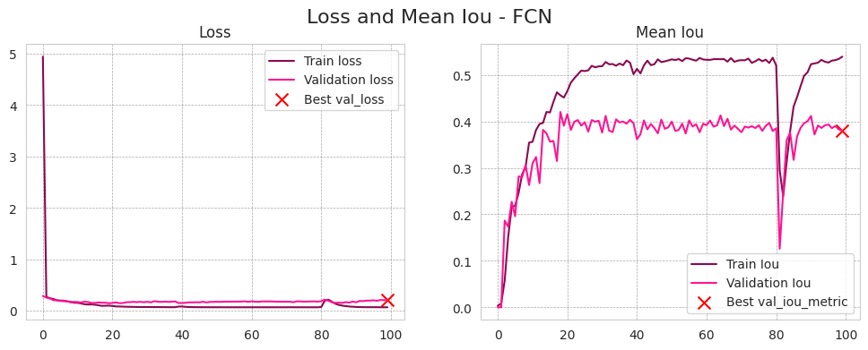
Métricas de evaluación#
y_pred=model_fcn.predict(X_test,verbose=0)
y_pred_thresholded = y_pred > 0.5
IOU_keras = MeanIoU(num_classes=2)
IOU_keras.update_state(y_pred_thresholded, y_test)
iou_score = IOU_keras.result().numpy()
prec_score = Precision()
prec_score.update_state(y_pred_thresholded, y_test)
p = prec_score.result().numpy()
recall_score = Recall()
recall_score.update_state(y_pred_thresholded, y_test)
r = recall_score.result().numpy()
auc_score = AUC()
auc_score.update_state(y_pred_thresholded, y_test)
auc = auc_score.result().numpy()
intersection = np.sum(y_pred_thresholded * y_test)
union = np.sum(y_pred_thresholded) + np.sum(y_test)
dice_coefficient = (2. * intersection) / (union + 1e-7) # Evitar división por cero
balanced_accuracy = (p + r) / 2
metrics_dict = {
"Dice Coefficient": dice_coefficient,
"Mean IoU": iou_score,
"Precision": p,
"Recall": r,
"AUC": auc,
"Balanced Accuracy": balanced_accuracy}
df_metrics_fcn = pd.DataFrame(metrics_dict, index=["Segmentación FCN"])
df_metrics_fcn.to_csv("resultados_fcn.csv")
df_metrics_fcn
| Dice Coefficient | Mean IoU | Precision | Recall | AUC | Balanced Accuracy | |
|---|---|---|---|---|---|---|
| Segmentación FCN | 0.697355 | 0.74195 | 0.607485 | 0.818203 | 0.891698 | 0.712844 |
Comparación visual#
evaluar_modelo(model_fcn, X_test, y_test, nombre_modelo="FCN")
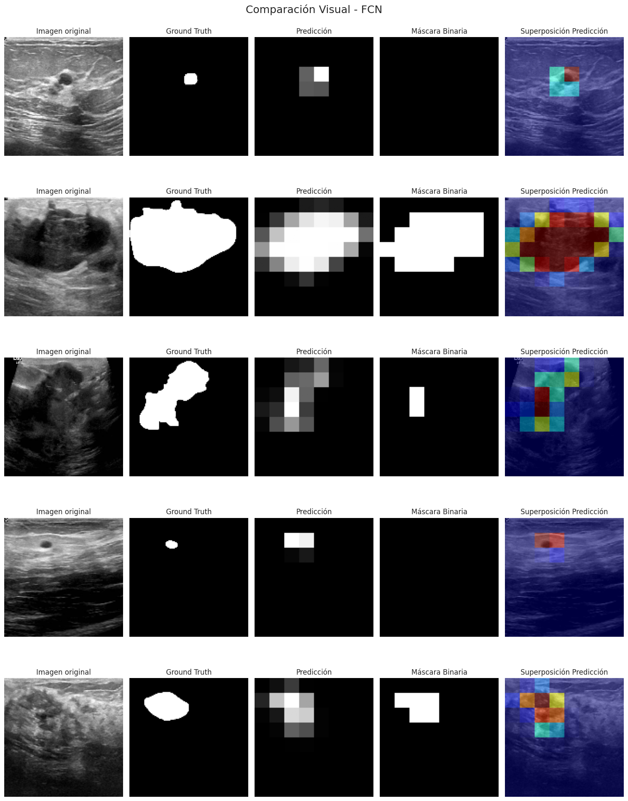
Mapas de error#
visualizar_segmentacion(model_fcn, X_test, y_test, nombre_modelo="FCN")
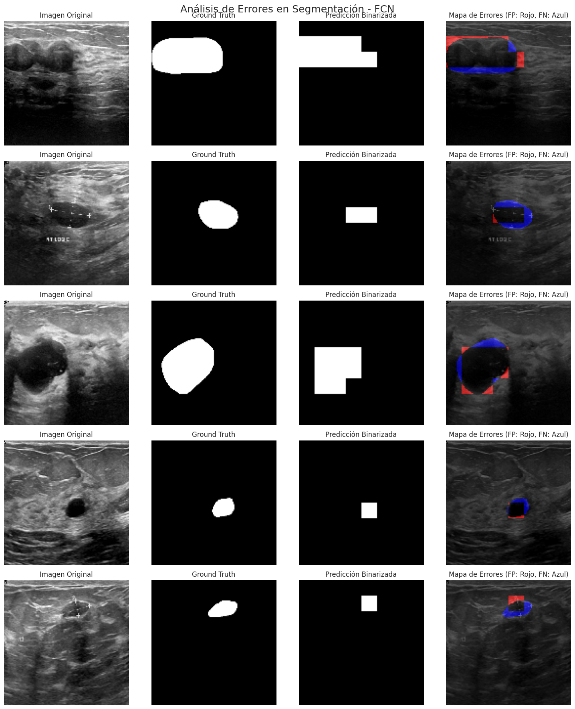
Curvas de evaluación#
plot_roc_pr_curves(y_test, y_pred)
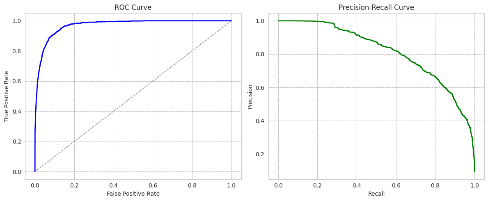
Distribución de métricas#
boxplots(y_test, y_pred)
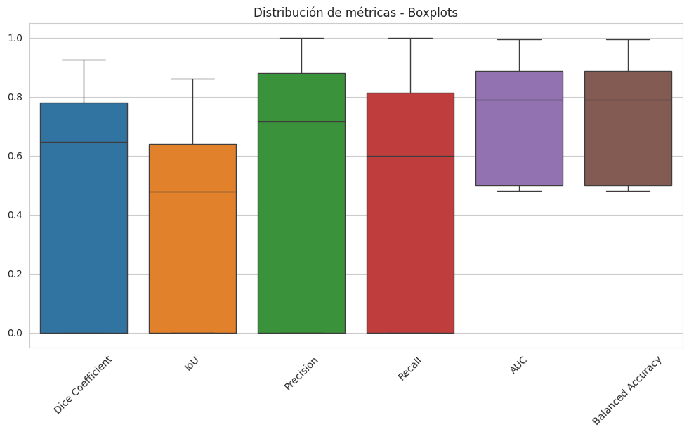
Resultados e interpretaciones generales#
Resultados#
data = {
"Modelo": [
"U-Net", "VNet", "Seg-Net", "Attention U-Net",
"ResUNet", "PSPNet", "FCN"
],
"Dice Coefficient": [
0.727057, 0.739280, 0.666454, 0.744921,
0.728793, 0.737071, 0.697355
],
"Mean IoU": [
0.754134, 0.764111, 0.714102, 0.765869,
0.755126, 0.759338, 0.741950
],
"Precision": [
0.662543, 0.657537, 0.571378, 0.701075,
0.664241, 0.706997, 0.607485
],
"Recall": [
0.805402, 0.844551, 0.799591, 0.794778,
0.807467, 0.770351, 0.818203
],
"AUC": [
0.882914, 0.902005, 0.874364, 0.879918,
0.884028, 0.867736, 0.891698
],
"Balanced Accuracy": [
0.733972, 0.751044, 0.685484, 0.747926,
0.735854, 0.738674, 0.712844
]
}
df_resultados = pd.DataFrame(data)
df_resultados
| Modelo | Dice Coefficient | Mean IoU | Precision | Recall | AUC | Balanced Accuracy | |
|---|---|---|---|---|---|---|---|
| 0 | U-Net | 0.727057 | 0.754134 | 0.662543 | 0.805402 | 0.882914 | 0.733972 |
| 1 | VNet | 0.739280 | 0.764111 | 0.657537 | 0.844551 | 0.902005 | 0.751044 |
| 2 | Seg-Net | 0.666454 | 0.714102 | 0.571378 | 0.799591 | 0.874364 | 0.685484 |
| 3 | Attention U-Net | 0.744921 | 0.765869 | 0.701075 | 0.794778 | 0.879918 | 0.747926 |
| 4 | ResUNet | 0.728793 | 0.755126 | 0.664241 | 0.807467 | 0.884028 | 0.735854 |
| 5 | PSPNet | 0.737071 | 0.759338 | 0.706997 | 0.770351 | 0.867736 | 0.738674 |
| 6 | FCN | 0.697355 | 0.741950 | 0.607485 | 0.818203 | 0.891698 | 0.712844 |
Para la interpretación de las métricas tendremos en cuenta lo siguiente:
Intersection over Union (IoU): Mide la superposición entre la segmentación predicha y la real. Valores más altos indican una mejor segmentación.
Recall vs. Precision:
Recall más alto que precisión: El modelo detecta la mayoría de los píxeles relevantes (buen cubrimiento), pero también genera falsos positivos.
Precision más alto que recall: El modelo es más conservador y evita falsos positivos, pero puede no detectar todos los píxeles relevantes.
Dice Coefficient: Métrica similar al IoU, pero más sensible a la distribución de píxeles. Un valor alto indica una gran coincidencia entre la máscara predicha y la real.
Área Bajo la Curva (AUC): Evalúa el rendimiento del modelo en diferentes umbrales de decisión. Un AUC alto indica que el modelo segmenta bien en distintas condiciones.
Balanced Accuracy: Promedia la sensibilidad (recall) y la especificidad, útil en conjuntos de datos desbalanceados. Un valor alto indica que el modelo trata bien ambas clases (píxeles de la estructura y fondo).
Interpretación#
En general, los modelos Attention U-Net y VNet presentan los mejores resultados en términos de superposición entre la segmentación predicha y la real. Attention U-Net obtuvo el mayor Dice Coefficient (0.7449) y el Mean IoU más alto (0.7659), lo que sugiere una capacidad sobresaliente para delinear con precisión las regiones tumorales. VNet, con un Dice Coefficient de 0.7393 y un Mean IoU de 0.7641, también demostró un alto rendimiento en esta tarea.
En cuanto a la sensibilidad (Recall), VNet se posiciona como el mejor modelo con un valor de 0.8446, indicando una excelente capacidad para identificar correctamente los píxeles tumorales, minimizando los falsos negativos. Le sigue el modelo FCN, con un valor de 0.8182, aunque su precisión es considerablemente menor (0.6075), lo que sugiere un mayor número de falsos positivos.
Desde la perspectiva de la precisión, los modelos PSPNet (0.7070) y Attention U-Net (0.7011) destacan por su capacidad para generar predicciones confiables, cometiendo menos errores al clasificar píxeles como tumorales cuando no lo son.
Al analizar el área bajo la curva ROC (AUC), el modelo VNet nuevamente sobresale con un valor de 0.9020, evidenciando una mayor robustez en distintos umbrales de decisión. Lo siguen ResUNet (0.8840) y FCN (0.8917), aunque este último presenta deficiencias en otras métricas fundamentales, como el Dice Coefficient.
La Balanced Accuracy, que considera el equilibrio entre clases al evaluar tanto los verdaderos positivos como los verdaderos negativos, muestra que VNet (0.7510) y Attention U-Net (0.7479) son los modelos más equilibrados. Esto indica una adecuada capacidad para segmentar tanto el tejido tumoral como el fondo sin sesgo aparente hacia una de las clases.
En contraste, el modelo Seg-Net exhibe el desempeño más bajo en múltiples métricas clave. Con un Dice Coefficient de 0.6665, una precisión de 0.5714 y una Balanced Accuracy de 0.6855, presenta una tendencia marcada a generar falsos positivos, a pesar de tener un recall relativamente alto (0.7996). Esto sugiere una detección agresiva de píxeles tumorales, aunque con una alta tasa de error.
En conclusión, los modelos Attention U-Net y VNet se posicionan como las opciones más adecuadas para la segmentación de tumores en imágenes de ultrasonido, al presentar un equilibrio óptimo entre precisión, sensibilidad y estabilidad bajo diferentes condiciones. En contraste, Seg-Net y FCN presentan limitaciones importantes, siendo menos confiables para aplicaciones clínicas donde la precisión y el equilibrio en la detección son fundamentales.